生成时间：2026-09-24T13:37:26+08:00
今日保留论文数：20
内容构成：今日新文 20 篇；补充推荐 0 篇；经典旧文精读 0 篇
高能天体物理重点
1. Disk truncation triggers relativistic jet launching of a highly accreting supermassive black hole
- 来源：arXiv / astro-ph.HE
- 链接：https://arxiv.org/abs/2609.27057
- 作者：Hirofumi Noda, Kazuhiro Hada, Hiroto Maruyama, Taishu Kayanoki, Kenji Toma, Taiki Kawamuro, Yoshiyuki Inoue, Tomohisa Kawashima
- 评分：novelty 9/10，importance 9/10，relevance 9/10，final 10.00/10
- 推荐理由：XRISM铁线与同时射电喷流几何把3C120盘截断和喷流尺度联系，直接触及吸积供能问题，需区分支持与因果证明。
中文题目：3C120的盘—喷流几何：截断盘内侧是否为强喷流提供热流？
做了什么：作者结合2025年3月约200ks的XRISM铁K能段观测和邻近数月的多频VLBI资料，研究高吸积率3C120如何维持强喷流。高分辨谱要求近盘相对论反射，内缘约17.4个引力半径；射电准直轮廓从内侧近抛物线转为外侧近圆锥，向视界外推的半径不超过约7个引力半径。这支持冷薄盘内侧存在有利于输运磁通的热厚流。
这里的视界半径是外推，自旋是固定参数，热厚流也不等于已经确认磁阻塞盘。X射线与86GHz观测相隔约一个月，不能称严格同时。附录约一天的准周期信号只覆盖4—5周期，在特定红噪声模型和预设搜索窗下超过95%全局阈值，作者仍称其边缘结果；它不能单独确认磁通喷发或盘进动。
为什么重要：高吸积率并不保证冷薄盘一直延伸到最内稳定圆轨道。本文用微量热计分开窄铁线和宽反射，再以独立射电准直尺度比较，使发动机结构讨论更具体。但可行的几何环境与盘截断触发喷流的时间因果是不同结论，当前数据更直接支持前者。
理论 / 观测 / 仪器方法价值：方法价值是逐层检验谱模型残差、扣除射电波束并统一为引力半径，再比较两种观测的条件尺度。实际应用需要传播质量、视角、核心位移和非同时性误差；单纯增加一个反射分量或向内延长一条幂律，都不足以独立证明喷流发动机。
为什么应该关注：内侧热流连接吸积供能、磁场输运和种子光子环境，是高能喷流研究的重要基础。本文未测定质子加速或中微子产额。下一步值得追踪严格同时的多历元观测，检验盘内缘变化、热流及射电结节是否协同演化，并用长基线时序重新检验候选周期。
展开详细解读：文章讲解、背景、理论、重点章节、图表与相关工作
文章详细讲解
科学问题：Blandford—Znajek机制用磁场提取黑洞自旋能，要求足够有序磁通。热厚流较容易维持磁通，冷薄盘则可能受扩散限制。3C120的质量约6.3×10⁷太阳质量、爱丁顿比约0.1—0.2，却有强喷流，因此关键问题是高吸积环境的最内侧是否仍有热厚结构。
作者怎么做：Resolve与Xtend联合拟合3—12keV谱，先只放连续谱、宽线区和尘埃环反射，再加入相对论盘反射。射电图沿喷流做横切，用高斯宽度扣除波束，拟合半径随距离的折断幂律。两套分析各自形成尺度约束，再讨论共同的盘—喷流图像。
关键结果：物理反射模型将C统计量从4209.0/4157改进为4106.2/4152，内缘17.4^{+6.3}{-6.5}Rg、倾角31.3^{+1.0}度，误差均为1σ。喷流内外指数为0.61±0.07与1.13±0.04，转折约3.13×10⁵Rg。向视界外推的半径小于截断盘尺度，与喷流来自内侧区域相容。
局限和下一步：自旋固定0.99，改为0仍同样拟合，所以没有测出高自旋。VLBI直接分辨约0.03pc，约7Rg来自外推，视角和核心位移影响距离原点。热厚流不是MAD充分条件，边缘QPO也不确认磁通喷发；需要更严格同时的核心位移和多历元谱时序来检验动力学。
关键结果是怎么做出来的
第一步隔离铁K混合成分。Resolve只用高分辨主级事件，剔除增益波动像素27，建立响应及非X射线背景。闸阀关闭和校准考虑使两仪器均限制3—12keV，避免软超额影响，但也不再是完整盘冕SED分析。比值谱显示窄6.4keV线之外约4—7keV的宽结构。
第二步检验远区反射。基线两组展宽MYTorus表示宽线区和尘埃环，缺盘反射时半径、倾角触预设边界，5—7keV仍有残差。第三组经验宽反射使C降至4124.6/4154，AIC由4225.0降至4146.7。这支持在当前比较集合中需要额外宽成分，不能将ΔAIC直接读成发现σ。
第三步以relxill取代经验分量，得C=4106.2/4152和AIC=4132.3。图3铁K近景和表1参数显示高分辨分解降低窄线混淆，但发射率、电离和几何仍共塑线形。弱FeXXV残差加入光致电离成分后不明显改变盘参数，是针对一个具体混淆的稳健性检查。
第四步获取准直轮廓。86GHz观测在4月26—27日，22GHz在4月23日，43和15GHz堆叠多个邻近历元。各图卷积指定圆波束，约每五分之一波束横切后扣除波束宽度。相邻切片因波束相关，不能当作同等数量的独立分辨单元。
第五步比较尺度。图5金带来自X射线内缘，黑线及青带是射电轮廓及其外推。射电原点为86GHz核心、视角19度，与谱倾角约31度不同；没有可靠的严格同时相位参考核心位移测量，因此小尺度比较仍依赖系统假设。
最后分开时序证据。附录A以5ks光变分箱、一万次红噪声模拟和预设6×10⁻⁶至2×10⁻⁵Hz窗口评价峰。约1.2×10⁻⁵Hz超过该窗口95%阈值，但只有4—5周期。附录B在谱内缘处的简单进动频率更低一个数量级以上，不能据此把候选峰直接标为该半径进动。
展开背景、理论、公式、模型和章节导读
背景知识
吸积能在辐射、内部热和外流之间分配。冷薄盘几何厚度小且冷却有效，热厚流保留更多内部能。爱丁顿比说明总体辐射强弱，不能给每个半径唯一指定结构；薄盘截断后，内部仍可能由热流填充，并非空洞。
铁K反射来自受照明物质。远处给窄线，近盘轨道运动和引力红移形成宽结构。微量热计有助拆开窄线细节，减少它们冒充宽底的可能，但照明、电离和倾角同样改变形状，不能从红翼末端直接读取唯一半径。
射电VLBI核心通常接近某频率光深为1的位置，不必等于黑洞。频率改变可以产生核心位移，图上距离还须退投影。与X射线内缘比较需要波束、视角和原点三步，不能只换算角尺度。
MAD表示磁通强到明显阻碍吸积并调节流动，不能与热厚流等同。BZ机制还依赖自旋。3C120此前已有X射线凹陷与随后射电结节联系；本文增加反射分解和准直几何，并非首次发现这个源的盘喷流关联。
基础理论 / 方法脉络
引力半径让不同质量系统可以按无量纲几何比较，但大质量黑洞同样Rg倍数对应更长实际时标。本文盘内缘较远，谱对自旋缺敏感性，所以固定自旋不能当测量。统一单位不会自动证明所有动力学相似。
反射与盘连续谱回答不同问题。3—12keV幂律代表康普顿连续谱近似，反射表示盘的响应。本文没有通过完整热连续谱独立测半径，也没有直接测出冕温度和光深；内侧热厚流是综合谱和理论的解释。
喷流半径指数接近1对应近圆锥，更小指数意味着开角随距离降低。它约束准直形状，却不唯一给磁拓扑、组分和功率。向视界延伸还假定中间没有未分辨的新转折，这限制约7Rg数值的地位。
C和AIC只比较指定谱模型，参数1σ区间不囊括全部系统误差。QPO全局95%只针对所设窗口和噪声，不能当所有频率与历元试验后的发现。谱模型偏好、几何相容和时序候选必须分层表达。
公式与推导
以下沿原文几何关系与附录B连接推断，标准教学公式单独标明，不代表作者另做了独立拟合。
原文先定义
质量采用6.3×10⁷太阳质量，r无量纲。谱和射电共用质量，物理尺寸系统误差并非完全独立。
线能转移的教学关系为
g包括引力红移、多普勒及几何。不同盘位置的g不同，积分形成宽线，因此单个红翼位移不能唯一反演半径，实际需反射辐射转移。
原文照明幂律及电离的标准背景为
q是拟合量，后式为教学补充，FX是照明能流、n为数密度，ξ单位erg cm s⁻¹。照明、电离与内缘共同改变谱形，须联合拟合。
AIC的标准教学定义为
k为自由参数数，最大似然与C联系。原文AIC下降78.3是给定模型中的偏好，不是发现σ数或对所有替代谱模型的排除。
原文III.2用高斯波束扣除
两个Theta为同单位FWHM，接近时差平方误差被放大，未分辨宽度不能当精确半径。
标准退投影关系为
本文取19度，更小视角把相同投影点移到更大距离，改变向内外推。核心位移还会改变原点，是另一个系统项。
原文折断模型的两端为
内外指数0.61±0.07与1.13±0.04，转折约3.13×10⁵Rg。平滑度s固定10；完整式1前因子写(au−ad)/2而后项按s平滑，按字面在z0不等于所称Rjet,0，归一化记号待核。这里不默改或重算归一化，只解释两端斜率。
附录B的试验粒子进动估计为
a为无量纲自旋。作者在谱内缘代入a=0.99得约8×10⁻⁸至8×10⁻⁷Hz，低于候选峰。它不是延展热流的完整全局进动解，不能唯一识别MAD。
附录A的背景为
N、alpha描述红噪声，CP是泊松底。作者遮罩搜索窗拟合、模拟十倍时长后截断，再做窗口内试验校正；换更复杂噪声需重校准阈值。
BZ机制的标准教学标度为
磁通Phi及视界角频率Omega共同控制功率，系数依赖场几何。本文没有独立测出二者，因此几何相容不能唯一反演喷流功率来源。
模型拟合 / 应用方法
输入为3月19—24日XRISM约200ks，HEASOFT v6.36及2025年11月CALDB。Resolve最优分箱、Xtend至少20计数/箱，均用C统计量；显示图的再分箱不改变拟合样本。排除3keV以下减少软成分混淆，也失去盘种子光子约束。
固定银河柱密度1.02×10²¹cm⁻²、远区反射柱密度10²⁴cm⁻²。宽线区和环内缘下限100及10⁴Rg，倾角上限45度。基线触边说明其试图补偿未建模宽结构，边界值不能被当可靠远区测量。
relxill自旋固定0.99，反射分数−1，只输出反射；发射率两指数绑定，倾角和光子指数共享。Γ=1.83±0.01、logξ=2.96^{+0.09}_{-0.06}，发射率上误差触硬限。自旋改0仍同拟合，是缺敏感性的直接检查，不支持高自旋观测宣称。
射电固定平滑度10、视角19度和质量，拟合四参数，表2约化χ²1.18。堆叠多历元可能混合演化，密切片也相关，本文没有给完整协方差与全部系统传播所需资料，因此青带不是总误差包络。
时序采用单幂律红噪声加常数，排除最低频点并遮罩搜索窗。少周期和噪声选择使作者称结果边缘。磁通喷发、更小半径进动或逆行MAD都只是可能解释，需要长基线和替代噪声检验，不能从这个峰反向确认发动机。
重点章节 / 结果段落怎么读
第II.1与表1核对能段、固定量和1σ口径，先明确盘参数条件。
第III.1按三步模型及图2残差、图3近景读，追踪宽成分为何被要求。
第II.2与III.2核对观测日期、波束、原点和视角，再读图5以区分测量与外推。
第IV节分开热厚流、磁通与MAD，保留必要非充分条件。
附录A、B核对少周期、红噪声和进动频率不匹配，避免边缘时序支配主文谱结果。
关键图表与解读
图3
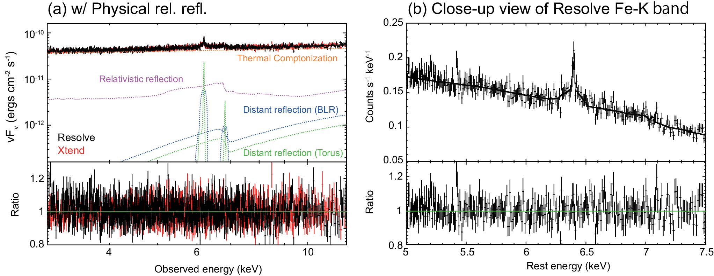
图注：（a）3C120观测者参考系中的XRISM Resolve（黑）和Xtend（红）谱及最佳相对论反射模型。总模型包括主热康普顿连续谱（橙）、相对论展宽反射（品红），以及远处宽线区（BLR，蓝）和尘埃环（绿）的窄中性铁Kα线。（b）铁K区Resolve谱与最佳总模型的放大图，已改正到源静止系，单位为计数每秒每keV而非νFν。两面板下方子图均为数据与模型之比。
怎么看这张图：先看窄线与宽底能否分离，再看残差。内缘是条件模型参数，表1自旋固定；高分辨谱改善反射分解，却不能由此宣称测到高自旋或完整盘冕温度。 核心谱几何证据及窄线混淆检验。
来源与置信度：arXiv HTML；source verified；https://arxiv.org/html/2609.27057v1/fig2_ver4.png
图5
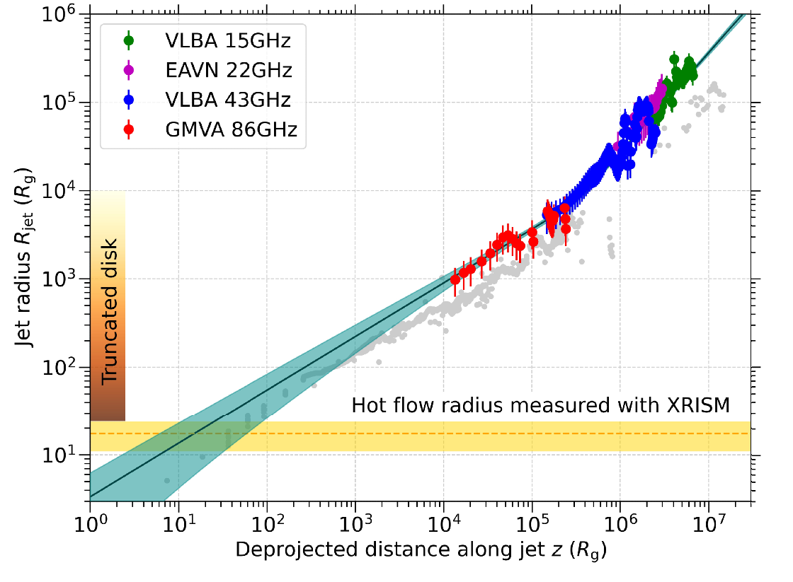
图注：3C120喷流半径随距86GHz射电核心的退投影距离变化，两轴均用引力半径。红、蓝、品红、绿点分别来自GMVA 86GHz、VLBA 43GHz、EAVN 22GHz和VLBA 15GHz图像。黑线为最佳折断幂律轮廓：z0以内Rjet正比于z的0.61±0.07次幂，外侧为1.13±0.04次幂，z0=(3.13±0.77)×10⁵Rg。青带为拟合1σ范围；金色水平带表示XRISM谱推断的热流半径Rin=17.4（上误差6.3、下误差6.5）Rg。灰点为M87喷流作参考，全部误差为1σ。
怎么看这张图：把实际数据点与向小尺度延伸的拟合线分开。约7Rg喷流半径来自外推，非直接成像；视角、核心位移和非同时性均限制该比较。金带对应谱内缘所界定的内侧区域尺度。 连接独立射电几何与X射线盘尺度。
来源与置信度：arXiv HTML；source verified；https://arxiv.org/html/2609.27057v1/fig_collimation.png
图A1
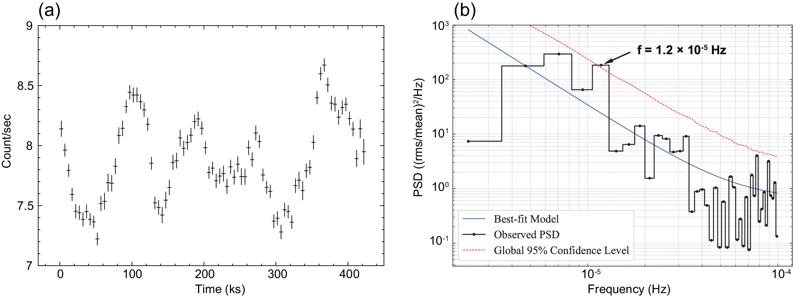
图注：（a）XRISM Xtend在0.5—10keV的光变，展示X射线通量随时间变化。（b）由光变得到的功率谱密度，在约1.2×10⁻⁵Hz出现峰。蓝实线为最佳拟合的红噪声加泊松噪声模型，红虚线为全局95%置信水平。原图注据峰超过阈值，称其相对于采用的红噪声连续背景有统计显著性。
怎么看这张图：正文称边缘结果：仅4—5周期，95%限于指定搜索窗口和噪声模型。不能称确认MAD或磁通喷发；附录B在盘内缘的简单进动频率也低于峰一个数量级以上。 明确辅助时序候选与主谱几何证据的等级差异。
来源与置信度：arXiv HTML；source verified；https://arxiv.org/html/2609.27057v1/fig4_ver2.png
强相关工作
原文[37]Marscher等2002年和[34]Lohfink等2013年提供3C120盘喷流时域及谱结构背景。本文新增微量热计分开窄线与宽底，并与高频射电轮廓比较；没有新增盘截断先于喷流启动的完整时序，因此旧时域与本次几何是互补条件证据。
原文[5]BZ与[45]薄盘理论、[16]和[17]磁通输运构成物理基础，M87提供低吸积率准直对照。无量纲结构可比较，粒子组分、辐射效率及磁通不能移植。附录统计联系[54]Vaughan红噪声框架，不能套白噪声周期图的峰值显著性。
同一事件 / 同类源线索：
相似工作：
（未提供）
基础理论 / 方法工作：
相反观点 / 张力线索：
（未提供）
2. Origin of the high-energy spectral cutoff in gamma-ray pulsar halos
- 来源：arXiv / astro-ph.HE
- 链接：https://arxiv.org/abs/2609.27496
- 作者：Qi-Ling Chen, Ming-Ming Kang, Kun Fang, Hong-Bo Hu, Yi-Qing Guo, Chao-Wen Yang
- 评分：novelty 9/10，importance 9/10，relevance 10/10，final 10.00/10
- 推荐理由：Geminga截止的加速上限与高能扩散逃逸退化直接关系HAWC及LHAASO晕解释，空间孔径和X射线可提供区分。
中文题目：Geminga晕的高能截止：电子加速到顶，还是高能通量逃出了分析区域？
做了什么：脉冲星晕在几十TeV出现谱软化，常被解释为脉冲星风云无法再加速更高能电子。本文提出另一种可能：电子仍可注入到更高能，但扩散系数在约百TeV附近迅速上升，使高能逆康普顿辐射分布得更广，有限区域和固定模板漏计通量，从而产生表观截止。作者分别计算有限上游尺度的球对称扩散激波加速（DSA）及折断幂律扩散传播模型，以HAWC的Geminga谱和径向分布检验这两种解释。
有限尺度模型以0.02pc激波半径和100TeV处约4.95×10²⁶cm²/s扩散系数给出截止，但需要约100的有效压缩比，远非普通标准激波结果。传播模型在当前最低χ²点给出109TeV扩散转折及12.5的高能幂指数，能够呈现谱软化并拟合三能段剖面；然而表3明确注明MCMC尚未收敛，这些数值不能视作已收敛后验测量。核心价值是揭示“观测截止不唯一等于加速上限”的退化，并提出硬X射线与晕群体统计作为区分途径。
为什么重要：从伽马截止反推最大电子能量，是判断脉冲星加速能力和银河宇宙线供给的重要步骤。如果辐射在高能变得更宽，仪器回收的通量就同时依赖传播和模板，单独拟合能谱会把空间选择误认成注入物理。本文把这种退化定量化，但尚未证明实际Geminga一定发生了如此陡的扩散转折；尤其未收敛的链和简化孔径意味着应把结果视为可检验解释，而非已发现新扩散定律。
理论 / 观测 / 仪器方法价值：方法价值在于把加速区与星际传播区的扩散系数分开，前者决定回到激波的能力，后者决定辐射能否留在观测范围；再用谱加径向剖面共同约束传播。对LHAASO、HAWC或IACT延展源研究，值得借鉴的是改变能量相关模板、积分区域和背景处理来检验截止稳定性，同时用对应PWN的同步辐射约束同一电子注入。不同仪器的视场和背景估计不能直接互换。
为什么应该关注：这直接关联Geminga类晕、银河弥散伽马背景和高能电子传播。若高能通量进入大角尺度成分，它既影响源谱，也可能影响所谓弥散超额，但本文没有完成这种银河总体解释。真正值得追踪的是更宽视场的联合形态谱拟合，以及10keV以上PWN谱形：后者不依赖晕孔径，却仍受磁场和电子分布假设限制。不能仅凭拟议仪器覆盖该能段就认定可探测差异。
展开详细解读：文章讲解、背景、理论、重点章节、图表与相关工作
文章详细讲解
科学问题：Geminga风云内的电子离开加速区后，在周围星际介质中扩散，与宇宙微波背景及其他光子逆康普顿散射，形成比风云大得多的伽马晕。观测到高能光子变少，可能是没有更高能电子，也可能是这些电子走得更远，光子落在分析区域之外。作者要区分的是注入上限与传播选择，而不是否认电子有有限最大能量。
作者怎么做：第一支模型用球对称稳态输运求终止激波上的电子相空间分布，包含有限上游、下游边界和球面流动的绝热项，再用自转损失供能历史和辐射冷却演化总电子谱。第二支直接指定电子注入谱到300TeV，求含能损的空间传播，并允许扩散系数在高能折断。由于过快扩散会使普通高斯传播子出现超光速尾部，作者采用Jüttner传播子修正。第二支还把空间分布投影成三个能段的径向计数剖面，与能谱联合比较。
关键结果：DSA有限尺度模型的谱χ²为16.7/4，表3的有效压缩比为99.6；这展示一种截止形成方式，却不是一个普通激波自然给出的优良完整描述。折断传播模型当前最低χ²点的谱贡献为6.7，总χ²/自由度为119.5/87，高能扩散指数12.5，转折能量109TeV；通量泄漏在约10TeV伽马能区开始显著。两套拟合的数据项不同，不能直接把总χ²差当成相同自由度下的模型显著性，且BPL链未收敛，不提供成熟参数误差。
局限和下一步：Geminga实际为弓形激波系统，球对称DSA是有效近似；约100压缩比需要额外硬化机制，而非标准测试粒子激波的直接物理解。传播模型的陡折断是现象学输入，尚未从自激湍流或超新星遗迹环境自洽推导。作者采用12度积分近似HAWC的模板回收，并没有重做其原始事件级分析。后续最有判别力的是联合检验孔径依赖、能量相关形态、硬X射线谱和控制环境因素后的群体标度，而不是将当前最佳曲线升格为确定的扩散测量。
关键结果是怎么做出来的
第一环是明确观测量。原文回顾HAWC以Geminga与Monogem之间为中心、半径8度的区域确定模板，再对每源外推积分至30度。若真实高能形态比模板宽，外推仍会漏计。本文传播计算另用12度积分，意在展示有限回收范围的效应；这三个角度来自不同步骤，不能混称同一个孔径，也不能把12度谱直接当成完整复现HAWC分析。
第二环是获得有限尺度加速谱。上、下游以独立径向网格描述，在激波处保持分布连续并满足DSA通量跳跃；原点零径向粒子通量，外侧自由逃逸。附录A用守恒球面扩散算子与动量网格构成约64万未知量的稀疏系统。与平面一维结果相比，球面发散产生的绝热能损使截止降低；这说明几何不仅影响归一化，也改变谱形。
第三环是把加速谱转成晕辐射。相空间分布先乘以动量相空间因子得到每能量电子注入，功率以当前自转损失及效率归一化，再按342kyr年龄和2.70kyr初始时标连续注入。冷却包含1微高斯星际磁场下的同步辐射，以及CMB、红外和光学背景的逆康普顿。此支计算的是全空间积分电子数谱，不是局部密度，省略空间传播的前提是测量区域已经包含绝大多数通量。
第四环才允许孔径损失。BPL支固定注入指数1和300TeV截止、低能扩散指数1/3，拟合转折扩散系数、转折能量、高能指数和效率。图3显示单幂律与折断扩散的差异：在高能注入仍存在时，有限区域内的谱可以更早软化。约100—200TeV的轻微硬化来自因果传播修正，不能另外解读成一个新粒子成分。
第五环用形态约束防止只靠谱调参。图4比较1—17.8、17.8—31.6和31.6—316TeV剖面。因为公开剖面是单位立体角计数而非绝对光子亮度，作者每个能段允许归一化因子，并采用HAWC文献的Monogem贡献作背景。此处理有助于利用形态，但背景固定和自由归一化也限制其绝对通量校验能力。表3又明确链仍在运行，所以这里仅证明有一组参数能给出这些曲线。
第六环是独立预言。图5只改变按自转损失平方根缩放的激波半径，保持其他加速、能损和注入归一化固定，用来隔离截止标度。图6把两支模型对应的同步辐射各自归一化，指出10keV以上谱形差异。二者都是控制变量的模型比较，不能当作已测得的群体相关或绝对X射线可探测通量。
展开背景、理论、公式、模型和章节导读
背景知识
脉冲星的自转能通过磁化的相对论性风输送出去。风与外部介质相遇后减速，终止激波及相关磁耗散把能量转给电子和正电子，产生脉冲星风云。本文将二者统称电子。随脉冲星运动和系统老化，风云可形成弓形结构，粒子向星际空间逃逸；这使紧致X射线风云与大尺度伽马晕对应同一能量链上的不同位置。
电子同步辐射取决于磁场，而逆康普顿辐射取决于目标光场和电子能量。在较强风云磁场中，高能电子可以产生X射线；在较弱星际磁场中，它们与背景光散射形成TeV伽马辐射。由于高能散射可能进入Klein—Nishina区，电子截止和光子截止之间不是始终适用的固定平方关系。本文用辐射核卷积，而非简单把TeV光子能量当成电子能量。
扩散描述粒子经多次散射后的空间迁移。小扩散系数使电子留在脉冲星附近，形成较亮的晕；大扩散系数使同样总粒子数分布到更大范围，单位立体角亮度降低。局部亮度下降并不必然表示能量消失，可能只是进入低表面亮度、大角尺度成分。背景模板和孔径决定仪器把多少成分归给源。
传统的截止解释着眼于加速时标、冷却时标或粒子回旋尺度超过系统大小。本文强调有限上游尺度，并提出传播系数在高能迅速变化的替代图像。慢扩散可由粒子自激湍流或遗迹环境维持，但高能端为何在特定能量失去约束，仍需等离子体机制。作者关于遗迹高能加速能力的讨论是提出动机，不能把“缺少某类确证”反过来当作所有遗迹存在统一100TeV上限的证明。
基础理论 / 方法脉络
DSA的核心是粒子反复穿越汇聚流，通过散射从流体获得能量。扩散越快，粒子一次往返探索的尺度越大；当探索范围接近整个上游区，局部平面激波和无限上游假设失效。本文球面对称流的方向与发散也重要，因而有限尺度截止不是只在任意幂律后加一个经验指数项，而是从边界和输运求出。
加速区扩散系数与晕区传播系数属于不同介质，不能因为都记作D就混为同一物理量。本文加速区在100TeV处约为10²⁶cm²/s量级，BPL传播转折处为10²⁷cm²/s量级；它们对应不同位置、磁湍流和自由参数。能谱对激波半径与加速扩散归一化主要约束比值，因此固定0.02pc并不是独立测出了这个尺度。
辐射冷却将注入谱映射为随时间累积的电子谱。高能电子冷却快，主要反映近期注入；低能电子更能保留历史。自转损失随时间降低使注入功率不是常数。必须先区分每能量总数与每体积密度，再决定是否需要空间项：全空间积分时边界流量消失可以只算冷却，有限观测区域时逃逸就成为核心，不能重复使用全空间近似。
传播模型还有相对论性因果边界。普通扩散方程是多次散射的近似，数学上在任意距离都有非零尾部；当高能扩散系数陡升时，它可能被用于接近自由传播的区域而产生不合理超光速贡献。Jüttner传播子是作者采用的现象学修正，并非自洽计算湍流散射的替代。这个修正还会留下高能谱形特征，所以模型判别需要同时检查传播近似本身。
公式与推导
以下沿原文输运、辐射及观测约束连接两种截止机制；式号指原文。加速区与传播区分别用下标acc和prop，避免把不同物理区域的扩散系数混用。
第一步以各向同性相空间分布 $f(r,p)$ 描写稳态DSA。原文式(1)为
左边为流体平流，右边依次是球面扩散和压缩/膨胀引起的动量改变。$r$ 为距脉冲星距离、$p$ 为动量、$u$ 为流速。此基线忽略加速过程的辐射损失；球面发散项仍保留，因此“忽略冷却”不等于完全没有能量损失。
激波处令 $u_2=u_1/\sigma$。分布连续且满足原文式(7)的通量跳跃：
$f_s$ 为激波表面分布，导数分别在两侧取值。这个条件把空间迁移与动量增益连起来；原点和外侧还需要边界，才能确定有限系统的谱。
采用式(16)的 $D_{\rm acc}=D_{0,\rm acc}(E/E_0)^{\delta_{\rm acc}}$，扩散长度等于系统尺度时有
$D/u$ 的量纲是长度，括号无量纲，$E_0=100$ TeV。本文取 $\delta_{\rm acc}=1$。这是一维有限尺度的特征估计，三维数值谱还受绝热项影响，不能将其当精确截止位置或忽略 $R_s/D_0$ 退化。
激波分布不是每能量粒子数，需用相空间体积转换。原文式(11)、(12)给出
超相对论近似 $E\simeq pc$ 下得到后一个比例。积分单位是能量每时间，效率 $\eta_{\rm acc}$ 把注入功率和当前自转损失联系起来。相空间谱斜率与粒子数谱斜率相差2，不能直接互抄。
全空间电子总谱 $n_e(E,t)=dN_e/dE$ 的冷却演化来自式(9)、(10)：
$b=-dE/dt>0$，$\tau_c=t_{\rm age}+\tau_0$，所以现在的时间因子为1。这个形式使早期供能更强，并把冷却和注入分开，之后与逆康普顿单电子辐射核卷积得到光子谱。
若要计算有限区域内的电子，必须恢复空间项，原文式(18)为
此时 $n_e$ 是每体积每能量密度，与上一步积分量不同。点源注入位置不是终止激波半径。扩散越强并不直接减少全空间粒子数，却能减少指定角域内的辐射。
原文式(19)、(22)设置传播支的输入：
固定 $\alpha_{\rm inj}=1$、$E_{c,\rm inj}=300$ TeV和 $\delta_1=1/3$，让 $\delta_2$ 与转折位置调节高能泄漏。这里仍保留有限注入上限，论点是观测到的更低截止主要由传播决定，并非假设电子无限加速。
联合拟合对应式(23)—(25)：
$S$ 是谱能量分布，$I$ 是剖面，$A_m$ 是每能段的计数归一化干扰参数，背景含Monogem。谱上限不进入第一项。原文采用 $\ln\mathcal L=-\chi^2/2+C$；该写法并不证明数据项之间的相关和系统误差已被完整建模。
最后从弓形激波压强平衡（式26）连接群体预言：
$\omega$ 是风几何因子，$\rho_0$ 为环境密度，$V_{\rm PSR}$ 为脉冲星速度。比例只在这些量及 $u_1,D_0$ 固定时成立；实际群体的环境散布会削弱或混淆相关，不能把平方根律当无条件普适观测定律。
硬X射线比较的教学标度为
固定同一20微高斯磁场与辐射核时，更高电子注入截止可把同步辐射截止推向高能；这解释图6的方向。系数取决于俯仰角和所定义的特征频率，本文实际采用完整辐射核，未用这个比例单独估计探测能力。
模型拟合 / 应用方法
共同设置固定Geminga距离250pc、年龄342kyr、初始自转时标2.70kyr、当前自转损失3.20×10³⁴erg/s及星际磁场1微高斯。辐射背景分别取CMB 2.725K和0.26eV/cm³、红外20K和0.30eV/cm³、光学4338K和0.23eV/cm³。这些是模型输入，不是此次拟合的新测量；改变它们会改变冷却和谱映射。
DSA支固定激波半径0.02pc、外边界为50倍激波半径、上游流速3.0×10¹⁰cm/s和扩散指数1，拟合压缩比、效率与100TeV扩散系数。以emcee拟合检测到的谱点，上限排除。最低点为压缩比99.6、效率0.03和D0=4.95×10²⁶cm²/s。标准DSA难以直接生成如此硬谱，作者提到终止激波与弓激波汇聚流再加速作为解释；这并非本文已经求解的自洽双激波机制。
BPL支固定注入指数1、注入截止300TeV及低能扩散指数1/3，同时拟合谱和剖面。当前最低点Dbr=1.86×10²⁷cm²/s、Ebr=109TeV、高能指数12.5、效率0.047。表3明文说明MCMC仍在运行且后验未收敛，因此不报告或推造可信区间，也不能把指数12.5理解为具有小误差的测量。谱拟合与剖面额外自由归一化意味着两支χ²统计口径不同。
数值验证方面，附录A给出上游1000、下游600、动量400点的稀疏求解，并比较不同允许的内边界，发现相关能区的谱与截止对这些选择不敏感。附录B把同步冷却算子加回加速方程，在20微高斯下两种归一化激波谱在约300TeV以下接近，支持基线忽略加速区辐射损失的特定参数近似；这不能推广到更强磁场或任意年轻风云。
拟合之外仍需校验观测映射。每能段剖面归一化、固定Monogem背景、12度积分替代完整模板响应，都会影响高能泄漏的量级。建议的下一步是使用同一事件级似然对两支做公平比较，并检查不同区域大小、背景模型和能量相关模板；这些工作尚未在本文完成。当前可接受的结论是存在传播解释的具体例子，不能据此声称排除了加速截止。
重点章节 / 结果段落怎么读
第I节先核对HAWC的8度模板区域和30度外推范围，建立“观测通量依赖形态假设”的问题。随后阅读第III.1节的12度计算孔径，避免把论文演示与仪器实际管线视为同一件事。
第II.1—II.2节连读输运边界、相空间谱转换和冷却。重点区分f、总电子数谱与局部密度，也区分球面绝热项和辐射损失，才能理解为什么三维模型的截止低于平面模型。
第II.3节和表3核对压缩比约100及16.7/4，不要只读“能够解释截止”。这处决定有效模型的物理解释力度，相关双激波硬化应作为可能补充而非已完成计算。
第III.2节结合图3、图4核对联合统计量、干扰归一化及Monogem背景。表3关于未收敛链的说明是解读数值的必要条件，优先于摘要的概括性表述。
第IV节结合图5、图6看控制变量：群体标度固定哪些环境量、同步谱是否各自归一化。最后看附录A、B的边界与冷却诊断，判断数值检查覆盖了哪些近似，又留下哪些问题。
关键图表与解读
图3
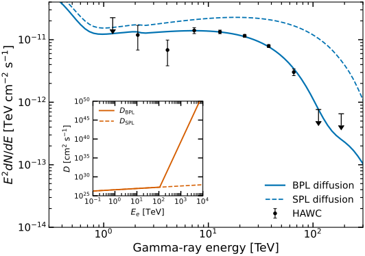
图注：折断幂律（BPL）扩散模型的伽马射线谱能量分布。蓝色实线表示对HAWC的Geminga晕测量所作的最佳拟合；蓝色虚线为单幂律（SPL）扩散系数计算的谱，其谱截止完全由电子注入谱的截止决定。两者比较展示BPL扩散引起的通量泄漏效应，说明BPL模型的谱软化主要由通量泄漏而非注入截止控制。
怎么看这张图：比较同一高注入截止下，改变传播能否使有限孔径的谱提前软化。正文采用12度积分，不能把它等同于HAWC8度ROI及模板外推30度的完整分析。表3明确BPL链尚未收敛，蓝实线是当前最低χ²示例，不是后验已确定的模型。 核心两机制退化的传播解释。
来源与置信度：arXiv HTML；source verified；https://arxiv.org/html/2609.27496v1/fig_broken_diffusion_sed.svg
图4
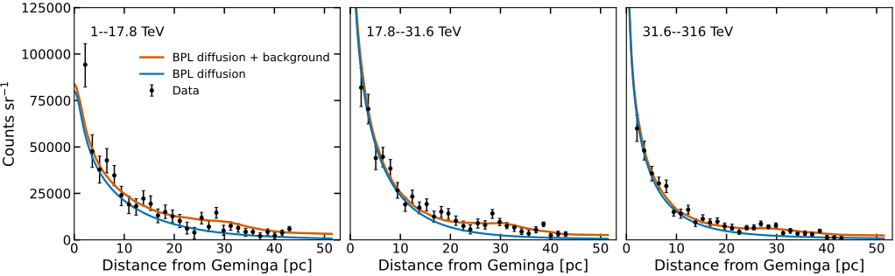
图注：BPL扩散模型对Geminga晕径向伽马射线分布的最佳拟合，三个能段分别为1—17.8、17.8—31.6和31.6—316 TeV。蓝线为BPL扩散分量，橙线还包括Monogem晕贡献的背景。
怎么看这张图：不同能段同时检验传播空间尺度，不能只凭图3能谱成功就认为扩散成立。这里使用的是HAWC单位立体角计数剖面，模型各能段允许额外归一化；橙线与数据的比较含Monogem背景。 谱形之外的形态约束。
来源与置信度：arXiv HTML；source verified；https://arxiv.org/html/2609.27496v1/fig_broken_diffusion_profiles.svg
图6
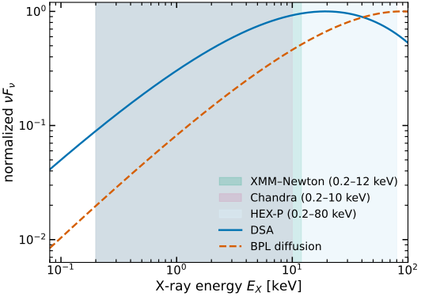
图注：DSA模型与BPL模型预言的同步辐射谱形比较。蓝色实线为DSA模型，橙色虚线为BPL模型。DSA曲线采用表3的最佳拟合参数。两种谱均以对应电子谱和相同单电子同步辐射核计算，取脉冲星风云磁场20微高斯，并各自归一化到自身νFν最大值。阴影表示XMM-Newton（0.2—12 keV）、Chandra（0.2—10 keV）和拟议高能X射线探针HEX-P（0.2—80 keV）的标称能段。
怎么看这张图：关注10keV以上谱形分歧，而非两条归一化曲线的绝对亮度。图中没有给出真实探测灵敏度或曝光需求，能段覆盖不能自动证明HEX-P能区分两个模型。 连接电子注入上限与独立硬X射线检验。
来源与置信度：arXiv HTML；source verified；https://arxiv.org/html/2609.27496v1/fig_xray_comparison.svg
强相关工作
同源观测基准是Albert等2024年的HAWC Geminga与Monogem精确测量（参考文献[5]，doi:10.3847/1538-4357/ad738e）；本文使用其谱和剖面，并不是新的HAWC曝光分析。与早期HAWC慢扩散发现以及LHAASO对PSR J0622+3749等晕候选的工作相比，新增重点是把观测截止分解为加速边界与能量相关泄漏两种解释，而不是新增一例晕探测。跨源推广必须控制距离、环境和仪器背景处理。
方法上，参考文献[24]的Geminga多波段DSA与传播检验提供平面有限尺度比较，[32]的恒星团风终止激波框架提供球面输运结构；本文把它适配到PWN并讨论有限上游。传播因果修正关联[6]与[30]，自激湍流则关联[16]与[33]。这些联系说明模型组件有既有基础，但“高能D突然陡升到当前拟合值”并未由这些引用自动证明，仍需从具体环境的湍流能谱与粒子反馈推导。
同一事件 / 同类源线索：
相似工作：
基础理论 / 方法工作：
相反观点 / 张力线索：
（未提供）
3. Gamma-ray emission toward supergiant shells in the Large Magellanic Cloud
- 来源：arXiv / astro-ph.HE
- 链接：https://arxiv.org/abs/2609.28164
- 作者：Qixin Yu, Olaf Reimer, Anita Reimer
- 评分：novelty 9/10，importance 9/10，relevance 10/10，final 10.00/10
- 推荐理由：15年LAT对LMC七超巨壳形态谱分析及能量密度增强，直接检验集体激波加速和弥散背景建模。
中文题目：大麦哲伦云超巨壳中的伽马辐射：宇宙线增强与空间模板的解释边界
做了什么：大麦哲伦云的伽马图像同时叠加了点源、星系盘弥散辐射和恒星反馈形成的巨大空腔。作者用2008年8月至2024年4月约188个月的Fermi大面积望远镜（LAT）数据，先在10—300 GeV、角分辨率较好的能段拟合超巨壳内部结构，再把空间模板固定后扩展至300 MeV—300 GeV。五个高能显著区域使用多超新星激波启发的非高斯模板，较弱区域用高斯模板；全波段拟合中七个光学识别超巨壳区域达到作者采用的检测门槛。
在所选模板下，超巨壳贡献约41%的1—300 GeV总弥散能流，亮区推得的宇宙线质子能量密度约为星系盘的3—10倍。SGS4的宽带模型以强子辐射为主，但并非所有壳都如此：SGS5和SGS8高能端可由逆康普顿分量主导。这里得到的是辐射分解和物理解释的条件证据，还没有唯一识别每个加速器；未分辨源群、气体模板和传播几何仍可影响结论。
为什么重要：以往常把LMC的局部亮区用高斯轮廓描述，知道哪里亮，却较难把亮度连接到恒星反馈的集体作用。本文尝试把多次超新星冲击、粒子约束与空间轮廓联系起来，并在同一数据集中比较局部区域与星系盘的宇宙线环境。它最可靠的推进是明确显示不同尺度成分不能用单一均匀宇宙线海概括；“多激波加速已被证明”和“七个壳都是强子加速器”则超出了现有证据。
理论 / 观测 / 仪器方法价值：方法上可借鉴先用高能光子确定形态，再在宽能段联合拟合点源、局部扩展源和弥散背景的流程。高能形态约束减轻低能宽点扩散函数造成的混淆，代价是向低能外推时预设形态不随能量改变。作者还移除气体示踪图中的极亮恒星形成区，并用遮蔽壳区的替代模板检查成分串扰；这比只给最终谱线更能说明推断依赖什么，但不能消除所有背景系统误差。
为什么应该关注：对切伦科夫望远镜研究者，关键是区分半度尺度的SGS辐射与约0.04度的R136等紧致TeV源：两者空间重叠不等于同一辐射分量。本文的硬GeV谱可用于设计CTAO南站的扩展源检验，但需要把真实空间模板、气体和电子辐射共同折叠仪器响应，不能直接把积分GeV谱延伸成已获验证的TeV通量。LMC位于南天，也不应机械写成LACT的直接观测目标。
展开详细解读：文章讲解、背景、理论、重点章节、图表与相关工作
文章详细讲解
科学问题。 大质量恒星的风与连续超新星爆发能形成数百pc至kpc级超巨壳：气体被扫到外围，内部留下热、稀薄且受扰动的介质。若激波反复加速粒子且壳壁抑制逃逸，内部宇宙线可能高于普通星系盘。伽马亮区是否真与这些结构相关、贡献多大、亮度来自质子碰撞还是电子散射，就是本文要回答的三层问题。检测到光子仅回答第一层的一部分，后两层还需空间与辐射建模。
作者怎么做。 作者以光学Hα识别的九个超巨壳为位置先验，在高能数据里寻找内部非均匀分布，采用中心多激波区加外围扩散尾部的轮廓。随后把这些空间参数带入全能段，与电离气体、尘埃示踪的盘区模板以及目录点源同时拟合。最后对SGS4和盘区等能谱用Naima计算中性π衰变、逆康普顿与轫致辐射，并用射电同步辐射作额外参照。采用这种分层方法，是为了先减少源间串扰，再解释各自的粒子分布。
关键结果。 表3的超巨壳显著成分合计能流约为$4.48\times10^{-11}\,\mathrm{erg\,cm^{-2}\,s^{-1}}$，盘区为$6.38\times10^{-11}$，两者相除和相对总和的比例分别约70%和41%。七个检测区域并非七个“内部”同时显著：SGS7主要是壳层而内部不显著。SGS4内部的混合辐射模型给出强子约76%、逆康普顿约23%、轫致约1%，在固定环境条件下能较好描述数据；其质子谱指数约2.22，比盘区约2.40硬，但误差重叠，不能只由中心值认定统计显著差别。
局限和下一步。 非高斯模板胜过简单高斯并不唯一证明多激波机制，因为紧凑未分辨源群也可产生非高斯亮区。部分拟合尺度接近LAT分辨极限，壳厚固定为内部半径的20%，扩散系数又依赖假定年龄、倾角和模板定义。盘区辐射拟合的$\chi^2/\mathrm{dof}=41.82/10$明显差于SGS4的17.27/11，说明其物理分解仍需改进。下一步应检查能量依赖形态、替代气体模板及TeV空间分辨测量，并保留对源群解释的比较。
关键结果是怎么做出来的
证据链从数据选择开始。188个月的SOURCE级前后转换事件提供统计量，天顶角小于100度降低地球边缘污染；0.1度空间格点和18个对数能箱定义分析分辨。背景包括银河弥散、各向同性成分和ROI周围目录源，LMC内部原有目录成分先移出，以免与新模板重复计算。这说明本工作并非在空白天空上叠加一个新源，而是重新分配已有区域的辐射成分。
第二步是用10 GeV以上光子建立形态。该能段LAT的68%包含半径约0.2度，盘区低能弥散也较弱。SGS4中心位置先取高能峰值，再优化位置和内部尺度；最佳$R\simeq112$ pc、外围有效尺度约163 pc。相反，SGS2、3内部尺度约255、275 pc而扩散尾较短。作者把这些差异解释为激波布局或粒子约束差异，但原文将更详细的物理解释留待后续，当前不宜把每个参数当作独立测到的扩散常数。
第三步处理低能盘区。Hα亮度大致依赖电离气体密度平方，作者用其平方根作气体示踪，并加160微米尘埃模板。30 Doradus和N11的强峰若直接带入会吸收点源通量，因此从基准大尺度模板中去除。把SGS区在Hα模板中遮蔽后重拟合，结果在1σ内一致，是一个实际做过的串扰检查；这只覆盖一种模板变化，不能等同于完整的弥散背景误差预算。
第四步比较形态假设并检查残差。表2中模型2的对数似然为87555.0；两个高斯替代模型为87459.3和87423.4，而前者多十个拟合自由度。这些模型含不同形态，并非简单可套单参数卡方定理的嵌套检验，因而不能把似然改进平方根直接报成机制发现显著性。残差中又加入PS1、PS2两个点源，重拟合后的残差图最大TS为23.66；发现并处理遗漏点源，是提取扩展谱前不可省略的步骤。
第五步才解释能流与粒子。表3区分全波段检测TS、1—300 GeV积分能流以及单箱95%上限，不能混用它们的统计意义。SGS4宽带拟合允许电子和质子的总能量、谱指数四个参数自由，电子指数下限由射电结果约束。得到的质子总能量为$(6.72\pm3.87)\times10^{52}$ erg，电子为$(6.92\pm2.94)\times10^{51}$ erg；这些数值依赖固定气体密度、磁场和积分能界。图7的相容性支持一种可行解释，而未证明所有替代机制均已排除。
展开背景、理论、公式、模型和章节导读
背景知识
超巨壳与普通超新星遗迹不是同一尺寸的对象。一个超新星遗迹由单次爆炸演化，超巨壳则记录恒星群长期反馈，形成所需机械能可达$10^{53}$ erg以上。超巨壳的光学名称通常指外围气体结构，伽马辐射却可能来自内部粒子、边缘稠密气体或嵌在其中的独立源，所以“朝向壳检测到辐射”不自动意味着壳壁在发光。
LMC距离约50 kpc且倾角较低，便于把角结构换算为物理尺寸，也减少像银河盘那样严重的视线重叠。代价是数十pc尺度仍不易分辨，投影上相邻的超新星遗迹、脉冲星风云和恒星形成区可能共用一个LAT像素响应。H.E.S.S.已发现的30 Dor C、N157B和R136提供重要先验，但它们较小的角尺寸使其不能不经建模就替代整个GeV亮区。
宇宙线通常不可在遥远星系直接取样，只能由其与环境作用产生的光子反推。质子与气体碰撞产生中性π并衰变成伽马光子；电子可对低能背景光子作逆康普顿散射，也可通过轫致辐射发出伽马光子。因此同样亮的伽马区既可能粒子密度高，也可能靶气体或辐射场多，亮度必须与环境地图一起解释。
恒星形成与伽马相关也含时间尺度问题。很年轻的星团有强光学和红外辐射，却未必已经经历足够超新星以建立对应宇宙线库；较老区域可能已累积粒子但光学示踪变弱。本文删去两个极亮恒星形成峰，正是为了避免把一张瞬时环境图直接当成普适宇宙线分布。它改善现象学分解，同时提醒读者空间相关不等于单向因果。
基础理论 / 方法脉络
多激波加速的物理图像是粒子反复穿越速度不同的散射中心而增能。一个壳内若持续有新超新星补充激波，就可能形成近似稳态加速区；而下游较强散射把粒子困在局部气流中。本文借用已有理论的空间形状，并没有直接求解完整时间依赖磁流体与粒子输运。因此中心轮廓是带物理动机的拟合模板，不能把模板胜出当成对其所有微观假设的测量。
内部轮廓以$\sin(kr)/r$描述，中心极限有限，外围连接扩散型指数尾。内部半径$R$控制亮区主体宽度，$\sqrt{4\kappa t}$控制逃逸尾的尺度；角分辨率不足时两者可互相补偿。本文把扩散系数视为空间均匀且不依赖动量，并假定激波总体稳态，这省去了能量依赖形态，却也限制了从固定模板外推到宽能带的物理解释。
观测空间轮廓需要经过曝光与点扩散函数处理，而不是直接和光子计数相比。统计模型中不同成分的归一化彼此竞争，尤其低能点扩散函数变宽，点源、壳和盘模板更容易串扰。高能确定形态的策略降低这类退化，但冻结形态也意味着后续能谱误差未必包含全部形态不确定性；这在弱区或分辨极限附近尤其需要记住。
辐射计算把粒子谱映射到光子谱。强子通量主要约束气体密度与质子能量的乘积；电子逆康普顿依赖辐射场，同步辐射依赖磁场。射电信息因而有助于限制电子，但本文SGS4射电点只是图像均值的粗估，并非与伽马完全同口径的高精度谱。环境输入不是免费信息：如果密度升高，同样伽马亮度所需质子总能量就下降。
公式与推导
以下把原文方程与必要的教学连接分开。先由原文式(1)写出内部空间模板，$r,R$是长度、$p$是粒子动量，$f(p)$描述动量分布：
最后一个极限是教学检验，说明中心不是发散点源；改变$R$改变平顶核心尺度，这才是用图像检验该模型的出发点。
原文式(2)把外部写作扩散尾：
$\kappa$单位为$\mathrm{cm^2\,s^{-1}}$，$L$为面积，故$\sqrt L$才是长度。$A$在边界保证空间因子连续。原文3.3节称施加边界后指数可化为仅含$-r^2/(4\kappa t)$；单凭连续条件不能消去$R$带来的交叉项，因此这里保留原始表达式，不把该化简当作已成立的代数推导。要从图像反演真实扩散率，还需作者实际模板实现和投影定义。
作教学数量级核对，可由拟合尺度倒推：
这复现原文SGS4估计的数量级。15 kyr是示例年龄，不是本次新测年，倾角也尚需校正；因而不是无条件精确测量，更不能由它推断所有超巨壳都有同一扩散系数。
连接到观测的教学形式为计数模型与泊松似然：
$\mathcal R_i$包括曝光、能量响应与点扩散函数，$T_j$和$\phi_j$分别为空间与谱模型，$n_i$为观测计数。TS定义与原文一致；其零假设分布还受参数边界、位置优化与模型关系影响，不能普遍令发现显著性等于$\sqrt{TS}$。
原文式(3)、(4)分别用于局部幂律与盘区对数抛物线：
$N_0$为参考能量处微分通量，$\beta$描述曲率。积分后得到能流而非光子数流：
统一能量单位后$F_E$单位为$\mathrm{erg\,cm^{-2}\,s^{-1}}$，$d=50$ kpc。这个教学比例核验说明41%是两类弥散成分之间的份额，不含所有独立点源，也不是40%的超新星能量转为伽马光子。
原文式(5)通过碰撞功率估计宇宙线质子能量密度：
$N_HS$是靶氢原子总数的估计，$\sigma_{pp}\simeq30$ mb、$\kappa_\pi\simeq0.45$和$\eta_N\simeq1.5$为所用碰撞与重核因子。分母单位为体积每时间，故结果是能量密度。该式要求强子归因与气体口径成立；含电子分量的总能流直接代入会给条件化估计，尤其不适于把电子占优的区域也解释成高质子密度。
最后由原文式(6)定义带截止粒子谱，再经辐射核得到可拟合谱，后一关系是教学表达：
$a$区分电子、质子，$P_a$含碰撞或散射环境与辐射概率；$W_a$仅在指定积分上下限下有意义。SGS4最佳解采用无指数截止的幂律，盘区采用截止幂律，不能把积分上限1 PeV说成已观测到的质子加速上限。
模型拟合 / 应用方法
实际拟合分为三个层次：先以10—300 GeV形态确定$R,L$和中心位置，再冻结空间参数提取300 MeV—300 GeV能谱，最后对能谱点做粒子辐射拟合。SGS4高能空间与谱四参数的MCMC结果在图3给出，最佳值和采样均值相近；这支持数值解的局部稳定，却未提供在所有模板选择下的完整后验。部分$R$接近点扩散函数尺度，应视为受分辨率限制的估计。
宽带空间拟合的自由参数来自背景、点源与多个扩展成分。模型2相对高斯模板的似然改进很大，但其参数更多，不能忽略复杂度与非嵌套性。作者对目标附近3度内源的谱参数释放并重拟合，且对残差中新出现的PS1、PS2补源；这两步减少把未建模源硬分给SGS的风险。尚未看到覆盖所有银河弥散模板和能量依赖形态的系统扫描，不能替作者声称做过。
SGS4粒子拟合固定氢密度约0.19每立方厘米、磁场10微高斯，并给电子谱指数施加约2.6下限。质子能量积分范围为1 GeV—1 PeV，电子为100 MeV—约43 TeV；四个自由参数是两类总能量与谱指数。固定密度来自氢柱密度除以取作上限的视线深度，所以低密度假设会推高所需质子能量。数值参数误差主要反映给定环境下的拟合误差，不能充当环境系统误差。
盘区的截止能约为电子400 GeV、质子800 GeV，但其拟合卡方为41.82/10，因此中心值不应被包装为成熟的粒子截止测量。原文称总辐射场能量密度0.57 eV每立方厘米，同时列出的CMB、红外、光学分量约0.25、0.12、0.32，相加为0.69；这是输入说明的不一致，复现时需核对代码而不能私自选择一个数。去掉或加入30 Dor与N11也会把强子份额从76%变到90%，清楚展示模板口径对辐射解释的影响。
重点章节 / 结果段落怎么读
- 先读第2节和图1：分清完整计数图、高能计数图、扣背景残差图；确认不是把不同能段的形态差别直接当成物理变化。
- 接着读3.2—3.4节、式(1)(2)和表1：跟踪内部尺度、外围扩散尺度、壳半径三个不同量，并检查SGS4的边界化简问题，避免把模板参数直接叫作测量扩散率。
- 第4节和表2回答模型竞争：为什么去掉30 Dor和N11峰，非高斯模板多了哪些自由度，哪些替代模板实际被检验过。
- 第5节表3、图7—8回答成分和机制：先核验41%的分母，再比较SGS4与盘区的卡方和环境输入；检测显著性不等于强子归因置信度。
- 最后读第6节和附录F：SGS5、8的电子占优解释与未分辨源群替代方案，是主结果的边界而非可以省略的例外。
关键图表与解读
图3
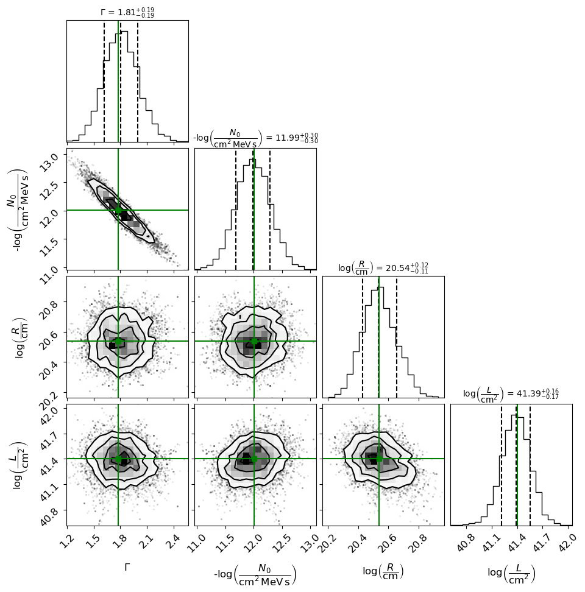
图注：SGS4内部10—300 GeV Fermi-LAT数据的马尔可夫链蒙特卡罗（MCMC）拟合角图。黑色虚线标出各拟合参数的1σ置信区间；绿色点和线表示由最大TS值得到的最佳拟合解。
怎么看这张图：先看R与扩散尺度、谱归一化之间的相关性，再比较绿线和采样主体。R约112 pc已接近LAT的分辨尺度，最佳解集中不意味着已独立测得扩散率；年龄与倾角仍是假设。 连接实际参数推断与形态模型的分辨边界。
来源与置信度：arXiv HTML；source verified；https://arxiv.org/html/2609.28164v1/figures/lmc4_mcmc.png
图6
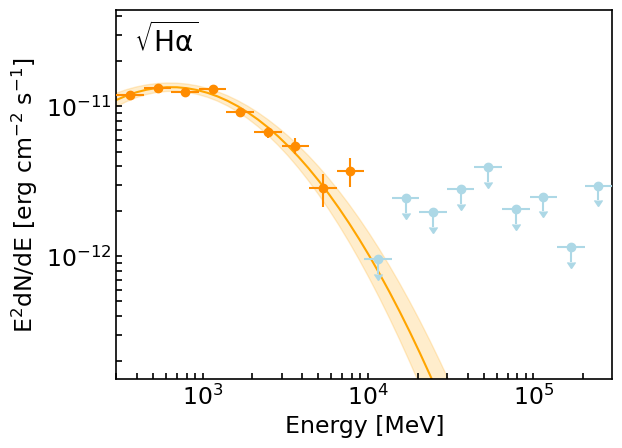
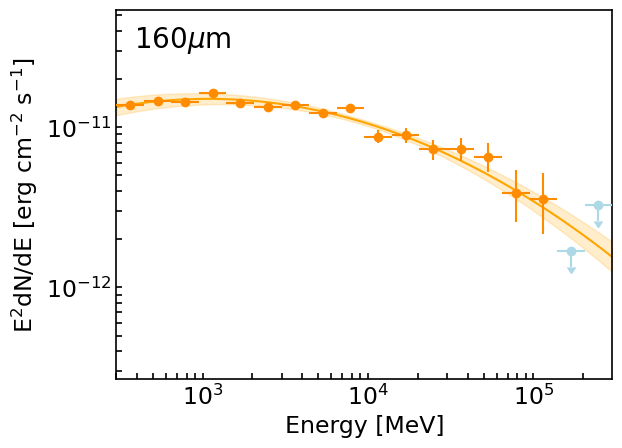
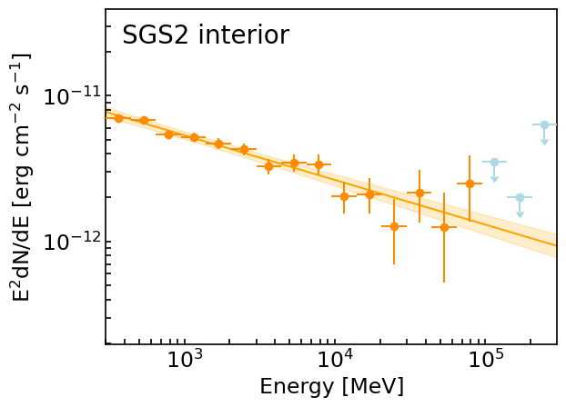
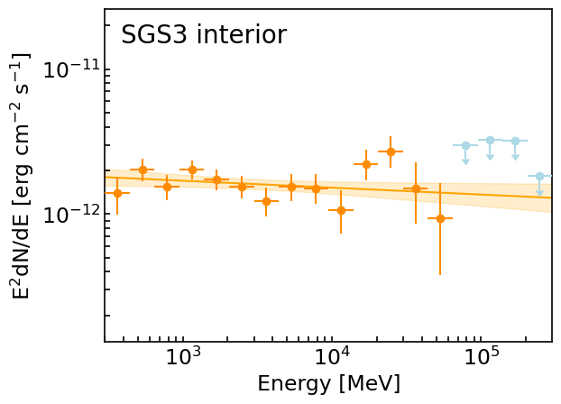
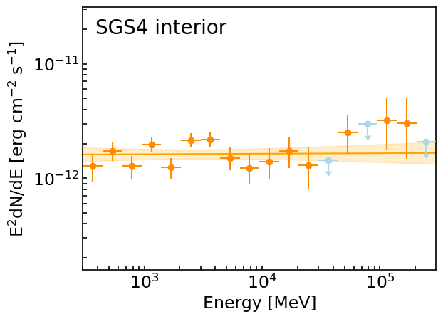
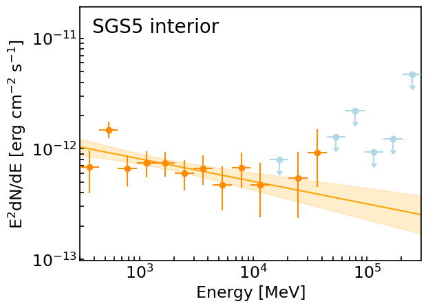
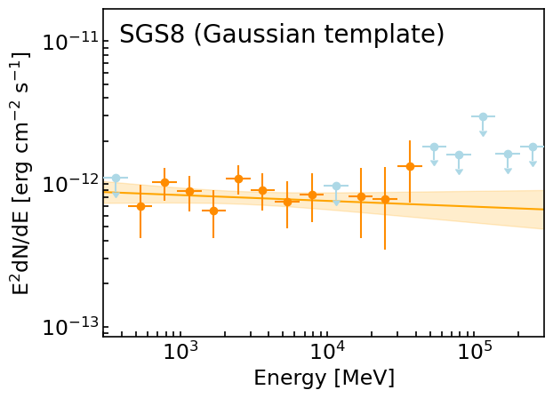
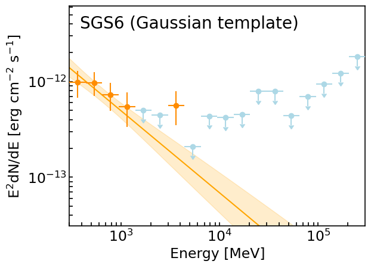
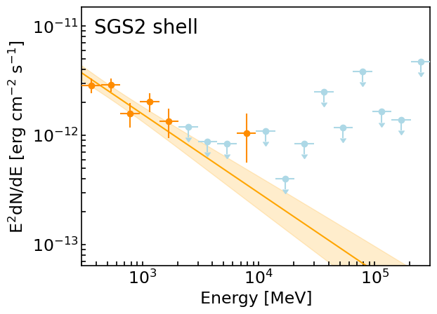
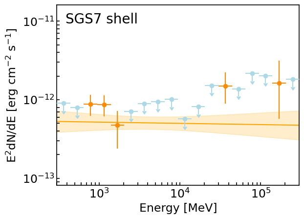
图注：由Hα平方根、160微米模板及显著检测的超巨壳（内部或壳层）得到的谱。谱点由各能箱分别拟合得到，并叠加全能带分箱最大似然分析的最佳谱模型。橙色误差棒表示谱点的1σ通量不确定度；实线及阴影分别表示最佳谱模型及其1σ不确定度；浅蓝色上限标记对应95%置信水平。
怎么看这张图：逐面板核对源名，特别分开SGS7壳与内部。浅蓝上限不能作为对称测量点参加直观趋势判断；检测七个区域不等于每个区域的每个能箱或内部成分都显著。 呈现成分分解的测量与上限。
来源与置信度：arXiv HTML；source verified；https://arxiv.org/html/2609.28164v1/figures/sqrtHa.png；https://arxiv.org/html/2609.28164v1/figures/isrf1.png；https://arxiv.org/html/2609.28164v1/figures/LMC2_inner.png；https://arxiv.org/html/2609.28164v1/figures/LMC3_inner.png；https://arxiv.org/html/2609.28164v1/figures/LMC4_inner.png；https://arxiv.org/html/2609.28164v1/figures/LMC5_inner.png；https://arxiv.org/html/2609.28164v1/figures/LMC8.png；https://arxiv.org/html/2609.28164v1/figures/LMC6.png；https://arxiv.org/html/2609.28164v1/figures/LMC2_shell.png；https://arxiv.org/html/2609.28164v1/figures/LMC7_shell.png
图7
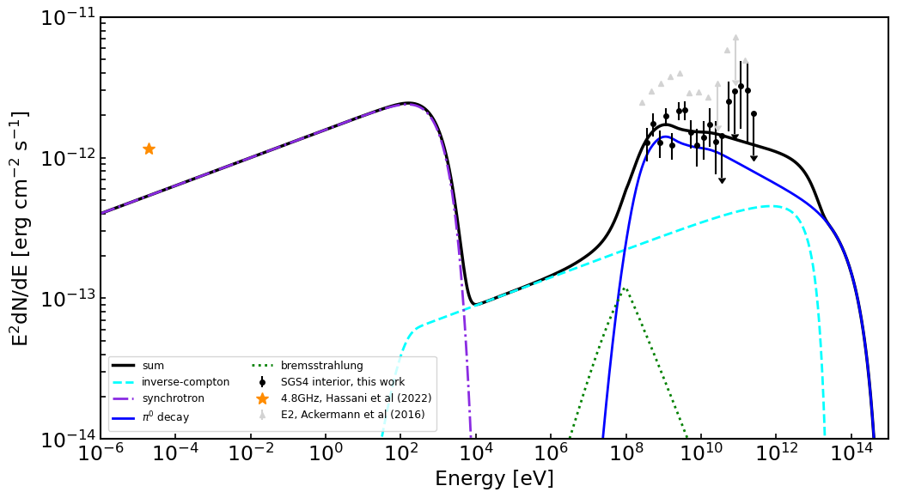
图注：用SGS4内部辐射模型得到的轻子和强子宽带谱能量分布。黑色实线表示最佳拟合总谱，各辐射分量另行绘出。黑色标记为本文分析的Fermi-LAT数据，与图6相同。浅灰色三角形为Ackermann等（2016）得到的E2成分，其区域与SGS4部分重叠，供比较。橙色星号表示依据Hassani等（2022）粗估的SGS4在4.8 GHz的平均射电同步辐射。
怎么看这张图：黑色总谱是强子、逆康普顿和轫致分量之和；76%的强子份额取决于固定气体密度和电子约束。浅灰旧结果覆盖面积更大，不能以通量差异推断年际变光；橙色射电点也只是粗略口径估计。 核心强子解释与跨波段约束。
来源与置信度：arXiv HTML；source verified；https://arxiv.org/html/2609.28164v1/figures/radiation_lmc4_v10.png
图8
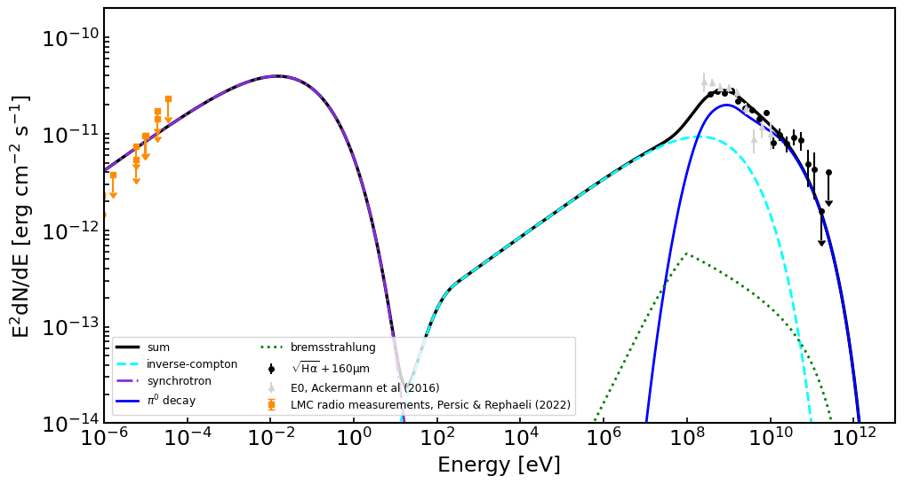
图注：与图7相同的宽带辐射谱比较，但对象为Hα平方根与160微米模板合成的大尺度成分。黑色实线为最佳拟合总谱。浅灰色三角形及误差棒表示Ackermann等（2016）得到的大尺度盘成分E0。橙色标记为LMC射电测量所提供的上限；汇总射电数据及其文献见Persic与Rephaeli（2022）。
怎么看这张图：对照图7观察盘区谱弯曲与分量差别。原文卡方41.82/10提示拟合不足，不能只因曲线存在就接受截止能和分量百分比；射电数据在这里是上限，与图7粗估点口径不同。 展示盘区解释较弱及模板系统依赖。
来源与置信度：arXiv HTML；source verified；https://arxiv.org/html/2609.28164v1/figures/lmcradiation_SEDs3_v10.png
强相关工作
同源对照是文献表中的Ackermann等2016年A&A 586 A71：其73个月LAT分析以E0及E1—E4成分描述LMC；本文用更长数据和SGS物理动机模板重新分解。两者部分孔径不相同，例如旧E2高斯覆盖面积大于本文SGS4内部，所以通量差别不能直接解释成源长期变暗。Foreman等2015年ApJ 808,44是气体与辐射场示踪、全LMC强子和电子解释的基础；本文把局部区域拆出后，成分百分比不再与整星系统计一一对应。
机制基础来自文献表中的Berezhko与Krymskiĭ 1988、Bykov与Toptygin 2001及Kafexhiu等2014：前两类工作提供多激波加速和空间分布动机，后者提供强子伽马辐射参数化。H.E.S.S.的2015年LMC探测及Aharonian等2024年ApJ 970 L21则提供30 Dor C、N157B、R136的TeV观测参照；比较时必须保留角尺寸和源分量，不能把这些紧致源全算成SGS弥散验证。以上关系均据本文引文与讨论核对，链接指向保存原文中的参考文献入口。
同一事件 / 同类源线索：
相似工作：
- https://arxiv.org/html/2609.28164#bib.bib7
- https://arxiv.org/html/2609.28164#bib.bib8
- https://arxiv.org/html/2609.28164#bib.bib31
- https://arxiv.org/html/2609.28164#bib.bib44
基础理论 / 方法工作：
（未提供）
相反观点 / 张力线索：
（未提供）
4. Radio component of the multi-messenger emission from the anticipated T Coronae Borealis outburst
- 来源：arXiv / astro-ph.HE
- 链接：https://arxiv.org/abs/2609.28191
- 作者：O. Petruk, T. Kuzyo, S. Orlando, L. Chomiuk, F. Bocchino, M. Miceli, V. Beshley
- 评分：novelty 9/10，importance 9/10，relevance 9/10，final 10.00/10
- 推荐理由：T CrB三维激波加射电转移预言提供爆发监测策略，并清楚区分固有同步辐射与吸收后可见通量。
中文题目：T CrB预期爆发的射电图像：吸收如何改写激波与多信使信号
做了什么：本文为北冕座T星（T CrB）未来新星爆发计算射电预报，而非报告一次新爆发探测。作者在已有三维流体模拟上叠加前向激波粒子加速、规定的磁场放大和逐视线辐射转移，比较红巨星风、赤道密度增强结构与吸积盘的不同组合。计算同时包括热自由—自由辐射、非热同步辐射、吸收以及等离子体折射导致的Razin抑制，采用890 pc距离、55度倾角及固定示例轨道相位。
模型预言1 GHz光变约在爆发后2—5天达峰，数周后逐渐透明；早期低频正谱指数不必表示热辐射，也可来自被吸收的同步辐射。射电主要显露前向激波的近侧低吸收区域，部分环可能看起来像喷流。多频成像与X射线、伽马数据联合，因而有望区分粒子、磁场和环境的贡献；绝对亮度及PeV粒子讨论仍依赖采用的加速和输运处方，不构成已确认的观测事实。
为什么重要：射电非热辐射通常被当作激波加速电子的直接证据，但“看见哪部分激波”同样受周围物质控制。本文展示三维吸收不仅降低通量，还能改变热与非热分量的相对可见度、制造形态不对称，并使观测峰值晚于本征最亮时刻。这让多波段之间不同峰时和图像结构有了可计算的环境解释，避免把所有差别都归为发动机变化或不同喷流。
理论 / 观测 / 仪器方法价值：最可复用的方法是逐网格计算发射，再沿每条视线累积光深，而非用一个全源平均吸收因子。自由—自由吸收取决于密度平方、温度和频率，Razin抑制取决于电子密度与磁场之比，两者多频演化携带互补信息。要应用该方法，必须有几何、温度、电离与磁场假设，并以观测检验它们；仅拟合一条射电光变不能独立确定电子加速效率和磁场强度。
为什么应该关注：对高能伽马和中微子观测，射电提供前向激波与环双星介质的独立约束，可帮助判断高能光子何时来自喷出物、何时来自激波扫过的环境。本文与前两篇X射线和高能预报共用流体模型，便于联合检验，却不是三个独立证据支持同一结论。值得关注的是同步的多频射电谱与成像怎样缩小气体、磁场和电子归一化退化，再据此更新真实仪器响应下的高能预测。
展开详细解读：文章讲解、背景、理论、重点章节、图表与相关工作
文章详细讲解
科学问题。 共生再发新星由白矮星吸积红巨星供给的物质，表面热核失控后喷出物撞击稠密环境并产生激波。T CrB距离近，未来爆发可用于检验激波加速和复杂双星环境。但射电亮度既取决于高能电子和磁场，也受前方电离气体吸收；要从未来图像和光变恢复物理结构，必须先回答哪些层可见，以及看见的形态是否代表真实动力学。
作者怎么做。 四个三维纯流体模型改变爆炸能量、赤道增强密度与是否有吸积盘，基准为RUN04。作者给激波表面各单元计算粒子谱，并以固定10%加速效率、电子质子归一化比0.01和谱指数2构造非热辐射；磁场由Bell不稳定性饱和值及下游磁通演化给定。热辐射由密度和温度计算，随后加入吸收与Razin抑制，积分得到图像、光变和谱。这是物理前向预报，不是对爆发数据进行参数后验拟合。
关键结果。 热辐射来自较深的稠密层，同步辐射更靠近外层激波，前者因此更易被遮蔽。基准模型在第一周1 GHz的Razin抑制约再降低通量三倍，但主要遮蔽仍来自自由—自由吸收。高频较早透出内部结构，5 GHz约从首日后半段至第5天可见显著吸积盘贡献，45 GHz更早显露；一周后受冲击的环双星介质逐渐占优。早期局部亮环可呈双极或条状外观，因此形态本身不足以证明喷流。
局限和下一步。 流体模拟没有磁场和宇宙线动力学反馈，电子在下游快速扩散的假设与激波处Bohm扩散处方分开设置，绝对射电通量不唯一。作者仅计算总强度Stokes I，关于最初几天短暂偏振的说法是条件建议，尚非完整偏振转移预报。最初数小时未受冲击吸积盘的吸收被忽略，若有快速观测必须重算。未来应同时拟合多频谱转折、图像随频率和时间的变化，以及X射线环境约束，检验这些假设。
关键结果是怎么做出来的
首先辨认四个模型。RUN04爆炸能为$3\times10^{43}$ erg、赤道增强峰密度为$10^6\,\mathrm{cm^{-3}}$；RUN03保持能量而把该密度提高100倍，RUN10用$10^{44}$ erg和$10^7\,\mathrm{cm^{-3}}$，RUN14类似RUN04但去掉吸积盘。各模型平均激波半径接近，说明单靠膨胀大小不容易区分环境；局部密度、磁场及可见面积则可使射电表现差别很大。
其次检查爆发前标定。作者在2.56 AU边长盒子中计算约$10^4$ K介质的热射电辐射；有盘时超过99%的未吸收辐射来自盘，却几乎被盘自身遮住。各模型45 GHz最终通量约0.03—0.3 mJy，与引用的静态观测数量级相符。无盘模型的本征亮度可小很多，吸收后却相近，直接展示仅凭静态通量不能唯一判断吸积盘存在。
第三步比较图4—6的本征与观测光变。未吸收辐射很早就强且衰减，吸收后光变却先上升、数日达峰，再随本征辐射下降。这个峰值不代表恰在该时刻才开始加速，而是可见度与本征衰减的竞争。基准模型到约一个月才在1 GHz近似透明；低频峰更晚，高频更早，这些相对时序比某一固定绝对通量更直接反映光深演化。
第四步用图7—10定位不同成分。热射电主要在深层，同步辐射在薄的前向激波层，近侧低光深区优先可见；吸积盘物质扫入激波后形成亮环，遮住部分环即可产生类似喷流的形态。X射线和伽马图在模拟中突出不同内部区域，说明跨波段必须比较各自发射权重。图像中的西北、东南方向由人为相位选择确定，不是作者预测的真实天空位置角。
第五步用图11—13检查谱与机制。基准模型谱指数从正值逐步趋向假定电子指数2对应的$-0.5$；因此正谱指数与热辐射不是一一对应。高密度RUN03可长时间接近零谱指数，并在约百天后更受热分量影响，这限制了“第一年完全非热”的概括。Razin效应改变低频转折，但多区叠加后全源谱不再是单一指数截止，不能用单区截止式无条件反演一个全源密度。
展开背景、理论、公式、模型和章节导读
背景知识
新星不是白矮星被完全摧毁的超新星。白矮星表面积累氢后发生热核失控，喷出的少量物质与外部环境发生相互作用，再发新星可经历多次这样的过程。共生系统有红巨星风，环境比主序伴星新星更稠密，激波因此可能产生可观测的X射线、射电和伽马辐射。T CrB的新预报应被理解为针对下一次事件的模型，不能由论文措辞推断今天已经爆发或确定爆发日期。
双星轨道可把风塑造成赤道密度增强区，白矮星附近还有吸积盘。激波从白矮星出发，向不同方向遇到不同密度，速度与后方温度也不同。一维球壳模型能解释平均扩张，却不能可靠判断哪片发射面被遮挡；这正是本文采用三维网格的动机。平均半径近似相同，并不意味着可见射电图相同。
热自由—自由辐射是热电子在离子库仑场中偏转发光，同步辐射来自相对论电子在磁场中转向。两者不只是谱形不同，其空间来源也不同：热辐射偏重密度高的深层，同步辐射偏重电子与较强磁场共存的冲击层。吸收介质可以作用于任何来源的射电光子，因此一种辐射过程的名字并不限制它只能吸收同类光子。
低频等离子体折射还会改变同步辐射的产生效率，这叫Razin抑制，与光子已经发出再被吸收不同。本文同时考虑两者，使多频观测具备区分能力。偏振也可能区分有序和无序磁场，但无序场、沿视线变化和传播效应都可能降低信号；本文不跟踪磁矢量方向，不能把未见偏振当成某一种磁场结构的唯一证明。
基础理论 / 方法脉络
激波把流体动能转成热与非热粒子能量。作者固定宇宙线效率，再用加速粒子驱动的非共振Bell不稳定性估计放大磁场，故电子谱归一化与磁场并非独立旋钮。同步辐射对两者都敏感，调高效率可能同时增大粒子数与磁场，射电通量响应不能简单按效率一次方估算。这也是必须联合其他波段限制环境的原因。
磁通冻结给出下游场分量随流体压缩和扩张的变化。穿过压缩比4的激波，各向同性随机场的切向分量被放大、法向分量不变，均方场总幅度放大$\sqrt{11}$。后续作者主要考虑随流体膨胀的衰减，以估计的时间尺度论证比非线性阻尼更快；这属于采用的下游场模型，并未解磁流体湍流的全时演化。
光深是从发射点到观察者一路累加的量。即使两个单元具有相同发射率，位于近侧和深层的可见贡献也可能相差很大。热吸收近似随密度平方、频率负二次方和温度负二分之三次幂变化，即$\mu_{\rm ff}\propto n^2\nu^{-2}T^{-3/2}$；因此冷暖稠密物质往往控制低频可见度，而最热冲击区不一定最不透明。相反，深层低温但仍保持电离的物质可能贡献更大光深。
粒子输运是另一独立层。附录A在加速层采用Bohm扩散以限制加速尺度，却对下游传播采用近银河扩散率，进而让电子归一化在受冲击体积内近似均匀。两区不同散射条件在物理上可以设想，但本文是处方性拼接，尚未自洽证明过渡机制。射电薄层可主要由磁场权重形成，不能由薄层图像倒推电子必然只存在于激波附近。
公式与推导
原文式(1)从激波前密度$\rho_1$、速度$V$和宇宙线效率$\xi_{\rm cr}$估计随机磁场，使用高斯cgs单位：
这是本文采用的饱和处方，左右均为能量密度量纲；原式分母为$4\pi$，不能擅改成磁能通常定义里的$8\pi$。密度与速度变化由此传给同步辐射亮度。
由原文式(2)—(4)，教学推导激波处的压缩放大为：
$r_c=\rho_2/\rho_1$是压缩比，三分之一来自法向、三分之二来自切向随机场均方分量。它只适用于各向同性上游随机场和采用的压缩条件；有序场还依赖激波夹角。
原文附录A和式(7)把电子谱连接到同步发射率：
$K_{\rm ep}$为电子质子归一化比，$\xi_{\rm in}$与$p_{\rm in}$为注入比例和动量；它们与能量效率$\xi_{\rm cr}$不是同一量。$s=2$时发射率随$B_\perp^{3/2}\nu^{-1/2}$变化，从而给出透明极限谱指数$-0.5$；有吸收时不能反过来直接由观测指数求$s$。
原文式(10)(12)在射电$h\nu\ll kT$极限给出：
数值系数要求温度以K、频率以Hz、数密度以每立方厘米输入，$g_{\rm ff}$是缓变Gaunt因子。本文在温度低于$10^{3.9}$ K单元直接关闭热发射，替代完整电离计算；在电离状态快速变化的早期，这是一项应检验的近似。
用均匀层厚$\ell$作教学数量级推导，从$\tau_{\rm ff}=\mu_{\rm ff}\ell=1$得谱转折频率：
该式能说明高密度使低频更晚透明，却不能仅凭它断言随时间严格按$t^{-1}$变化。原文用“自由膨胀$V\propto R$”推导下降，但同一自由膨胀轨迹应为速度近似常数、$R\propto t$；其脚注采用$n\propto R^{-3},T\propto n^{2/3}$却写$\nu_m\propto R^{-4}$，按这里所列幂次实际得到$R^{-1}$。这些解析说明不一致，需与作者核对，不能抄作已闭合的推导。
原文2.7节的Razin处方为：
此数值式要求$n_e$以$\mathrm{cm^{-3}}$、$B_\perp$以G输入。它改变发射源项，而自由—自由与同步自吸收改变传播。不同单元有不同$\nu_R$，积分后的全源谱一般不再是单一指数函数。
逐视线辐射转移可用如下教学离散形式理解：
若$j_\nu$采用对全部立体角积分的定义，换成强度源项还需除以$4\pi$；这里强调几何权重而非重写其归一化。近侧单元$\tau$小，解释了为何可见环不完整，也解释高频形态更接近本征结构。
最后用附录A的尺度比较区分两种扩散假设：
前一个$D$在本文下游传播估计中取近银河值，后两个用于激波Bohm加速。大传播长度和小加速长度可以来自不同区，但不能把两个$D$默认为相等，也不能由该比较声称自洽模拟了全程粒子输运。
模型拟合 / 应用方法
这里没有新爆发光变的统计拟合，因此不存在从本文数据得到的磁场后验、加速效率置信区间或发现显著性。作者固定距离、倾角和轨道相位，在四组流体输入间比较预报；图1、2的1σ散布是激波表面不同方向的分散，不能当成模型参数的观测误差。基准电子谱与加速参数沿用Paper II，正文和附录明确承认属于示例假设。
已有观测主要用于爆发前射电数量级校验。模型给出45 GHz约0.03—0.3 mJy的范围和若干谱指数，与引用T CrB静态测量相近，但高维环境并未被这些点唯一约束。作者还改变积分盒子大小检查静态吸收后通量收敛，盒子从2到3 AU边长时变化约10%；这是计算区域敏感性检查，不等同于流体网格、磁场或输运的全面数值收敛。
自由—自由吸收在采用条件下强于同步自吸收，后者的数量级估计在GHz、AU路径和典型场强下较小。但最初数小时未冲击的盘仍可挡光，正文3.1节分别讨论约6小时、17小时和20小时的不同空间尺度，结论段对“6小时后可忽略”的概括不应被扩大为全视线普适阈值。超早观测应恢复完整未冲击介质贡献，而非直接用已截断的预报反演电子效率。
真正联合拟合时，可先用高频透明谱估计电子谱指数，再用多频转折与成像约束吸收柱和几何，最后结合X射线密度及伽马强子/轻子信息约束磁场和粒子能量。这是建议的后续诊断，不是作者已经实施的统计流程。需让$K_{\rm ep}$、$\xi_{\rm cr}$、磁场处方和下游扩散变化，检查它们能否同样解释数据；若仅调一个通量归一化，会隐藏本论文最重要的物理退化。
重点章节 / 结果段落怎么读
- 第2.1节和图1先辨认四个流体模型，尤其RUN14唯一去盘，避免把所有模型差异都解释成爆炸能量差别。
- 第2.3—2.7节连接粒子、磁场、发射和传播；把Razin源项抑制与吸收分开，逐式核对单位和自由参数。
- 第3.1节表1及第3.2节图4—7说明静态校验与爆发后图像选择效应。正文把静态表称作表2，实际HTML标记是表1，读者应按内容辨认。
- 图9—13跟踪不同物质贡献、频率峰时和谱指数；同时保留RUN03的高密度例外，不把统一结论套给所有模型。
- 附录A、B核查加速区与下游的不同扩散处方，以及磁场衰减近似。PeV讨论来自Paper II和额外速度梯度处方，不能写成射电直接测得PeV质子。
关键图表与解读
图6
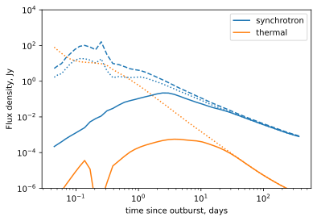
图注：RUN04模型在1 GHz的不同射电光变比较。橙线为热辐射，蓝线为同步辐射；点线和实线分别表示未吸收与吸收后通量。同步辐射的点线、实线均包括Razin效应，而蓝色虚线既不含Razin效应，也不含吸收。
怎么看这张图：先比较蓝色虚线与点线以分离Razin抑制，再比较点线与实线以识别传播吸收。早期观测峰并非本征峰，橙线受更强遮蔽则与热辐射来自更深层有关。 将发射抑制与吸收分开检验。
来源与置信度：arXiv HTML；source verified；https://arxiv.org/html/2609.28191v1/tCrB-run04-radio-synchrotron-thermal-evo.svg
图7
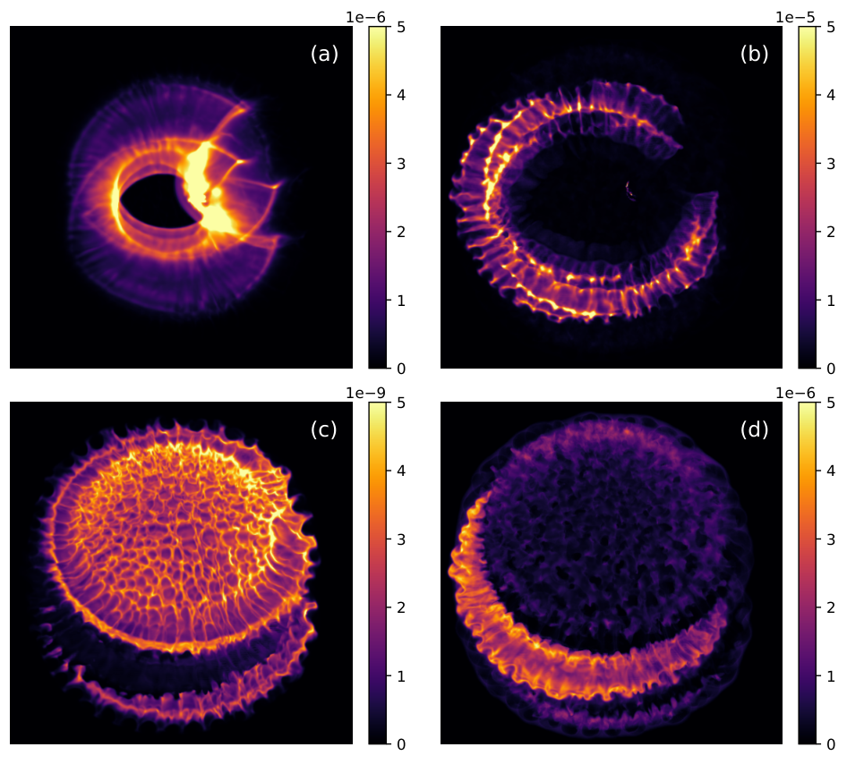
图注：RUN04模型在爆发后第1.59天的1 GHz射电图像。左列（a、c）为热辐射，右列（b、d）为包含Razin效应的同步辐射。上排表示未吸收通量，下排加入吸收。色标单位为Jy每像素。
怎么看这张图：同列上下对照可见吸收选择性遮住深层与远侧，留下局部亮环。右下的条状不对称不必意味着喷流；天空方向由所选轨道相位设定，不能直接当作真实位置角预测。 直接展示三维传播造成的形态歧义。
来源与置信度：arXiv HTML；source verified；https://arxiv.org/html/2609.28191v1/tCrB-run04-radio-img-step-24.png
图13
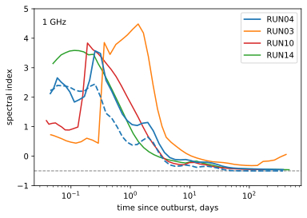
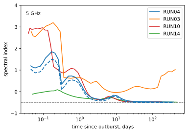
图注：不同T CrB模型中由吸收后通量得到的射电谱指数α演化，定义为通量密度S正比于频率ν的α次幂。实线、虚线分别包含、不包含Razin效应。上图为约1 GHz的谱指数，用0.9—1.1 GHz计算；下图为约5 GHz，用4.5—5.5 GHz计算。水平虚线标出α=-0.5。
怎么看这张图：对比两个频带接近透明极限的时间，并单独留意高密度RUN03接近零指数或后期上升的例外。早期正指数也可由被吸收的同步辐射产生，不能仅据符号判断热机制。 多频时序诊断及高密度模型的边界。
来源与置信度：arXiv HTML；source verified；https://arxiv.org/html/2609.28191v1/tCrB-radio-spectral-index-1GHz.svg；https://arxiv.org/html/2609.28191v1/tCrB-radio-spectral-index-5GHz.svg
强相关工作
同源模型链从Orlando等2025年Paper I的三维流体与热X射线预报出发，再到Petruk等2026年Paper II的伽马和中微子预报；本文补上射电辐射转移。这种共用几何和时间轴的设计方便检验多波段是否相容，但三篇继承的环境假设相同，不能将其当成三次独立观测确认。文献表给出原始链接arXiv:2507.20334和2603.15570，可用于继续核查能量与环境参数。
观测对照包括RS Oph的MAGIC与H.E.S.S.高能探测、Linford等2019年T CrB射电活动态及Petry等2025年ALMA爆发前观测。前者说明再发新星确实可加速高能粒子，后两者约束本系统静态环境，但都不能保证T CrB按某一示例曲线爆发。Bell 2004的非共振磁场放大和Bandiera与Petruk 2016的随机场同步辐射则是机制基础；本文将它们接到流体结果上，尚未自洽演化粒子与场反馈。
同一事件 / 同类源线索：
相似工作：
- https://arxiv.org/abs/2202.07681
- https://arxiv.org/abs/2202.08201
- https://arxiv.org/abs/1909.13858
- https://arxiv.org/abs/2509.05111
基础理论 / 方法工作：
相反观点 / 张力线索：
（未提供）
5. Study of blazar variability through their flux distribution for CTAO long-term monitoring
- 来源：arXiv / astro-ph.HE
- 链接：https://arxiv.org/abs/2609.28276
- 作者：A. Mikhno, J. Biteau, J.-P. Lenain on behalf of the CTAO collaboration
- 评分：novelty 9/10，importance 9/10，relevance 10/10，final 10.00/10
- 推荐理由：CTAO固定时预算比较长期监测策略以通量分布判别力为目标，对IACT观测设计直接相关。
中文题目：CTAO长期监测如何分配曝光：用耀变体通量分布检验观测节奏
做了什么：耀变体的伽马辐射会从分钟到年尺度变化，但在爆发后才追加观测，会过度采样高通量状态，使测得的活动占空比和通量分布偏离源的真实行为。本文针对切伦科夫望远镜阵列天文台（CTAO）的活动星系核长期监测计划，在每源每年26小时的固定预算下，比较每周三次10分钟、每周一次30分钟、每月两次60分钟和每月约一次120分钟四种节奏。作者为14个源模拟具有对数正态变化的光变，并经过仪器响应和能谱重建，再检验能否把高斯与对数正态通量分布区分开。
结果支持按源亮度分配节奏：亮源适合更短、更密的采样，暗源需要更长单次曝光；最暗源可能四种节奏都达不到要求。策略必须同时满足分布判别指标超过5，以及至少75%的时间箱达到3σ源检测。这里的判别指标是模拟对数似然相对另一批模拟均值的标准化距离，并未证明等同于高斯尾概率意义的发现显著性；论文展示的Mrk421“19σ”应按这个定义理解。
为什么重要：观测时长相同并不意味着科学信息相同。长曝光让单点更精确，却减少对分布尾部和低态占空比的独立采样；短曝光获得更多时间点，却可能把暗态变成上限。本文把这个取舍写成可比较的双重条件，使长期监测计划能够围绕具体科学问题分配时间。它推进的是在既定源模型和仪器响应下的策略评估，并没有从模拟直接确定真实耀变体采用哪一种变源机制。
理论 / 观测 / 仪器方法价值：可复用的部分是先注入物理或统计光变、再施加可见性和仪器响应、重建每箱通量，最后以模型回收和替代模型检验评估策略的完整链条。对IACT或LACT类似监测，输入需要源能谱、变化幅度、时间相关结构、观测窗口和响应；必须用目标仪器重新模拟，并显式处理未检出时间箱。仅对一条理想光变抽点，无法复现背景和通量估计误差对分布的改变。
为什么应该关注：这项工作直接联系耀变体监测排班和粒子加速解释。对数正态分布可能来自吸积率涨落的乘性传播，也可能来自喷流内部的随机过程；即使统计上辨认出分布形状，仍需功率谱、均方根—通量关系或多波段时延来区分物理机制。值得关注的下一步是把真实红噪声相关、季节空窗和暗态上限纳入策略校准，再判断增加采样次数能否真正提高有效信息量。
展开详细解读：文章讲解、背景、理论、重点章节、图表与相关工作
文章详细讲解
科学问题：长期监测希望知道一个源通常处于什么通量、多久进入高态，以及变化是许多独立贡献相加，还是涨落相互放大。耀变体喷流接近视线，辐射受相对论性增强，导致变化既有内禀粒子动力学也有几何因素。若只追踪爆发，经验通量分布就混入了观测选择；因此本文把不依赖瞬时通量的常规监测作为前提，询问有限时间应拆成多少次曝光。
作者怎么做：用基于Gammapy的CtaAgnVar生成CTAO观测，时间模型注入对数正态通量，能谱采用带指数截止的对数抛物线，仪器响应使用Prod5 v0.1。14个源与四种节奏分别做100次实现，考虑可见性，再在每个时间箱拟合能谱并重建通量。对每条光变分别拟合高斯与对数正态分布，用最佳参数生成1000次玩具蒙特卡罗，比较原始模拟的对数似然在相应模拟分布中的位置。这一步把有限样本波动纳入评价，而不是只比较一张直方图。
关键结果：Mrk421每周三次、每次10分钟的示例中，对数正态自洽检验指标为0.8，改用高斯玩具模拟时为19。前者表示注入模型与回收过程在这一例中相容，后者表示两个模拟分布的似然尺度相距很远。作者再要求至少75%的时间箱达到3σ检测，避免选择一种虽能在理想分布上区分模型、实际却大量漏掉暗态的策略。由此亮源偏向密采样，暗源偏向长曝光，最暗源仍可能无合格节奏。
局限和下一步：这是一篇简短会议论文，核心结果建立在已知为对数正态的注入模型上。正文没有给出全部14源的参数表、完整时间相关校准、上限处理细节或实测归档数据的逐源结果，因此不能把摘要提到的归档应用扩写成已展示的新观测发现。特别是用1000次模拟估计均值和标准差，不能经验测出19σ尾概率。后续需要不同注入分布、红噪声斜率、变化幅度和真实观测窗口的交叉检验，并把策略选择本身引入的偏差纳入独立验证。
关键结果是怎么做出来的
第一步先固定公平比较的资源。四种节奏在一年内都约消耗26小时：短而频繁的访问最多，长而稀疏的访问最少。这个预算不等于四种方案实际获得相同数量的有效点，因为可见性、天气等窗口以及低通量状态的探测能力都会改变最终样本。本文明确考虑可见性，未提供足以独立复现全部额外调度损失的细节。
第二步是从源模型到观测量的前向模拟。作者并非直接抽取一个理想通量直方图，而是把对数正态时间序列与截止对数抛物能谱送入CtaAgnVar，再以CTAO响应生成和重建观测。每箱比较数种谱模型的流程可以降低强行固定错误谱形造成的通量偏差，但谱模型选择本身的随机性也会进入经验通量分布，需要与通量误差一起理解。
第三步是拟合分布并做模型回收。图1同时展示Mrk421光变与分布拟合；图2左侧用回收得到的对数正态参数产生玩具样本，检查初始模拟的对数似然是否落在模拟中心附近。0.8的标准化偏离说明这一设置没有显著自洽矛盾，但单个例子的成功不等于所有亮度、窗口和相关时标下都无偏。
第四步才测试替代模型。用高斯最佳参数生成玩具模拟，原始对数正态注入数据相对这批模拟的指标达到19。这里不是通常把两个嵌套模型的最大似然相减后应用卡方定理；高斯与对数正态也不是靠简单增加一个参数互相嵌套。正文定义的标准化距离提供排序信息，若要转为假阳性率，需要另行验证统计量分布及尾部，而不能直接套用正态表。
第五步把统计判别与观测可用性结合。图3汇总每源每节奏的结果，作者只考虑指标超过5且至少四分之三时间箱达到3σ检测的方案。亮源即使10分钟也常有可靠通量，增加采样点有利于描绘分布；暗源则先需要积累足够源光子以免测量噪声支配分布。最暗源没有通过方案是有效结果，说明固定预算和当前指标不能同时满足，不能为了给每源一个答案而降低门槛。
原图核查补充：图3明确带有Preliminary水印；W Comae被标为每月一次120分钟，但其纵轴位置低于正文要求的5。图中没有任何源使用60分钟的颜色。这说明图示策略与文字门槛至少有一处尚需作者澄清，不能仅根据正文把图3全部彩色点称为通过双门槛。本解读保留图中呈现，并将W Comae列为待核对而非合格策略。
展开背景、理论、公式、模型和章节导读
背景知识
活动星系核由超大质量黑洞吸积供能，其中一部分形成相对论性喷流。耀变体是喷流接近视线的一类，辐射经多普勒增强后尤其明亮和多变。观测光变不是直接读取发动机的功率：电子注入、加速、冷却、光子传播及喷流朝向都可能调制通量，因此统计规律首先是物理解释的约束，而非机制的唯一指纹。
通量概率密度描述随机抽一个观测时刻时遇到某通量的概率。高斯分布以均值两侧近似对称为特征，而对数正态在正通量域上往往有明显高态长尾。许多小的独立贡献相加，常趋向高斯；若许多正的随机放大因子相乘，其对数相加，则可能形成对数正态。这些是理解分布的标准背景，不是本文对源微观动力学所作的推导或实测确证。
历史上盘内吸积率涨落向内传播，是解释乘性变化和均方根—通量关系的重要思路。但喷流内部加速、冷却或相对论性子结构也能产生类似统计形状。本文引用的Giebels工作、喷流随机过程研究及minijets-in-a-jet模型说明，同一个经验分布可以对应多个物理来源。需要时间结构或跨波段信息才能打破这种退化。
IACT通过大气簇射切伦科夫光间接测量伽马射线，观测受源可见性和有限曝光制约。与几乎连续的理想监测相比，许多短访问和少数长访问不仅改变误差，还改变可抽到的变化时标。CTAO长期监测的价值是在源是否爆发之外建立稳定采样，给活动占空比和低态辐射提供相对不偏的入口；但这种排班原则并不能自动消除探测阈值造成的选择效应。
基础理论 / 方法脉络
首先区分边缘分布与时间相关。把光变所有通量点放进直方图，会丢掉时间顺序；两条光变可以有同样的通量分布，却有完全不同的爆发持续时间或红噪声功率谱。本文选择分布作为特定科学指标，因此最优节奏只针对该指标，不能自动推广为时延、分钟级爆发或周期搜寻的最佳策略。
其次区分固有通量和测量通量。一个时间箱给出的通量是整个曝光内源变化的平均，并叠加源光子与背景涨落、响应以及谱形拟合的不确定性。长曝光降低统计误差，但也平滑快变化；短曝光保留更多时间采样，却可能测不出低态。前向模拟的必要性就在于把这两种竞争作用一起推到最终统计量，而非只按点数多寡作决定。
第三是有效样本数。若相邻点在物理相关时间内，增加访问次数并不按相同比例增加独立信息。四种节奏即使年预算相同，遇到红噪声、季节缺口或长爆发时也会获得不同的有效样本。论文没有给出足够的时间相关处理细节来证明独立抽样的玩具模型覆盖这些效应；这是将方法移植到LACT或真实IACT数据时必须补的验证。
第四是检验的目标。自洽检查问已知注入模型能否被自己的模拟回收，替代检验问另一模型产生的样本与原始统计量相距多远。二者缺一不可：仅排斥高斯，可能只是误差模型错误；仅通过对数正态回收，也不说明其他物理模型不能解释数据。作者额外设置检测率条件，是承认好看的分布判别必须以足够可靠的单箱观测为基础。
公式与推导
下面将原文式(1)与理解它所需的标准统计背景连接起来。除最后的标准化判别量和文中明确的策略门槛外，以下概率密度、曝光平均和计数关系均为教学补充，未声称作者按这些完整形式实现了误差传播。
设正的固有积分通量为 $F$，选定同单位参考通量 $F_0$，令 $Y=\ln(F/F_0)$。若许多乘性涨落使 $Y$ 近似高斯，则变量变换给出
$m$ 和 $s$ 是无量纲对数通量的均值与标准差，$1/F$ 是雅可比，保证对通量积分等于1。取对数时引入 $F_0$ 可避免对有量纲量直接取对数。分布长尾并非另加一个爆发成分，而是指数映射自然产生。
作为替代的加性背景，若通量涨落在均值附近近似对称，标准高斯密度为
$\mu_F,\sigma_F$ 与 $F$ 同单位。数学高斯允许负值，对正的固有通量这在变化幅度大时需要额外处理；对于带背景扣除误差的估计值，负值又可能是合理测量结果。本文未详述尾部与未检出的实现，因此不可自行假定采用了截断高斯。
两类分布的形状也反映在矩上。对上述对数正态变量，
因此保持平均通量不变而增大 $s$，会增加高态尾部与相对变化幅度。这个关系说明拟合参数不只是“亮度”，还决定稀有高态对样本的影响；比较不同源时不能只按平均亮度缩放。
曝光测到的是时间平均，可写为
这里 $\Delta t_i$ 是单次曝光。若曝光超过快速变化的相关时间，平均会压低高频变化；反之短曝光更接近瞬时分布。这一步解释了为什么四种策略的经验分布可能不同，即使注入的底层过程相同。
再用简化计数关系连接仪器。忽略能量响应细节时，源期望计数和背景主导信噪比近似为
$A_{\rm eff}$ 为有效面积，$N_b$ 为随曝光增长的背景计数；比例关系仅适用于背景主导且谱形、响应不变的近似，不能代替实际IACT似然检测。这解释暗源为何需要长曝光，同时也说明同一年预算并不能保证每箱检测率一样。
若 $N$ 个样本独立且误差可忽略，分布参数 $\theta$ 的对数似然教学形式为
真实光变可能相关，通量误差也不同，完整实现应在生成模拟或似然中包含这些效应。此式用来解释论文“对数似然”是什么，而非补称作者已做了逐箱误差卷积；比较不同样本规模时还必须保持统计量定义一致。
原文式(1)定义
$\ell_{\rm obs}$ 是初始CTAO模拟光变的对数似然，分母是对应玩具模拟的对数似然标准差。这里的下标和记号沿用原文；作者分别使用对数正态与高斯假设生成玩具样本。$Z$ 是无量纲标准化距离，只有统计量分布和尾部得到适当校准时，才可进一步对应一个尾概率。1000次模拟没有经验分辨19σ尾概率的能力。
最后把判别与可检测性结合，作者要求
前者沿用论文判别指标的用语，后者约束实际可用时间箱比例。两项测量的意义不同，不能把3、5和19混作同一种显著性。预算固定时，增加曝光提升第二项，却减少分布采样；这正是策略优化要解决的物理与统计取舍。
模型拟合 / 应用方法
输入层包括14个目标的谱形、对数正态时间模型、四种候选节奏、可见性和Prod5 v0.1响应。每个源和节奏有100次光变实现。正文未列出完整逐源参数和响应选取表，因而读者可以理解流程，但不能仅凭本文复现每个目标的数值最优方案；相关实现细节需要回到CtaAgnVar项目及引用的长期监测研究。
重建层先拟合每个时间箱的能谱，再获得通量。作者说明会比较数种谱模型以选择最佳描述，这让谱形变化有机会进入重建，而非固定错误形状。但正文没有展开具体选模惩罚、暗态上限或负通量的处理。迁移应用时应保存逐箱似然或计数级信息，因为只用对称误差条可能无法描述低计数箱。
分布层分别估计高斯和对数正态参数，再由各自最佳拟合参数生成1000次玩具光变。这样得到的是以当前拟合值为条件的参数化模拟，不自动包含全部参数不确定性。若参数估计误差较大，需在重复实验中重新拟合或通过明确的层级模型传播；这是建议的验证工作，不是本文已经报告的步骤。
诊断层先检查对数正态回收，再测试高斯替代，并使用检测率剔除无法稳定测到源的策略。Mrk421的示例支持流程对亮源可行，但不能将这一源的19推广为全部目标的显著性。多个源和多种节奏中择优也会带来选择效应；若未来要报告真实数据的发现概率，应使用独立模拟集评价最终选定策略，避免用同一批样本同时调参与验收。
实际部署时，最有用的输出不应只有一条“最佳节奏”，还应包含对变化幅度、红噪声相关、季节窗口和背景误差的敏感性。若最暗源四种节奏均失败，应诚实报告预算下不可辨识，并考虑更长总基线、重新分配时间或改变科学指标。不能把少数高态检测拼成看似对数正态的分布后再宣称策略成功。
图3的W Comae点与门槛不一致，是实际读图发现的版本内部问题。稳妥的使用方式是保留亮源适合密采样的定性结论，同时不给W Comae下达正式排班建议；若据此实施观测，需要原始模拟表或后续定稿确认。这个差异不能由助手擅自改图、提高点值或放宽5的条件来消除。
重点章节 / 结果段落怎么读
第1节先看长期监测为什么要求与通量状态无关。这里定义的是活动占空比和源类比较的目标，决定后续选用通量分布作为评价指标，也提示爆发触发样本为何会有选择偏差。
第2节把四种节奏、每年26小时和模拟输入放在一起读。抓住对数正态时间模型、截止对数抛物谱及仪器响应三个层次，区分源物理输入与观测重建输出；这是理解任何“最优策略”适用条件的入口。
第2.1至2.2节结合图1、图2与式(1)。先分清100次CTAO实现与1000次玩具模拟，再分别回答自洽回收和替代模型检验的问题，尤其不要把原文Z的定义跳过，只记住19σ。
第2.3节和图3最后读。这里增加至少75%时间箱达到3σ的条件，才把理想统计判别转成可用观测计划。对最暗源无合格节奏的情况，应追问是单箱灵敏度还是分布信息不足，而不是直接套用亮源结论。
关键图表与解读
图1
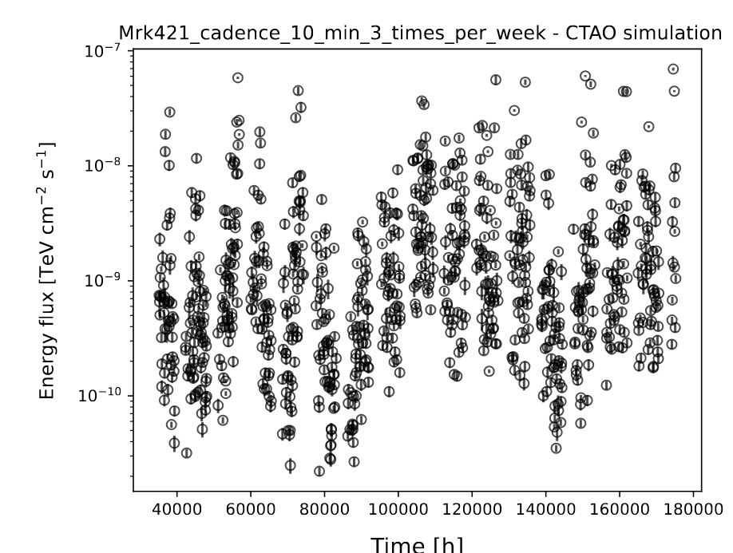
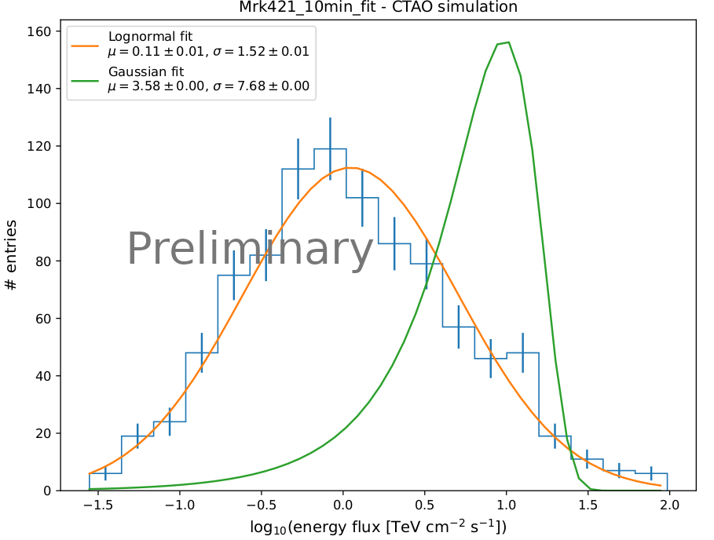
图注：马卡里安421在每周观测三次、每次10分钟节奏下的光变曲线（左），以及相应通量分布用高斯模型和对数正态模型拟合的结果（右）。
怎么看这张图：先看短曝光是否仍能测到低通量状态，再比较右图两种分布对主体和高通量尾部的描述。这里是CTAO响应下的模拟源，不是新取得的Mrk421观测；分箱图仅用于展示，不能凭肉眼差异替代下面的模拟校准。 连接观测节奏、可恢复光变与通量分布，是策略推断的输入证据。
来源与置信度：arXiv HTML；source verified；https://arxiv.org/html/2609.28276v1/LC.png；https://arxiv.org/html/2609.28276v1/PDF_fit_mrk421_10_pr.png
图2
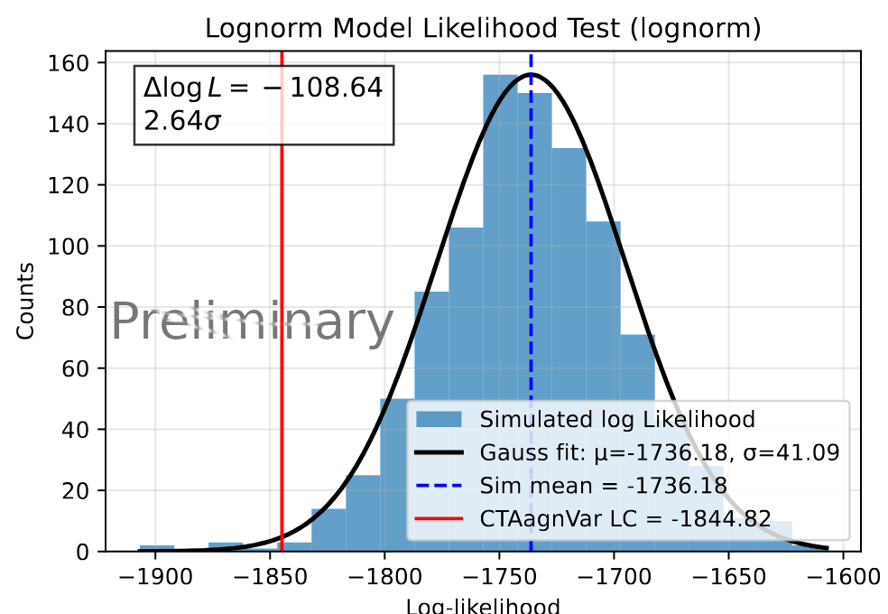
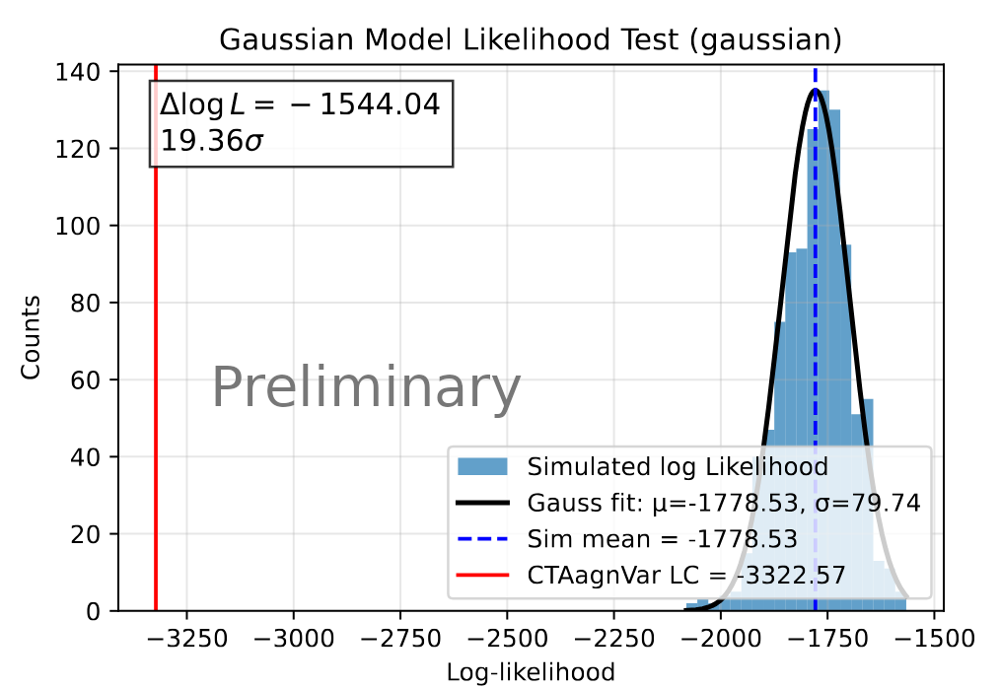
图注：马卡里安421采用每周三次、每次10分钟观测节奏时的对数似然分布：左图比较初始光变曲线与假设对数正态通量分布的玩具蒙特卡罗模拟，右图对应假设高斯通量分布的模拟。
怎么看这张图：左图检验模拟能否回收已注入的对数正态模型，右图检验替代的高斯模型。正文给出的0.8和19是用模拟均值与标准差归一化的指标；1000次模拟不能直接测量19σ高斯尾概率。 原文核心统计流程及其显著性边界。
来源与置信度：arXiv HTML；source verified；https://arxiv.org/html/2609.28276v1/Lognorm_fit_pr.png；https://arxiv.org/html/2609.28276v1/Gauss_fit_pr.png
图3
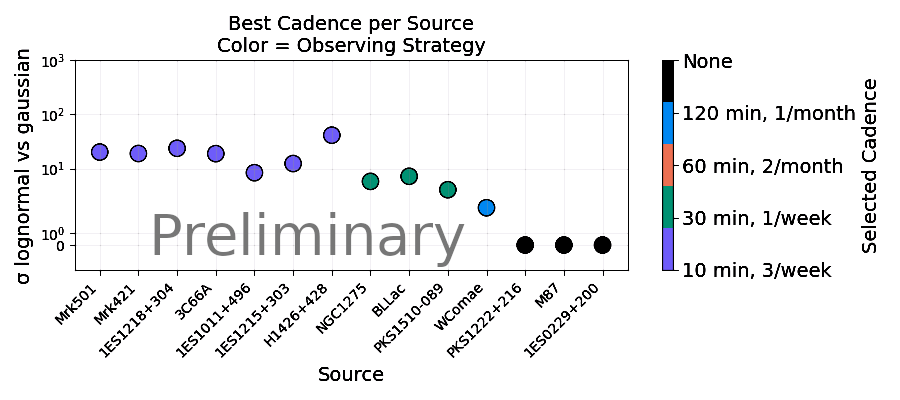
图注：为各个源选定的观测策略。
怎么看这张图：按源比较四种节奏，并把分布判别指标与单时间箱检测率一起看。本文要求判别指标超过5，且至少75%的时间箱达到3σ源检测；最暗源可能没有合格策略，不能简单把最长曝光视为已解决。 原图带Preliminary水印；W Comae的120分钟彩色点低于5，和正文门槛不一致，暂不能把该方案当作已通过。 呈现固定年度时预算下的源别策略结果。
来源与置信度：arXiv HTML；source verified；https://arxiv.org/html/2609.28276v1/Final_plot_pr.png
强相关工作
本文的直接方法前身是其参考文献[5]所列CTAO长期监测变源研究，提供CtaAgnVar模拟背景；Gammapy见参考文献[2]的官方链接。本文增加的是将模拟光变的通量分布、玩具似然校准和单箱检测率共同用于排班比较。它与通常只追求单源积分灵敏度的时间分配不同，因为长期统计需要足够多且相对不偏的时间样本。原文参考文献作者部分存在缩写和排版不完整，因此此处采用题名与原文参考文献锚点作可核验入口，不补造DOI。
物理解释上，参考文献[1]的BL Lac对数正态变化研究、[8]的minijets-in-a-jet统计模型，以及[9]的粒子加速动力学与通量分布工作分别说明乘性变化并不专属于盘内传播。一旦观测支持对数正态，仍需其他诊断判断变化来自发动机还是喷流。值得特别警惕的是，原文[7]列的是IceCube伽马暴中微子搜寻，与其所附的耀变体宽时标变源论述不直接匹配；本解读不沿用该条作为变源事实的证据。
同一事件 / 同类源线索：
相似工作：
基础理论 / 方法工作：
相反观点 / 张力线索：
（未提供）
6. EP260119a: A High-Redshift Gamma-Ray Quiet Fast X-ray Transient Probing a Potentially Hidden Population of Relativistic Explosions
- 来源：arXiv / astro-ph.HE
- 链接：https://arxiv.org/abs/2609.27127
- 作者：Camila Angulo-Valdez, Asuka Kuwata, Edilberto Aguilar-Ruiz, Rosa L. Becerra, Ramandeep Gill, Miguel Angel Aloy, Antonio de Ugarte Postigo, Alan M. Watson
- 评分：novelty 9/10，importance 8/10，relevance 9/10，final 9.65/10
- 推荐理由：z=5.47的伽马静默快速X射线暂现及多台同时上限，能约束高红移爆炸的选择偏差。
中文题目：EP260119a：红移5.47的伽马静默X射线暂现源与受模型限制的喷流解释
做了什么：EP260119a于2026年1月19日被爱因斯坦探针宽视场X射线望远镜发现，软X射线持续约300秒；COLIBRÍ在约8.8小时后找到很红的光学对应体，后续GTC光谱的莱曼α断裂给出红移5.47。多台同时覆盖的高能仪器均未发现对应伽马暴，作者因此把它归为“伽马静默快速X射线暂现源”。这里静默只表示在各自能带、时间窗和谱假设下未检出，不表示本征伽马辐射为零。
光学与一个X射线余辉时点可由近轴均匀相对论喷流、浅密度梯度环境下的同步辐射解释，但数据没有唯一确定全部物理参数。伽马谱峰、辐射能和低效率是额外假定Band谱与Amati关系后构造的示例。精读还发现电子能量比例的表列先验与后验不相容，影响对参数精度的信任。最稳健的意义是高红移相对论爆发能够通过软X射线入口发现，而非已经证明一种独立新种群或确定其发生率。
为什么重要：传统高红移爆发样本主要靠硬X射线或伽马触发建立，遗漏软谱或低于阈值的事件会使样本不完整。EP260119a具高红移和普通相对论余辉可行解，说明没有伽马触发仍可能发生有力的相对论爆发。它扩大了发现入口，但一个事件不能判断伽马静默源究竟是GRB连续分布的软端还是独立物理类别，更不能由红移相似就证明共同前身星。
理论 / 观测 / 仪器方法价值：本工作的实用价值是把不同仪器覆盖、能带和时间尺度的上限，光学断裂红移，余辉时序与物理模型放在同一证据链内。可借鉴的是逐项保留上限条件和可辨识性：一次宽带拟合良好并不能把未经观测的prompt谱变成测量。对余辉建模，作者明确给出加速电子比例的缩放退化，并承认单一X射线时点和缺少射电使某些参数无法独立约束。
为什么应该关注：这与高能暂现源快速后随直接相关：Fermi在事件时进入南大西洋异常区，不能把它计为有效未检出；SVOM、Swift与Konus才提供当时约束。对未来高能响应预报，必须区分软X射线发现、相对论余辉证据和未经观测的高能谱外推。本例缺早期余辉、射电及多时点X射线，恰好展示及时多波段覆盖对解除能量、密度与微物理退化的重要性。
展开详细解读：文章讲解、背景、理论、重点章节、图表与相关工作
文章详细讲解
科学问题。 一个在宇宙早期出现、X射线与光学很亮但没有伽马触发的事件，是否仍是标准相对论爆发？要回答它，首先确认距离和高能覆盖，再判断余辉是否可由通常的外激波模型解释。只有在这一层面明确后，才能讨论prompt谱是否很软、辐射效率是否异常；“没触发”本身并不足以区别这些机制。
作者怎么做。 作者汇总EP的prompt与后随X射线、COLIBRÍ及多台光学设施的光变，利用红色光学谱断裂估计红移并采用后续光谱值。高能端分别分析SVOM/ECLAIRs、GRM、Swift/BAT和Konus-Wind的未检出，随后做光学平滑折断幂律及物理均匀喷流拟合。晚期深图还检验附近延展源是否宿主，并与高红移GRB和EP样本比较，避免只从一个波段定性分类。
关键结果。 光谱红移5.47较可靠；光学现象学斜率从约−0.55变为−2.24，转折约25小时。采用在轴薄壳前向激波与全部电子加速的假设时，物理模型给出密度指数$k\simeq0.39$，比典型$r^{-2}$恒星风浅，$E_{k,\rm iso}\sim7.8\times10^{52}$ erg、初始洛伦兹因子约290，但这些是条件参数。附近星系测光偏好红移约4.32，且偶然重合概率约7%，因此并非可靠宿主，不能由其偏移或恒星质量推断爆发环境。
局限和下一步。 只有一个X射线余辉时点、没有射电且光学晚期采样有限，使谱段归属、喷流转折与微物理参数仍有退化。X射线光子指数给出的电子指数还与拟合中心值有张力；更严重的是表5先验$\log\varepsilon_e\leq-0.5$与表2后验$-0.44$不相容，需要作者说明实际先验或表格错误。下一步应核验公开拟合设置、补多时点宽带观测和更深宿主成像；当前不能用精细误差条宣布独特低辐射效率或第三星族前身星。
关键结果是怎么做出来的
第一步是距离。COLIBRÍ的$r-z\simeq3$极红颜色由莱曼吸收解释，零宿主尘埃模型给出$z_{\rm phot}=5.62^{+0.02}_{-0.03}$，GTC光谱约7870 Å断裂对应$z=5.47$。差异用$\Delta z/(1+z)$表示约2%，并非落在测光红移的窄1σ区间内；后者只含统计误差，系统项未包含。高红移性质有光谱支持，但不应借“2%一致”暗示测光系统已完全受控。
第二步是高能静默的定义。ECLAIRs给300秒、4—120 keV的3σ通量上限$10^{-9}$ erg每平方厘米每秒，GRM在15—5000 keV、300秒和指定谱下为$3.1\times10^{-9}$，BAT有效数据仅14—45 keV而非标称宽能带，给$2.22\times10^{-9}$。Konus则是2.944秒峰通量90%上限$1.3\times10^{-7}$，不能与300秒均值上限当同类点拟合。Fermi因异常区没有有用同时观测，不提供非检测证据。
第三步是光学时序。联合$r,i,z$拟合共享两段斜率和转折时刻，但每带独立归一化，得到约25.05小时转折。包含一个与近同时LT数据明显不一致的NOT点时，约化卡方2.62；排除后为0.91。作者保留该点并说明影响，日报也不能只报“残差通常在2σ内”而隐去这个异常。转折后的陡斜率可由喷流效应解释，但采样不足以唯一确证。
第四步是物理余辉模型。正轴、锐边均匀喷流的$z$带与X射线拟合给约化卡方1.06、自由度9；喷流开角约0.047 rad，环境在$10^{18}$ cm处密度约0.016每立方厘米。模型计算的光学峰约0.4天可由特征同步频率穿越光学产生，物理喷流转折约$3.1\pm2.0$天，不应与25小时现象学折点机械认作同一个量。在所探索假设下偏轴top-hat拟合不满意，不能据此排除所有结构喷流或视角效应。
第五步是排除不可靠宿主与种群过度解释。邻近延展源中心距余辉约1.11角秒，但其$r$带通量与$z=5.47$的莱曼断裂不符，测光偏好4.32，偶合概率约0.06—0.09。作者最终认为真实宿主仍未探测。种群图只比较有红移子样本，尚无完整发现和后随选择函数；因此可说软X射线发现补充样本，不能据此给隐藏种群体积率或判断其占比。
展开背景、理论、公式、模型和章节导读
背景知识
快速X射线暂现源是观测类别，成员不一定共享同一前身星。部分与GRB明确关联，部分只有软X射线和余辉，可能来自软prompt谱、仪器阈值或不同机制。伽马静默尤其是覆盖和阈值相关的定义；一台仪器没触发与充分覆盖下给出通量上限不是同一证据，更不能把未覆盖写成零通量。
高红移既降低通量又改变仪器对应的本征能带。$z=5.47$时WXT的0.5—4 keV实际采样源系3.24—25.9 keV，同一个观测能带在不同红移不是相同物理能段。直接比较观测通量可反映发现条件，但比较本征亮度需要统一能带和谱外推；本例光子指数误差较大，向低能外推尤其不稳。
GRB余辉的经典图像是喷出物扫过环境后形成相对论前向激波，部分激波能进入电子与磁场，电子产生同步辐射。其典型频率和冷却频率随时间变化，穿越固定观测波段也会造成斜率转折，不需要每个折点都有新的发动机活动。喷流减速后边缘进入可见区又可加速衰减，所以时序折点的物理归属需要谱与多波段共同限制。
宿主关联并不由最近星系自动决定。深场存在许多暗弱星系，必须结合位置误差、星系面密度和红移判断。偶然重合概率是给定星等密度和距离下的统计量，不是宿主假设的直接后验概率；本例还有红移不符这一独立不利证据。红移很高也不自动指向第三星族，缺乏宿主或元素证据时只能保留推测等级。
基础理论 / 方法脉络
在密度$n(R)=AR^{-k}$的环境中，激波扫掠质量随半径为$R^{3-k}$。当扫入的物质需要消耗与原喷出物相当的动能时开始减速，之后相对论绝热爆炸波近似自相似。$k$控制减速速度与光变斜率，但能量、密度归一化、微物理比例都可能补偿，单条光变不足以逐个测量这些参数。
同步谱的电子最低频率$\nu_m$由注入电子能量控制，冷却频率$\nu_c$由电子在动力学时间内的损失决定。光学处于两者之间时，谱指数关联电子幂律$p$；X射线在冷却频率以上时是另一关系。本文采用的X射线高频谱段与一个时点的光子指数推得$p\simeq1.98$，而物理拟合给2.68，这种差异需要更多谱时序约束，不能只用拟合卡方掩盖。
均匀锐边喷流的开角决定何时可见边缘，近似发生于$\Gamma\theta_j\sim1$。侧向膨胀是否强、等到达时面如何积分，都会影响真实折点形状。本文用薄壳与正轴模型解释光变，均匀外流在某些参数区是可行方案，但并未证明真实喷流就是没有角结构的top-hat。
微物理退化来自参与加速的电子比例$\xi_e$。如果只有更少电子被加速，每个电子可得到更高能量；同时改变总能量、环境密度和能量分配比例，仍能保持相似的同步谱。作者固定$\xi_e=1$以避免稀疏数据不能约束的额外自由度，因此其能量和密度不是独立于这个选择的绝对测量，低prompt效率也进一步依赖未经观测的prompt能量。
公式与推导
先用源系与观测系关系统一量纲和能带：
$D_L\simeq53$ Gpc已经包含光度距离的红移定义，匹配能带的光度不再额外乘$1+z$。本文约$4.4\times10^{-11}$的平均能流对应约$1.5\times10^{49}$ erg/s；能量或流量的时间积分才需另外处理时间伸缩。
原文式(3)(4)的共同源系能带换算为：
这里$\Gamma_{\rm ph}$为光子指数，勿与激波洛伦兹因子混用。观测积分下限到0.0155 keV，远低于WXT，因此作者得到的$3.05^{+6.40}_{-1.02}\times10^{49}$ erg/s不确定度很不对称，且这组误差只来自谱指数项。
原文5.2节由质量守恒计算扫掠质量和减速尺度：
$A=n_0R_0^k$、$R_0=10^{18}$ cm，要求$k<3$。由于早于约0.3天的余辉未覆盖，本文只给减速时标上限约550秒，而非精确测到减速峰。
以绝热自相似阶段连接时间标度，以下后半是教学整理：
由此可将环境和动力学带入同步谱；它依赖超相对论、绝热和固定能量，若持续注入显著则需修改。
慢冷却同步谱满足原文给出的闭合关系：
故高于冷却频率时$p=2(\Gamma_{\rm ph}-1)$，介于两频率时$p=2\Gamma_{\rm ph}-1$。代入1.99得到约1.98或2.98，展示谱段归属为何改变物理解释，而非强迫观测只取某一段。
喷流边缘条件与原文时标为：
物理模型给$3.1\pm2.0$天，现象学折点25小时约1.04天，接近其误差范围下沿但不应称完全相同。等到达时面与谱穿越可以平滑光变，所以折点标签不能替代动力学计算。
原文5.2节明确给出的加速比例退化为：
星号表示$\xi_e=1$拟合。相同数据可容许这一族参数，说明其窄误差仅在固定假设内成立；射电热电子效应等才可能进一步解除退化。
最后把原文附录B的prompt构造与观测测量分开：
积分取对应源系1—10000 keV的观测界限，$N_{\rm Band}$是时间积分谱，能量换算为erg。作者固定Band指数并额外要求Amati关系，才得到约33 keV源系峰和$2.08\times10^{51}$ erg示例能量；约2.61%的效率继承所有这些假设，不能当作被伽马上限独立测到。
模型拟合 / 应用方法
现象学光学拟合使用共享斜率与折点、独立波段归一化，平滑参数固定4.5，64条行走链，舍弃2000步后保留20000步。似然假定独立高斯测光误差，但不同望远镜校准系统项与异常点仍可能影响结果。约化卡方由2.62变为0.91的单点敏感性比“链跑得长”更直接说明数据一致性问题，不能将两个卡方只挑较好者呈现。
物理模型固定正轴、无限薄壳、$\xi_e=1$和很小尘埃消光，用$z$带及1 keV余辉信息拟合八个参数。表2给$\log E_k=52.89$、$\log\Gamma_0=2.46$、$\log n_0=-1.79$、$p=2.68$、$k=0.39$；这些是在具体模型中的后验。论文先用宽先验搜索，再收窄采样，但没有在所读表格中完整分别列出两轮先验，复现需要核查实际代码与配置。
一个明确的内部不一致是表5给$\log_{10}\varepsilon_e\in(-3,-0.5)$，表2却给$-0.44^{+0.03}_{-0.04}$，连所列1σ下界约−0.48都超出表列上界。若真按该均匀先验采样就不可能出现这个后验；可能是表格错误或实际另用了先验，现有正文不足以判断。因此不能把这一参数及依赖它的精确误差解释成已经可复现，不能自行改先验来“修好”论文。
prompt谱只有一个软X射线测量与不同时间窗的高能上限，作者用Amati关系补约束，明确说明不是唯一反演。附录B采用$K=81\pm2$，正文出现$81\pm0.2$的写法，两者又不一致，应按附录说明其计算处方并保留原文差异。上限的置信水平与时间尺度不相同，不应当作几组对称高斯谱点求一个“测得的”Band峰；效率2.61%的上误差可到约9.5%，也不支持强断言本征异常低效。
环境拟合对附近星系仅有三个显著测光点，固定恒星年龄、金属丰度和星形成史后让红移、质量、尘埃变化，偏好4.32但仍受模型退化。它与爆发光谱红移不合，是拒绝可靠宿主认定的理由；不是测得爆发宿主红移为4.32。种群比较同样受有红移事件的选择影响，本文主动不估体积率，日报保持这一统计边界。
重点章节 / 结果段落怎么读
- 第2.4节与图4核对测光和光谱红移，把纯统计误差与约2%的相对红移差别分开，不把两者描述成1σ一致。
- 第3节图1逐台读上限的能带、时窗、谱形与置信水平，先确认Fermi无覆盖，再读Band/Amati示例构造。
- 第4节图6检查附近星系的$r$带与红移不符，以及7%偶合概率的含义，避免传播未经确认的宿主参数。
- 第5节图3、7、8区分经验折点、谱频率穿越和物理喷流折点，核查单X射线时点的谱段张力与电子比例退化。
- 附录B、C与表2、5必须对照阅读：Amati系数误差和电子比例先验—后验两处不一致均需作者澄清，不能仅凭卡方约一宣称模型验收完成。
关键图表与解读
图1
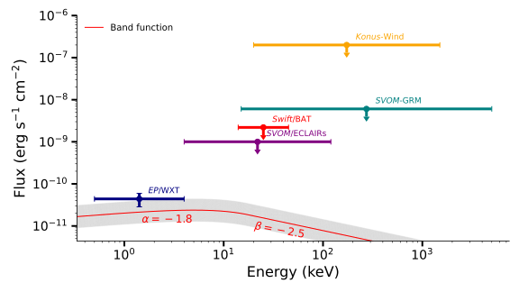
图注：EP260119a的高能谱能量分布。图中给出WXT测量以及ECLAIRs、GRM和BAT的3σ上限；Konus-Wind上限为20—1500 keV、2.944秒时间尺度、典型长暴谱假设下的90%置信峰通量上限。代表性的Band谱与这些观测相容，源系谱峰为33.1⁺⁸·³⁴₋₆·₇₆ keV。
怎么看这张图：软X射线测量与各高能上限共同限定可行谱形，但Band曲线还依赖Amati关系。各上限时窗和置信水平不一致，不能当作同期对称误差谱点；图中的源系谱峰并非直接测量。 定义伽马静默与条件谱推断。
来源与置信度：arXiv HTML；source verified；https://arxiv.org/html/2609.27127v1/SED_he.svg
图6
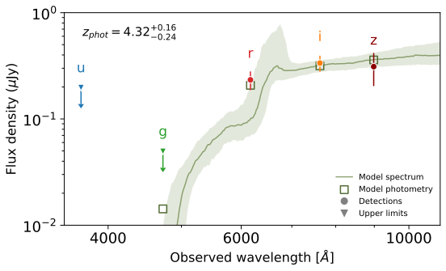
图注：邻近候选宿主的GTC/HiPERCAM测光及Prospector拟合。彩色圆点为r、i、z波段检测，向下三角为u、g波段3σ上限；橄榄色曲线及阴影表示后验中值光谱和1σ范围，空心方块为模型测光。允许红移自由变化时，r与i之间的断裂偏好红移4.32⁺⁰·¹⁶₋₀·₂₄。
怎么看这张图：重点是r带仍有通量，因此这个星系的断裂位置与爆发光谱红移5.47不符。它不能作为已确认宿主，其质量、星形成和位置偏移也不能直接归于爆发环境。 核查宿主关联被否定的证据。
来源与置信度：arXiv HTML；source verified；https://arxiv.org/html/2609.27127v1/EP260119a_host_SED.svg
图7
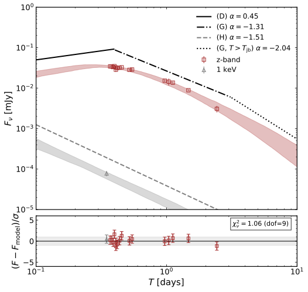
图注：上图：分层介质中均匀喷流模型对EP260119a余辉的拟合。棕色和灰色分别为z波段与1 keV光变，阴影由后验随机采样给出1σ范围；实线、点划线、虚线和点线表示使用最优参数按Beniamini等（2020）得到的时间幂律。下图：相对后验中值模型的归一化残差(F−F模型)/σ及±1σ区域，约化χ²为1.06，自由度9。
怎么看这张图：拟合说明这一动力学方案可行，但单一X射线时点不能解除谱段和微物理退化。对参数解释还需同时读表2与表5的电子能量比例先验—后验矛盾，不能以χ²约一替代可复现性核查。 检验物理余辉拟合与限制。
来源与置信度：arXiv HTML；source verified；https://arxiv.org/html/2609.27127v1/fig_lightcurve_residual_THJ_260511.svg
强相关工作
Liu等2025年EP240315a/GRB240315C（arXiv:2404.16425）是同类高红移软X射线发现的关键比较：该事件伽马信号可在离线分析中恢复，而EP260119a在目前覆盖内仍未检出。因此二者支持软X射线补充触发入口，但不应据此认定其本征prompt谱相同或把未检出直接量化成新种群比例。
Sari、Piran与Narayan 1998及Granot与Sari 2002提供同步余辉谱和闭合关系；Gill与Granot 2018提供本文采用的喷流计算背景。Eichler与Waxman 2005指出加速电子比例与能量、密度、微物理参数的缩放退化，本文明确保留了这一问题。日报的推导借这些已在本文引用的基础说明条件，不把教学公式视为作者新增观测，也不把其他结构喷流工作的可行性等同于本次稀疏数据已充分区分模型。
同一事件 / 同类源线索：
相似工作：
基础理论 / 方法工作：
- https://arxiv.org/abs/astro-ph/9712005
- https://arxiv.org/abs/astro-ph/0108027
- https://arxiv.org/abs/1803.05892
- https://arxiv.org/abs/astro-ph/0502070
相反观点 / 张力线索：
（未提供）
7. Broad-band spectral-timing: simultaneous NICER and HXMT observations reveal an anticorrelation between the softest and hardest X-ray fluxes in MAXI J1820+070
- 来源：arXiv / astro-ph.HE
- 链接：https://arxiv.org/abs/2609.27608
- 作者：Niek Bollemeijer, Phil Uttley, Bei You
- 评分：novelty 9/10，importance 8/10，relevance 9/10，final 9.65/10
- 推荐理由：NICER/HXMT跨0.3至250keV低频反相关直接约束盘冕耦合，复相干与相位包裹须严格解释。
中文题目：MAXI J1820+070最软与最硬X射线反相关：跨0.3—250 keV的盘—冕时谱约束
做了什么：作者把NICER和慧眼HXMT严格同时的光子数据对齐，研究MAXI J1820+070在2018年硬态爆发中从0.3到250 keV的功率、交叉谱相位和相干度。主要结果来自3月22—27日约18.2 ks同时覆盖：在低于约0.02 Hz、对应约50—250秒的变化中，低于1 keV与最高能X射线出现接近正负π的相位差，光变及交叉相关也显示反向变化。将参考能段移到1 keV以上后，这种反相关消失。
反相关开始的硬能量随软参考能量上升而上移，伴随相干度先降至很低、再在最高能处部分恢复。这比简单的“硬光子滞后软光子”包含更多结构。盘种子光子冷却冕、幂律绕支点摆动、热与非热成分混合都可能贡献，但论文未对这些机制做定量联合拟合；特别是低相干度意味着不能用一个固定线性响应或一个传播时间解释全部能段。
为什么重要：只看常用1—30 keV能段，会漏掉盘与高能尾之间的反向耦合。本文将盘主导的软端和冕截止附近的硬端同时纳入，发现平均光谱可以被简单成分描述时，变化却未必由同一线性过程驱动。新约束来自反相关的能量范围、相干度谷及参考能段依赖的组合，尚未唯一确定冕的几何或电子分布。
理论 / 观测 / 仪器方法价值：方法价值在于严格共同时间窗、统一质心修正和全能段两两交叉谱矩阵，而不是只选一个宽参考带。作者检验了NICER遥测饱和及有效探测器数量变化，对HXMT背景和死时间修正噪声水平。可迁移的关键是同时展示相位与相干度，并在低相干条件下报告误差处方的不确定性，避免把看似很大的相位差解释成精确物理时延。
为什么应该关注：盘供给种子光子、冕加热和高能非热尾之间的能量交换，决定如何从X射线推断吸积流及喷流底部。该源为研究热与非热粒子成分提供了时域限制，但本结果止于250 keV，没有测定TeV发射或强子成分。值得关注的是包含光学/红外与更高能尾的同步观测，能否区分多个独立变化驱动与非线性、时变响应；这些属于后续检验而非本文已选定模型。
展开详细解读：文章讲解、背景、理论、重点章节、图表与相关工作
文章详细讲解
科学问题。 硬态黑洞双星的平均X射线常由盘、Compton化和反射拟合，但不同几何及电子分布可以得到相近谱形。研究者问盘最软光子和冕截止以上光子是否跟随同一涨落，还是包含独立、反向或非线性响应。只有把软端与高能端严格同时观测，交叉谱才能回答这一问题。
作者怎么做。 对NICER和HXMT ME、HE事件用相同坐标、DE440星历做质心时间修正，再修正HXMT未自动变换的GTI边界和背景时间。以256秒段、1/512秒采样构造功率与交叉谱；主要精细能谱使用29个能段，在1/256至1/64 Hz平均，轮流以每段为参考。功率采用背景扣除，噪声水平从200 Hz以上估计，以处理死时间影响。
关键结果。 最软参考带0.3—0.4 keV与硬端约70—80 keV以上的相位趋近π，约70 keV处相干度落到谷底，超过100 keV又恢复至约0.2。参考改为2—2.4 keV时，相位基本近零，相干度则在软端与30 keV以上下降。直接光变显示部分软峰对应硬谷，交叉相关在约−20到20秒有宽负谷，中心又叠加短时正峰，支持多时间尺度成分并存。
局限和下一步。 高能背景、低相干度、有限段数和公共参考引起的跨能段协方差使误差估计复杂；论文提供两种相位误差处方，没有完成全矩阵统计拟合。示意平均光谱不报告拟合参数和残差，机制讨论也没有给最佳参数或模型优选。下一步应拟合复交叉谱、功率与平均谱的共同模型，检验能否同时再现相位翻转、相干度谷和参考能段趋势。
关键结果是怎么做出来的
首先明确样本。全文列出六个同时观测时期，总量超过30 ks，但主要新结果集中于第二时期18.2 ks，不能称为贯穿整个硬态均已验证。该时期QPO从约0.037漂移至0.05 Hz，合并功率峰因此展宽；研究的0.004—0.016 Hz位于其下方。最软带缺乏明显基频峰，不应把低频反相关误作QPO相位效应的直接测量。
第二步处理人工变化。高亮源使NICER测量功率单元出现小于1秒的遥测空隙，作者逐单元用适当Poisson抽样填补，并将每次观测保持固定的14—28个有效焦平面模块归一到52个。附录对比显示高于约20 Hz伪功率受影响，本文低频结果没有可见变化。这支持反相关不是该类遥测效应造成，但不等于已模拟全部系统误差。
第三步用多个统计量交叉确认。图2最软与最硬带有π附近相位，图3原光变和平均交叉相关显示反向变化，图4多个高能窄带都趋近同一反相关相位。一个很大纯时延可发生相位缠绕，但多个高能段、宽负相关结构与能量模式共同支持负响应解释；不能只凭单个噪声很大的π点定性。
第四步看两两能段矩阵。图5揭示三个相对较内部相干的区域：低于1 keV、约1—80 keV、约80—200 keV。软硬两端相互部分相干且反相关，中间段却主要同向；相干谷和相位翻转能量随软参考带而变。这是能段混合权重变化的有力约束，但能量区域不必与三个独立空间区域一一对应。
第五步比较解释能力。种子增多冷却冕可抑制最高能通量，但通常也使软幂律响应，因此难解释1 keV以上参考不反相关；单一支点摆动也预期支点两侧较宽能段反向。作者于是讨论热/非热成分或不同驱动组合，却承认盘与非热尾交换能量的机制未知。观测压缩了简单模型空间，没有完成某一具体混合模型的验证。
展开背景、理论、公式、模型和章节导读
背景知识
硬态吸积盘温度低，软X射线包含盘热辐射，热冕将种子光子向高能Compton散射。本文示意采用盘温约0.25 keV、电子温约60 keV的背景量级，截止通常在电子温数倍附近；这些值帮助识别能段贡献，不是本论文重新做精确光谱测量的结果。
Fourier分析按变化时间尺度分解信号，两个能段可以在低频反相关、高频正相关。平均光变看起来杂乱，仍可能在某个频率范围有稳定相位关系；反过来，一个宽时间窗口的相关系数会把多个频率过程混在一起。因此本文同时使用交叉谱和交叉相关函数。
相干度衡量线性可预测部分，值接近1并不要求同相：完全反相关信号也可有相干度1。低相干度可能来自独立成分叠加、非线性或随时间变化的响应，以及测量噪声；扣除Poisson噪声后仍低，不代表必定存在某个特定空间结构。
相位定义在圆上，正π和负π是同一点。将π除以频率得到半周期只是数学换算，不能证明信号传播了半周期。如果真正关系是一个能段增亮使另一个减弱，零延迟的负响应本身就产生π；解释几何距离前必须区分负响应与延迟的正响应。
基础理论 / 方法脉络
盘涨落可通过供质和种子光子两条通道影响冕，前者改变加热，后者改变冷却及谱形。两者的响应时刻、幅度和空间位置不同，可能使某些能段振幅抵消。平均谱成分比例并不等于变化成分比例，微弱平均成分也可能主导某个频段的变化。
线性定常单驱动模型中，每个能段是共同输入经固定传递函数的结果，理想无噪时两段相干度为1；低相干要求放松至少一个条件。多驱动线性模型、单驱动非线性模型和时变传递函数都可能降低它，因而仅凭相干下降无法唯一选择非热尾或喷流底部。
当两个驱动对交叉谱的实部贡献符号相反，随能量变化可以经过近零抵消，再转为负实部。此时相位由零转π、交叉功率及相干度在中间下降，正好提供本文模式的简单教学图像。但其参数要由完整矩阵限制，不能将该图像当作者已经拟合的模型。
纯支点摆动在支点两侧改变通量符号，天然产生反相关；加入截止变化后，高能端的相对变化还会放大。但简单模型通常也影响中间Compton能段，与观测的选择性反相关不符。合理模型需同时解释为何参考能量改变会移动翻转能量，以及为何某些更高频率的正相关成分占优。
公式与推导
1．交叉谱与相位（文中采用的标准定义）。
$X_i$为分段Fourier振幅，平均需在复平面完成，而非直接平均可能跨越正负π的角度。相位正负取决于变换和参考约定；论文图5统一将正值画成硬滞后。
2．原始相干度（附录式2）。
$P_i$为含噪平均功率。相干度取模平方，丢弃响应正负，因此必须配合相位读图；$X_2=-aX_1$时仍可得到1。
3．噪声校正（附录式4—5）。
$n_i$为噪声功率，$K,M$分别为平均频率及段数。校正本身有噪声，弱信号时可能产生不稳定甚至负估计；图中置零的高频点不能读作精确物理零相干。
4．相位不等于传播时间（教学例子）。
第一种关系没有延迟，但第二式形式上给半周期。只有明确响应模型及相位展开后，才可把$\tau_\phi$联系光程或传播时间，本文低频反相关不能直接换算冕尺寸。
5．两个独立驱动的抵消（教学模型）。
假设$u,v$不相关且系数为实数。两项异号并随能量权重变化，$C$过零时相位翻转，功率却不必为零，故相干度出现谷。这说明观测可由混合解释，但没有证明真实驱动正好是两个。
6．截止幂律的微扰（教学补充）。
$A$为归一化，$E_c$为截止能。降温使最后一项为负且在高能更重要，但能否超过增亮归一化项要量化检验；本式不是本文已拟合的响应参数。
7．论文引用的支点关系（式1）。
$g_h,g_s$是加热与种子光度的脉冲响应，$E_s$为种子能量，$\beta=1/6$是采用的黑洞双星近似。它来自线性化且无指数截止的模型，响应比例变动会移动支点；不能凭观测谷底直接代入唯一冕温。
8．误差为何受相干度控制（标准教学近似）。
这是足够平均、单对能段的常见近似，低相干时误差变大。多能段共享参考还需协方差；作者图4以两种处方展示不确定性，不能把每个能段误差条视为互相独立的完整似然。
模型拟合 / 应用方法
本文实际拟合主要涉及噪声水平估计与时谱统计，不是吸积流几何参数反演。图1的tbabs、diskbb、nthcomp、relxillCp只是说明能段成分，使用近同时谱且未展示残差和拟合参数。严格同时要求适用于交叉谱分析，不能将示意谱的时间处理误写成所有产品都完全相同。
低频HXMT背景可变且高于150 keV贡献重要，所以作者扣背景光变；背景模型在数十秒尺度给出，恰与部分关注时间尺度相关。对未来重分析应把背景模型不确定性作为专门注入检验。200 Hz以上常数拟合估噪声处理死时间效应，但它不是对所有低频背景系统误差的联合边缘化。
NICER光变按有效模块数归一化避免跨观测计数尺度变化造成伪相干下降，填补小间隙测试也有针对性。填补值由短GTI高计数状态的均值抽样，属于缺测处理方案；多次抽样和完整窗口模拟有助于量化其影响，但论文展示的是低频结果不见明显差异，不能增加未报告的恢复率。
附录说明高信噪中高相干公式在低相干、低信噪处可能低估误差。公共参考误差处方又可能对强相互相关的硬能段给出过大的点间散布，因此图4同时画通常处方和假设单位相干的下限。两组误差不是两个独立测量，也未提供统一校准的全矩阵置信区域。
真正比较机制需联合平均谱、各能段功率和复交叉谱的实虚部，模拟QPO漂移、低频非平稳性及仪器响应，再检查残差是否同时覆盖所有参考能段。用一个能段对拟合成功不足以解释图5；不同独立驱动与非线性响应仍可能退化，需额外同步光学、红外或更高能信息。这些是检验建议，本文未声称完成。
重点章节 / 结果段落怎么读
-
第2节及附录A、C：先确认主要样本是第二时期18.2 ks，理解GTI质心修正、模块归一化、遥测填补和背景处理为何都可能影响交叉谱。
-
第3.1节图2、3：同时看功率、相位、相干度和交叉相关，区分低频负响应与较高频正相关，不把π当作巨大光行时。
-
第3.2节图4、5：从两个参考带例子读到完整矩阵，跟踪相干谷和翻转能量随参考变化，注意symlog相位刻度及π与−π等价。
-
第4.1—4.3节：逐个问温度变化、支点摆动、混合成分能否解释1 keV以上参考不反相关；作者列出的困难比机制名称更有约束力。
-
附录B：区分原始和本征相干、绝对和相对误差，以及公共参考协方差。最低相干能段是物理上有趣且统计上最需谨慎的部分。
关键图表与解读
图3
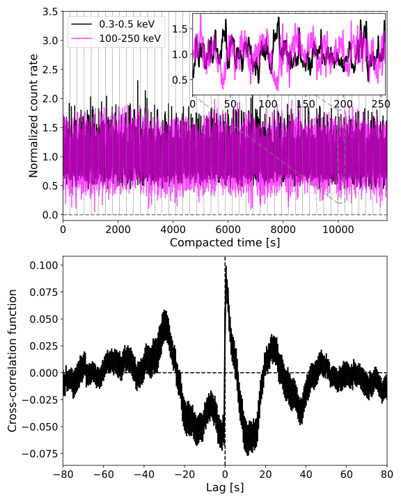
图注：第二时期0.3—0.5与100—250 keV的归一化、去间隔拼接光变，时间分箱0.5秒。竖线标记各段边界，插图显示几个软峰与硬谷对应。下图平均交叉相关有约−20至20秒的宽负谷，零延迟处叠加短时正峰；误差条由bootstrap估计，为1σ。
怎么看这张图：拼接不是连续无缺口曝光。宽负谷与中心正峰提示不同时间尺度响应，不能用单一延迟描述。 时域证据
来源与置信度：arXiv HTML；source verified；https://arxiv.org/html/2609.27608v1/Fig__3.svg
图4
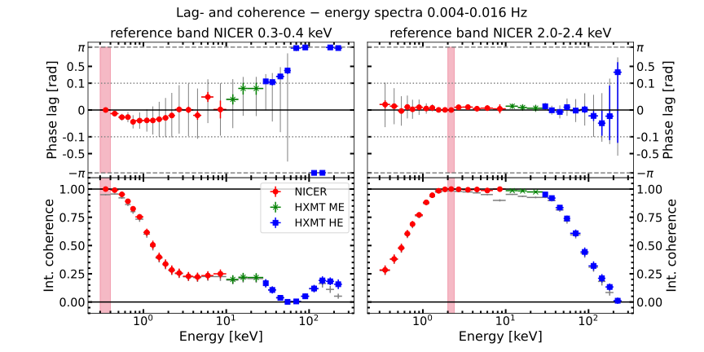
图注：第二时期1/256至1/64 Hz的相位和相干度能谱，左参考0.3—0.4 keV，右参考2—2.4 keV，阴影标参考带。相位轴在±0.1弧度内线性、之外对数。软参考下相位在约60—90 keV翻至π附近，相干度先降后恢复约0.2；较硬参考下相位近零。灰点为原始相干度，相位两种误差条对应附录B的两种估计。
怎么看这张图：π与−π等价。两种误差不是独立数据，低相干使精确相位和机制解释更困难。 参考带依赖
来源与置信度：arXiv HTML；source verified；https://arxiv.org/html/2609.27608v1/Fig__4.svg
图5
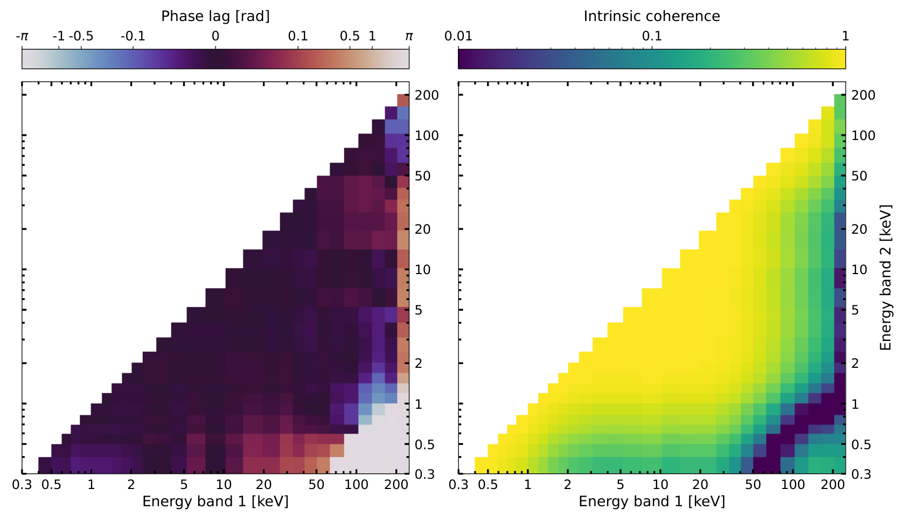
图注：第二时期1/256至1/64 Hz所有能段组合的相位（左）与相干度（右），两轴均为能段。相位使用±0.1弧度以内线性、以外对数刻度，循环色标令π和−π都代表反相关，正号统一代表硬滞后。相干度使用对数刻度。软参考低于1 keV时，翻转及相干谷向更硬能量移动；更硬参考不显示反相关。
怎么看这张图：沿两轴追踪相同参考，不能把颜色当独立空间区。三个内部较相干的能区约束混合驱动，却未唯一识别热/非热成分。 完整跨能段证据
来源与置信度：arXiv HTML；source verified；https://arxiv.org/html/2609.27608v1/Fig__5.png
图6
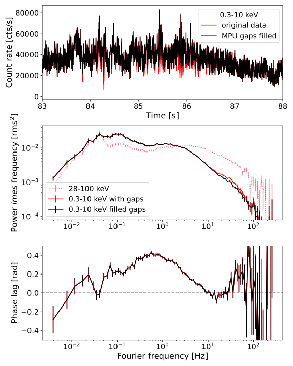
图注：上图为1/512秒采样的0.3—10 keV光变，红色包含遥测饱和伪变化，黑色为逐测量单元填补短空隙后的结果。单元独立开关使总计数不降至零。下图比较第二时期全部数据的功率和相位，修正主要影响约20 Hz以上功率，对本文低频及相位没有可见影响。
怎么看这张图：这是针对遥测问题的有效检验；不代表全部背景与窗口系统误差已量化。 主要仪器伪影排查
来源与置信度：arXiv HTML；source verified；https://arxiv.org/html/2609.27608v1/Fig__C1.svg
强相关工作
Yang等（2025，arXiv:2511.17285）对同源协方差谱已发现高能相干下降及不同时间尺度的Compton温度差异，本文通过严格同时的更软参考带揭示反相关模式。Zdziarski等（2021，arXiv:2101.04482）的高能谱研究支持混合热/非热解释，但不能仅凭其平均谱证据证明本文反向变化一定来自非热电子。
Uttley与Malzac（2025，arXiv:2312.08302）把盘种子与加热涨落传播联系到复杂时延，提供本文支点讨论的物理基础。Vaughan与Nowak（1997，astro-ph/9610257）及Ingram（2019，arXiv:1909.01385）则给相干度和交叉谱误差框架；本文展示这些近似在低相干、公共参考情形中的限制，提示未来模型应直接使用复交叉谱及其协方差。
同一事件 / 同类源线索：
（未提供）
相似工作：
（未提供）
基础理论 / 方法工作：
- https://arxiv.org/abs/2312.08302
- https://arxiv.org/abs/astro-ph/9610257
- https://arxiv.org/abs/1909.01385
相反观点 / 张力线索：
（未提供）
8. Supernova Gamma-Ray Echo as an Astrophysical Near Detector for Galactic Neutrino Propagation
- 来源：arXiv / astro-ph.HE
- 链接：https://arxiv.org/abs/2609.26908
- 作者：Garv Chauhan, Yago Porto
- 评分：novelty 9/10，importance 8/10，relevance 9/10，final 9.65/10
- 推荐理由：511keV超新星回声作为近端归一化测试中微子传播，概念新颖但近距离探测条件与包层模型关键。
中文题目：用超新星511 keV回声作中微子近探测器：新物理检验受制于光子逃逸标定
做了什么：作者提出把超新星包层中产生的511 keV湮没线回声，作为源端电子反中微子总发射量的独立标尺。中微子穿过富氢表层时可逆β衰变产生正电子，正电子热化后湮没发光；地球中微子探测器则记录经过银河传播后的存活粒子。两种信号具有相同的逆β衰变能量权重，适当归一化后的比值可消掉距离和源总量，从而识别只有总通量下降、没有明显谱形变化的传播效应。
以0.222 kpc处类似参宿四的20太阳质量前身星、AMEGO类3000平方厘米有效面积和JUNO示例响应计算，作者预期约70.7个回声光子与约1370万个逆β衰变事件。要按其近似误差公式把完全平均的伪Dirac振荡所致二分之一亏损与标准预期区分到3σ，回声归一化需标定到约30.7%。但当前光子逃逸处方之间仍相差四倍，足以吞没待测效应。因此本文给出的是有条件的实验设计目标，尚不能宣布现有建模已经能检验该新物理。
为什么重要：极近超新星会提供大量中微子，但再多计数也无法自动区分“源本来较暗”和“传播途中损失一半”。本文的价值是找到一个由同一类中微子在源附近产生的电磁参照，把绝对源模型问题转成包层回声标定问题。这个转化有实质方法意义，不过它没有消灭系统误差，而是把最关键的不确定性集中到可明确计算和验证的光子产生、逃逸与包层组成上。
理论 / 观测 / 仪器方法价值：可借鉴之处是构造共享同一能量权重的两个观测量，使未知谱和距离在比值中消去；若权重不同，就不能声称模型无关。实际应用必须把地球端效率、阈值和能量响应匹配回声的逆β权重，同时建模511 keV背景与包层光子转移。该思路也适用于中微子衰变或暗物质散射的通量变化，但一个总量比值不能区分这些机制，需要能谱、时间和其他探测道提供额外信息。
为什么应该关注：这是MeV伽马与MeV超新星中微子的跨信使标定，不是TeV切伦科夫望远镜直接测511 keV。高能研究者值得关注其如何处理源端归一化退化，以及一个可观测参照怎样扩展谱形搜索失效后的参数区间。下一步最具体的工作是目标星包层转移计算、真实MeV仪器背景和超近中微子爆发的堆积响应，而不是单纯增加理想探测器事件数。
展开详细解读：文章讲解、背景、理论、重点章节、图表与相关工作
文章详细讲解
科学问题。 某些新物理在银河尺度传播后把活跃中微子转成不可见成分。如果振荡在探测器能量分辨内完全平均，观测谱仅整体减半，形状仍像普通超新星；对源发射量的理论不确定性可完全吸收这种亏损。作者要解决的是这种归一化退化，而不是重新寻找普通三味振荡。问题的关键变成能否在银河传播发生前，以另一种信使测量相同的表面电子反中微子通量。
作者怎么做。 电子反中微子在恒星富氢包层与自由质子发生逆β衰变，产生的正电子热化湮没，近表面可逃逸的511 keV光子形成延迟回声。作者把可逃逸表层近似为康普顿光深约一的区域，定义回声标定系数，再与JUNO类逆β计数构造近远比值。采用一组Garching超新星谱、完全味均分的表面基准以及未来软MeV有效面积，计算计数、背景和标定精度需求。
关键结果。 对共同伪Dirac质量劈裂，存活因子为传播相位余弦平方；完全平均后等于二分之一。图1显示中等劈裂可产生可分辨谱谷，而更大劈裂约$2\times10^{-15}\,\mathrm{eV^2}$以上在所用JUNO响应和0.2 MeV分箱中基本只剩半通量。图2说明即使地球端计数巨大，回声光子与标定仍控制灵敏度：20太阳质量示例约70.7光子时，3σ目标要求回声系数相对误差不超过30.7%；9太阳质量示例约29.7光子时要求约27.1%。
局限和下一步。 当前逃逸因子采用二分之一，而旧处方为八分之一，四倍差异不能当成已经达到30%标定的误差条。模拟背景只纳入所选天区的银河511 keV线，未纳入具体仪器和连续谱背景；地球端82.2%效率在极高计数率时也需要专门堆积模拟。还要检查源的大尺度各向异性，因回声平均采样与直达中微子的视线采样未必相同。只有这些条件被验证，近远亏损才可能可靠归因于传播。
关键结果是怎么做出来的
第一步先界定近探测器测量的是什么。回声不是直接给出所有味中微子总能量，而是与表面电子反中微子、按逆β截面加权的数通量相联系。星内已经发生的味转换被包含在表面谱中；因此方法可消去共同的星内转换未知量，但不能跳过不同味权重和各向异性条件。511 keV线的延迟约为恒星半径除以光速，时间积分应覆盖回声窗口而不是只取短中微子爆发窗口。
第二步把光子逃逸转成有效靶柱。康普顿截面给出可见表层电子柱，乘自由质子与电子数比得到逆β靶柱，再乘每次湮没平均线光子数和向外逃逸比例。采用$Y_p/Y_e\simeq0.822$、线光子数1.74及511 keV康普顿截面，作者得到$C_\gamma=2.49\times10^{24}\,\mathrm{cm^{-2}}$。系数的单位是柱密度，不能把它叫作无量纲效率；这一步承载主要的恒星物理不确定性。
第三步检验谱形搜索为何失效。用SFHo超新星模型和JUNO高斯能量响应，$10^{-18}\,\mathrm{eV^2}$示例仅产生平滑弱亏损，$5\times10^{-18}$出现明显谱谷，较大劈裂则被能量分辨与分箱平均。图1并没有给出各劈裂的正式排除置信区间，而是展示三种可辨识性区间。所谓约$10^{-18}$灵敏度起始尺度来自相位数量级条件，不是一次完整似然扫描的边界。
第四步计算统计瓶颈。20太阳质量基准的地球端约$1.37\times10^7$事件使泊松相对方差约$7\times10^{-8}$，几乎可忽略；回声仅70.7光子，其计数项约0.0144。采用3度天区、参宿四半径764太阳半径和3000平方厘米有效面积，银河线背景约1.28个计数。这样的低背景只适用于作者选定的背景模型和窗口，不能直接变成未来仪器总背景承诺。
第五步把系统误差加入。有效面积假定5%相对误差，与回声系数误差按不相关方式合并，给出2σ、3σ精度目标。随着光子数增加，3σ所允许的回声系数误差渐近约33%，20太阳质量基准已经接近这个极限；因此面积再大也不能替代系数标定。这里的σ来自误差传播近似，不是包括低计数、背景估计和模型选择的全流程发现概率。
展开背景、理论、公式、模型和章节导读
背景知识
核心坍缩超新星释放的大部分能量由中微子带走，但不同前身星、核物质状态方程和味转换方案产生的电子反中微子谱并不完全相同。下一次银河事件可有很高统计量，这对于研究时间和谱特征很有利；若要解释一个没有谱特征的整体亏损，却必须知道原本应该有多少粒子。统计误差和源模型误差解决的是不同问题。
地面振荡实验常用近、远探测器比值消除反应堆源强等共同误差。天体物理无法在恒星旁真正部署仪器，但包层中的粒子反应可把源端通量转写成另一种信号。这里“近”指产生信息的位置接近源，光子本身仍传播到地球后才被望远镜观测。它不是直接在源旁测量，也不意味着不存在电磁转移误差。
511 keV是静止电子与正电子湮没的特征能量。超新星包层的逆β反应可产生正电子，但只有足够靠近表面的线光子才能避免康普顿散射而保留窄线，内部产生的光子不能简单全部相加。包层自由氢丰度、电离与正电子湮没路径决定每个入射中微子的有效线产额；这解释为什么精确测中微子总数仍需天体标定。
伪Dirac情形让每个活跃态与几乎等质量的惰性伴侣混合，极小质量平方差对应很长振荡长度。传播相位若在能量分辨内缓慢变化，可见谱谷；若变化很快，余弦平方平均为二分之一。此时形状与标准谱近似相同，所以近远比值提供的是谱形之外的归一化信息。本文假设三个伴侣劈裂相同，不能不加检验推广到所有劈裂和混合结构。
基础理论 / 方法脉络
关键抵消源于两次逆β反应。包层和地球端都用自由质子把电子反中微子转换成正电子，因此能量权重中包含同一个逆β截面。如果远探测器效率可视为常数或经重加权校正，二者共享同一个谱积分；不需要知道谱归一化即可求传播平均存活因子。若效率随能量明显变化而未校正，公共谱积分不再相同，源模型依赖会重新进入。
回声系数把包层复杂性压缩成一个可标定参数，表层近似则用康普顿光深一给出可见柱密度。这种近似解释了为什么产额不直接正比于整颗恒星质量，却忽略了斜出射路径、散射后光子是否进入能窗以及更真实的几何。当前四倍归一化分歧正说明简化的逃逸概率不能代替光子蒙特卡罗转移。
近远比值消掉共同的几何稀释$D^{-2}$，但实验能力仍依赖距离：越远，两种计数都减少，回声更难测；振荡相位又正比于传播长度。于是“估计量不依赖距离”和“灵敏度不依赖距离”并不等价。约1 kpc内的适用范围是针对未来MeV回声探测的预期，不是任意银河超新星均可实施的方案。
观测到亏损时，比值本身只测逆β加权的传播效应。完全平均伪Dirac振荡、不可见衰变和某些暗物质散射都能降低它，而可见衰变还可能提高电子反中微子分量。要解释机制需要结合谱形、时序及不同味探测器。源各向异性也可能制造近远差异，因此把星内转换共同吸收进表面谱，不等于一并消去了所有天体物理系统误差。
公式与推导
从原文表层近似开始，$\sigma_C$为511 keV康普顿截面，$Y_p,Y_e$分别为每重子自由质子和电子数。光深约一给出：
前两项单位为每平方厘米，最后为无量纲反应概率。再乘平均线光子数$\eta_\gamma$与向外一半的近似逃逸因子，得到原文式(2)：
这一步把源端微观反应转换成电磁标尺；二分之一只是所选表层处方，旧八分之一处方给出的四倍差异必须留在误差讨论中。
定义教学简写$Q=\int dE\,dt\,\sigma_{\rm IBD}(E)\Phi^{\rm surf}_{\bar\nu_e}(E,t)$，由原文式(1)(3)有：
$\Phi^{\rm surf}$是单位时间、单位能量的表面发射粒子数，未含地球处几何稀释；$A_{\rm eff}$是面积，$N_p$是探测器自由质子数，$\varepsilon$是效率，$S$是额外传播因子。
原文式(6)的归一化比值随即为：
等式清楚展示距离和共同源总量如何抵消；$S$为常数时$\kappa=S$，否则只给一个加权平均，不是恢复完整函数$S(E)$。
原文共同劈裂的伪Dirac示例在自然单位$\hbar=c=1$下写为：
最后是相位数量级标度；实际计算必须把kpc、MeV换为相容自然单位。相位达到一不等于完全平均，后者还取决于仪器能量响应与分箱，本文示例约在$2\times10^{-15}\,\mathrm{eV^2}$以上达到几百分比相容。
原文式(7)(8)以误差传播近似给出：
这假定系统项不相关，背景计数项为所用近似；如果背景由有限旁区或旁时测量估计，还需加入相应不确定性。不能将此式自动理解为完整的低计数发现似然。
舍弃极小的远端计数项，令半通量与标准值相差$n$倍局部误差，原文式(11)化为：
代入$N_\gamma=70.7,N_b=1.28,\sigma_A/A=0.05,n=3$，教学复算得：
这复现30.7%的设计指标，并说明不能用回声计数的平方根误差代替总误差。若$N_\gamma$无限增大，允许值也只接近$\sqrt{1/9-0.05^2}\simeq0.330$，故控制光子逃逸标定比单纯扩大面积更关键。
模型拟合 / 应用方法
这是灵敏度估计而不是观测拟合。超新星输入采用Garching的SFHo模型，基准最终重子中子星质量1.93太阳质量；星表电子反中微子谱以完全味均分构造。作者强调比值推导不依赖这一具体均分选择，但绝对事件数、谱谷位置和回声可探测性仍依赖输入谱。读者应把“比值抵消”与“图上所有数字都模型无关”严格分开。
JUNO响应用$3\%/\sqrt{E_{\rm vis}/\mathrm{MeV}}$高斯分辨率、0.2 MeV重建分箱、$1.44\times10^{33}$靶质子和82.2%效率。作者主动指出近到参宿四距离时事件堆积可能改变实际效率，不能把常规选择比例直接当作超近爆发的已验证响应。较差分辨或粗分箱会更早抹平谱振荡，从而增加近远比值价值，但也可能带来额外重建系统误差。
MeV端采用3000平方厘米代表性面积和5%面积标定误差，不是某台已运行仪器在真实事件时刻的承诺。银河背景积分在源周3度半径内，回声持续时间用恒星光行时估计，得到约1.28计数；连续谱和仪器背景尚未算入。实际应使用方向、时间和能窗相关的响应及背景拟合，确认这些未计入项是否改变70个光子级信号的有效信息量。
统计边界采用独立误差二次合成和近似$n\sigma$差异条件，未展示联合Poisson似然、非高斯包层系统先验或不同物理模型的发现率。当前四倍逃逸处方差异应作为待解决的模型不确定性，不能随意压缩成高斯30%先验。可以先以专门光子转移校准$C_\gamma$，再做背景、效率、各向异性和前身星参数的联合模拟；只有那样才能把本文设计目标转成可审查的发现灵敏度。
重点章节 / 结果段落怎么读
- 先读“Gamma-ray echo as a near detector”与脚注1：明确回声测表面电子反中微子而非总中微子，并把四倍逃逸归一化分歧记在主结论旁。
- “Far-detector signal”到式(6)是方法核心：跟踪两个相同逆β权重，检查效率假定，理解抵消什么以及未抵消什么。
- “Pseudo-Dirac benchmark”与图1说明相位起始、可分辨谱谷、实际平均三个不同区域；不要把约$10^{-18}$与约$2\times10^{-15}$两个尺度混成同一灵敏度门槛。
- 式(7)—(12)与图2给实验需求：亲自代入光子数和系统项复算30.7%，并检查未计入的仪器背景与超近事件堆积。
- 讨论段解释衰变、暗物质散射和可见衰变如何改变比值；把它们理解为机制推广，本文并未用真实超新星数据给出这些参数的新限制。
关键图表与解读
图1
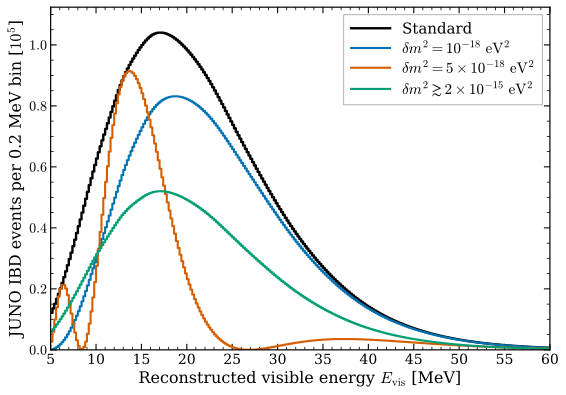
图注：距离0.222 kpc的银河超新星在JUNO中所选逆β衰变事件的重建可见能谱，假设恒星表面完全味均分。归一化采用自由质子数1.44×10³³、逆β探测效率0.822。黑色实线直方图为标准三中微子预期，蓝色和橙色分别为质量平方劈裂10⁻¹⁸和5×10⁻¹⁸ eV²的伪Dirac情形。绿色实线为完全平均极限S=1/2；在本参宿四/JUNO设置中，劈裂约大于2×10⁻¹⁵ eV²时与该极限在几百分比内一致。横轴为重建可见能量，能箱宽0.2 MeV。
怎么看这张图：先辨认橙色谱谷，再比较绿色与黑色是否主要只是整体缩放。图示说明谱形何时失去辨识力，未给真实数据的排除区间；百万级计数也不能独自消除源端归一化退化。 展示有限分辨下的谱形窗口与平均极限。
来源与置信度：arXiv HTML；source verified；https://arxiv.org/html/2609.26908v1/juno_pd_final_figure_equipartition_222pc.svg
图2
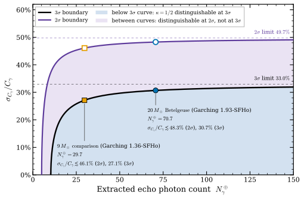
图注：近远比较中区分完全平均伪Dirac亏损κ=1/2所需的条件。黑线、紫线分别是式(11)给出的3σ和2σ边界，取背景计数1.28及有效面积相对误差5%。黑线下方对应3σ灵敏度，黑线与紫线之间对应2σ。蓝色圆点和橙色方块分别标记20太阳质量参宿四基准与9太阳质量对照模型，水平虚线表示各自的大统计量极限。
怎么看这张图：纵向标定误差必须同时足够小，横向增加回声光子数才有效；曲线平台说明系统误差最终占优。这里的边界采用近似误差传播，当前四倍逃逸模型差异尚未满足图中需求，不能解释为已具备3σ发现能力。 把乐观预报与真实标定缺口分开。
来源与置信度：arXiv HTML；source verified；https://arxiv.org/html/2609.26908v1/juno_pd_kappa_requirement_final.svg
强相关工作
本文直接继承Lu与Qian 2007年关于中微子诱发超新星伽马辐射，以及Lunardini等2024年关于511 keV回声的计算；前后工作的逃逸归一化差异正构成本次标定问题。伴随论文Chauhan、Lunardini与Porto 2026（arXiv:2609.22806）讨论源各向异性和长基线效应，目标是约10%—15%的近远偏离，比本文二分之一亏损要求更紧的标定。二者不能互相替代，本文也没有声称解决了那种精度的天体系统误差。
伪Dirac概念与谱形检验可沿Wolfenstein 1981、de Gouvêa等2009及Martinez-Soler等2022关于SN1987A的研究追溯。本文增加的是平均振荡区的源端标尺，并非推翻已有有限谱形窗口；与IceCube高能天体中微子工作使用的能量、距离和系统误差都不同。JUNO响应与SNOwGLoBES截面提供实际探测器连接，但超近爆发需另验堆积，不能把引用设计参数视为本文已完成的端到端验证。
同一事件 / 同类源线索：
相似工作：
- https://arxiv.org/abs/2609.22806
- https://arxiv.org/abs/2312.13197
- https://arxiv.org/abs/0709.0501
- https://arxiv.org/abs/2105.12736
基础理论 / 方法工作：
相反观点 / 张力线索：
（未提供）
9. Anisotropy and energy distribution of leptons and photons in radiative relativistic Alfvénic turbulence
- 来源：arXiv / astro-ph.HE
- 链接：https://arxiv.org/abs/2609.27995
- 作者：Peng Liu, Xiaochun Wei, Zheng Gong
- 评分：novelty 9/10，importance 8/10，relevance 9/10，final 9.65/10
- 推荐理由：辐射Alfven湍流俯仰角能量耦合经PIC验证，直接承接偏振和粒子加速基础缺口。
中文题目：辐射相对论湍流中的俯仰角：平行加速、曲率漂移与冷却如何共同塑造谱
做了什么：作者研究强导引磁场下、初始磁扰动仅为背景场十分之一的衰减Alfvén湍流，用二维电子—正电子辐射粒子网格模拟跟踪加速、辐射及粒子相对局部磁场的俯仰角。弱冷却时，低能电子以近恒定垂直动量沿场加速，平均俯仰角近随能量反比减小；较高能电子的曲率漂移增强，角度又上升，形成一个转折最小值。强冷却改变垂直动量，低能角度标度趋近能量的负二分之一次方，中能电子谱也变硬。
论文把这些角度标度映射成光子能量—方向关系，发现强冷却近似下转折能量显式磁场依赖可抵消，高能辐射还与重联电流片附近涡结构空间相关。结果是特定二维对等离子体、弱扰动与局部漂移系下的标度检验，不是对PWN、GRB或AGN的完整观测拟合。补充材料含参数和额外稳健性检验，但所存HTML未包含该正文，引用DOI本次未能访问，因此其详细验证不计入已核查证据。
为什么重要：同步辐射损失依赖粒子与磁场的夹角，仅知道电子能谱还不足以预测辐射和冷却。沿场加速可同时提高能量并缩小俯仰角，削弱辐射损失；漂移和冷却又在不同能量段改变这一关系。本文尝试把角度、能量和辐射统一成可检验的分段标度，为解释硬谱提供微观机制，但“普适”应限定在所测物理条件和近似内。
理论 / 观测 / 仪器方法价值：可复用方法是同时保存局部场系粒子轨迹、能谱及按能量条件化的角分布，再检查交会能量对场强和注入尺度的变化。它比只拟合一个总能谱指数更能辨认平行加速和横向漂移。迁移到真实源需要恢复三维拓扑、粒子组分、注入与逃逸、观察系变换及偏振输运；局部角度统计不能直接当作远场观测束射或偏振度。
为什么应该关注：高能伽马模型常用各向同性电子近似，此工作指出小俯仰角可能显著改变同步冷却，从而影响对电子最高能量和同步/逆Compton竞争的理解。但论文模拟场为约$10^{10}$及$10^{12}$ G，不能直接等同PWN或AGN的大尺度环境。它没有计算具体TeV谱、中微子产额或观测圆偏振，相关天体现象是作者提出的应用方向而非已匹配结果。
展开详细解读：文章讲解、背景、理论、重点章节、图表与相关工作
文章详细讲解
科学问题。 粒子在磁湍流中变得各向异性后，加速和冷却不再只由能量决定。弱扰动强导引场可能维持较长时间的沿场运动，与大振幅湍流的近各向同性高能尾不同。作者寻找低能收缩、高能展开及冷却修正的物理标度，并问这些标度是否能预测角分布最小处的能量。
作者怎么做。 使用EPOCH二维衰减湍流，初始Maxwell—Jüttner温度$\Theta_0=0.3$，基准涨落磁化度50，扰动/导引场比0.1。基准边长100个作者定义的$\lambda_{e0}=2\pi c/\omega_{pe}$，每$\lambda_{e0}$划40格；主文报告还扫磁化度与盒尺度。俯仰角和电子能量在局部$\boldsymbol E\times\boldsymbol B$系测量，避免将实验室漂移混入回旋辐射诊断。
关键结果。 弱冷却低能相对论段角度指数约−1，高能漂移段约5/6；强冷却低能指数随时间趋近−1/2，中能谱的带符号斜率从约−1变为−0.6。角度转折的场强/尺度趋势与模拟点相符，光子角度可通过同步特征能映射。高能光子集中在电流片及涡附近是空间统计相关，尚不能据此宣称涡旋独立承担全部粒子加速。
局限和下一步。 模型使用临界平衡级联和曲率漂移闭合，二维设置没有真实沿导引场空间变化，对三维适用性需专门检验。强冷却最高电子能修正指数约1/6直接取自模拟，电子谱与角指数的分段关系亦是提出的描述式。没有做天体尺度输运、辐射转移或Stokes计算，因此对硬射电谱、GRB快变和圆偏振只能保持机制候选等级。
关键结果是怎么做出来的
先看加速位置和方向。图1的高能电子集中于电流片附近，动能流功率谱主要由导引场方向速度分量构成；十条代表高能轨迹的平行动量近线性增长、垂直动量早期近恒定。平行电场归一化取约0.05时，作者得到与轨迹相近的增长线。轨迹样本用于机制说明，而非所有粒子具有完全相同的确定加速率。
再构造弱冷却角度关系。以约600万子样本粒子统计平均$\sin\theta$，低能段随能量反比降落，高能曲率漂移则使它回升；最高能角仍低于各向同性平均$\pi/4$。最热初始粒子之外、接近$\gamma=1$的热极限不服从发散的反比式，原文也说明其仍近各向同性，所以该标度不能延伸到静止能附近。
第三步加冷却。弱例最大量子参数约0.004，强例约0.2；强场下分布整体向低能移动，低能角度斜率随时间向−1/2演化，中间约20—80电子洛伦兹因子仍受漂移影响。导出冷却式时假定能量变化相对慢、损失与供能近平衡，而单粒子所列方程未显式含该供能项；应把它理解为条件闭合，不是任意纯冷却粒子的严格解。
第四步检验谱与角的联动。图3显示中能谱硬化，但低端和高能尾斜率变化较小。式(6)给带符号谱斜率$p$与角斜率$q$的两段关系，最高能尾比预测略陡，作者归因于未纳入的辐射修正。这个关系在$q=0$两侧不连续，主文未给完整动理学推导和误差，不能当全能段连续普适定律。
第五步检查光子。图4将全部光子用于能量—角度曲线，把末端一小时间窗用于空间图；两者统计对象不同。弱、强冷却末时刻最高光子能分别约$4m_ec^2$和$30m_ec^2$，即约2与15 MeV，不是观测到的源系截止。弱例涡附近光子沿场双向集中、外围偏横向；强例整体更沿场。还需三维视线与逃逸处理才能将这些局部统计变成可观测光变。
展开背景、理论、公式、模型和章节导读
背景知识
俯仰角是粒子动量与当地磁场夹角，决定横向Lorentz力及同步辐射功率。各向同性分布的平均$\sin\theta$为$\pi/4$，但均值相同不保证完整分布各向同性；特别是两束沿场正反向运动可在总动量上抵消，却仍具有强角各向异性。
重联电场能沿局部磁场向粒子做功，早期主要增大平行动量。若垂直动量不随之增长，角度自然缩小，这无需先引入强散射各向同性。随着能量增大，粒子沿弯曲场线运动产生曲率漂移，横向贡献上升，形成两类动力学竞争。
辐射反作用使粒子损失能动量，量子参数$\chi_e$衡量粒子所感场与量子临界尺度关系。本文强冷却值约0.2，仍把对产生忽略，同时PIC处理离散光子发射；不能把“辐射强”理解为已模拟任意强量子场或完整对级联。用于解析标度的连续反作用近似也有自己的适用范围。
二维对等离子体没有离子能量储库，也缺少沿导引场的三维结构，衰减湍流又不同于持续驱动稳态。天体真实发射区可能同时有注入、逃逸、反Compton和输运，这些改变能谱和角分布。本文可为微观闭合提供线索，但天体应用要先匹配无量纲参数和时间尺度，而不是照搬模拟的高斯磁场值。
基础理论 / 方法脉络
低能相对论段的角度收缩来自动量分解，非相对论极限必须使用完整$p=m_ec\sqrt{\gamma^2-1}$并保证$\sin\theta\leq1$。高能段曲率漂移则引入场线曲率半径，作者用临界平衡与Kolmogorov标度把它关联到注入尺度和相对论惯性尺度；这一步是模型假设，并非单粒子力学必然推出的所有湍流性质。
强冷却改变垂直动量演化，使低能角度随时间下降并呈不同能量指数。转折来自两条近似曲线交会，只有在相应能量段确实重叠且常数变化缓慢时才可识别。交会能量是角度最小处，不等同电子谱截止、同步峰或观测谱折点。
从电子到光子的映射使用同步特征能$\varepsilon\propto B\gamma^2\sin\theta$和沿粒子运动窄束发射近似。若角度本身随能量变化，光子能不再纯$\gamma^2$标度，角斜率也要重新换变量。宽同步核、散射与视线积分可能抹平局部幂律，不能用一个典型光子能替代完整谱生成。
作者的$p$是对数导数，下降谱对应负$p$；通常天文记号$N\propto\gamma^{-s}$则$s=-p$。结尾提到PWN所需小于约1.6的电子指数沿用正指数口径，必须转换后比较。角度与能谱关联可以改变同步硬度，但在未计算Stokes和电子/正电子抵消前，不应宣称已得到高圆偏振幅度。
公式与推导
先统一磁化度和长度定义：
导引场为涨落十倍，所以基准背景磁化度为5000而非50。作者把$\lambda_{e0}$也称皮肤深度，但它比常用$d_{e0}$大$2\pi$，比较盒尺度与耗散尺度时必须保留这一区别。
早期$p_\perp=p_c$近常数时，原文式(1)为：
最后一步要求$\gamma\gg1$且尚未受强漂移或冷却改变，$\mathcal C$由注入横向动量设定。不能在$\gamma\to1$时继续用发散表达，热粒子须回到有限角分布。
曲率漂移和尺度闭合给：
$\rho_0$采用原文回旋尺度约定，关键场强依赖为$B^{-1}$；原文混合Gaussian和无$c$的回旋写法，实际量纲须与代码单位统一。指数$2-1-1/6=5/6$来自曲率漂移、总动量和相对论惯性尺度三步，不是经验随意拟合。
反作用主导横向演化可写成：
积分时假定$\gamma$慢变，忽略初始横向动量项的晚时极限得到标度；不同$q$段不能用同一常数覆盖。正文式(3)系数与后文$\mathcal B$定义存在$\sqrt2$级归一化差别，因此这里保留稳健幂次，不声称精确前因子已复算。
两段交会给式(4)(5)的主依赖：
省略基本常数但不省略独立物理变量。强冷却显式$B$抵消仅在固定时间、密度尺度及相同闭合时成立，若真实源这些量与场相关，就不能说转折能完全与磁场无关。
同步能量映射一般式为：
因此$q=-1,5/6,-1/2$分别给光子角指数$-1,5/17,-1/3$。作者对最高能以模拟启发的$q\simeq1/6$修正得到$1/13$；这是半经验步骤，不能全部称无参数第一性原理预测。
对应修正高能段的光子转折依赖为：
其余密度、注入常数和时刻固定，才可用图4参数扫描比较这两个幂次。此处转折是平均角度曲线最小值，模拟最高光子能约2和15 MeV又是另一个量，均不是天体观测截止。
最后区分提出的谱关系与推导定律，原文式(6)为：
$q=-1$得$p=-1$，$q=-1/2$得$p=-0.5$，与强冷却中段约−0.6量级相近。$q=0$值0.5而右极限−4不连续，故不应跨接两段作统一连续分布；本文未展示完整误差或动理学推导，需保留描述性地位。
模型拟合 / 应用方法
模拟比较采用固定弱扰动比、热对等离子体及二维衰减盒。主文给基准磁化度50，另列2、4.5、8、18、32、112.5及不同盒尺度；完整每案例配置、数值收敛和大振幅拓展在补充材料。本次仅取得主文，补充DOI访问失败，不能把列出参数范围当作已逐一核查全部案例。
图2/4以理论斜率虚线和模拟转折点比较，主文没有提供回归置信区间、跨随机种子的方差或残差统计。可以说趋势与所示点相符，不应升级为某置信水平证明普适指数。场强、盒尺度与密度/磁化度保持方式对独立变量解释很重要，需要补充配置确认后才能严格外推。
局部漂移系去除垂直电场相关运动，平行非理想电场仍可做功。把该系角度当实验室或天体观察系角度会混入相对论像差；谱、方向及空间位置需统一变换。主文约十条代表粒子轨迹、六百万角度统计和十万光子空间样本对应不同用途，不能用代表轨迹断言全部粒子路径一致。
最强辐射例$\chi_{e,\max}\sim0.2$以忽略对产生处理，连续反作用推导和离散发射模拟并非所有量完全相同。最高能$q\sim1/6$是据模拟校正，电子谱关系也没有主文一阶原理证明，且$q=0$拼接不连续。需要扩大参数、三维与谱—角联合残差检验，而不是只检验几条幂律线看起来平行。
天体应用没有观测似然或Stokes输出。对称电子—正电子组成中，圆偏振还受电荷符号、分布差异和视线抵消影响；本文没有量化这些项，不能因角各向异性就保证高圆偏振。强冷却与高能涡相关亦不足以预测秒级光变，需加入源尺度、Doppler因子与光行时分布。
重点章节 / 结果段落怎么读
- 主文模拟设置及图1先固定扰动比、两种磁化度和$\lambda_{e0}=2\pi d_{e0}$，明确二维衰减盒和轨迹样本用途。
- 式(1)—(3)与图2按平行加速、曲率漂移、反作用三步读俯仰角，避免把分段标度延伸到热极限。
- 式(4)—(6)与图3区分交会能、带符号谱指数和分段描述式，尤其保留$q=0$不连续及最高能辐射修正。
- 式(7)—(12)和图4用$q/(2+q)$检查光子角斜率，区分拟取的$q=1/6$与直接推导指数，以及全部光子与短时间窗空间图。
- 结论中的PWN、GRB偏振与快变均为应用展望；补充材料的额外稳健性与参数配置尚未读取，不能当作本次已验收证据。
关键图表与解读
图2
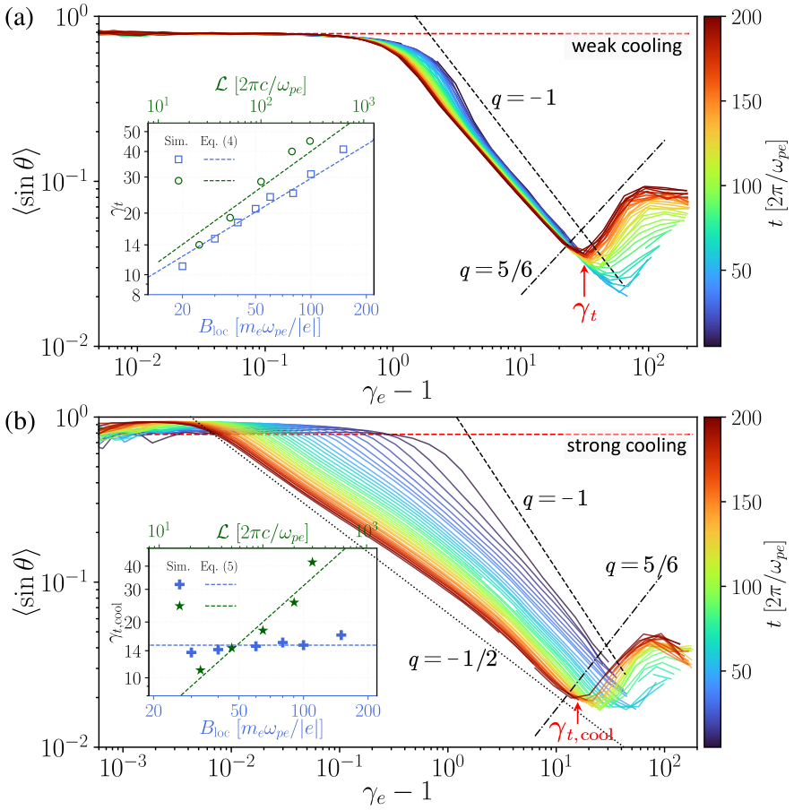
图注：磁扰动磁化度50时，弱冷却(a)与强冷却(b)情形的电子平均俯仰角随时间演化。黑虚线、点划线和点线分别为式(1)、(2)、(3)预测的q=−1、5/6、−1/2标度，红水平线是各向同性分布的平均sinθ=π/4。插图给t=400π/ωpe时电子转折能对局部磁场（蓝）和注入尺度（绿）的依赖，虚线为式(4)、(5)预测。
怎么看这张图：按能量段区分收缩与展开，再看强冷却随时间趋近−1/2。转折是平均角最小处，不是电子截止；均值低于各向同性参考值也不能代替完整角分布。 核心电子角度标度。
来源与置信度：arXiv HTML；source verified；https://arxiv.org/html/2609.27995v1/figure_2.png
图3
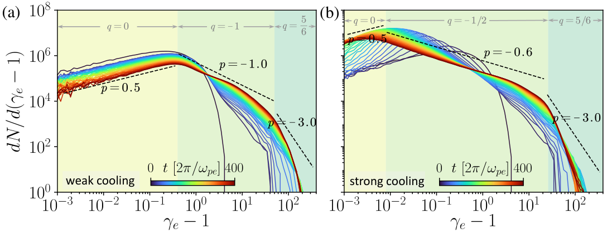
图注：磁扰动磁化度50时，弱冷却(a)与强冷却(b)中的电子能谱随时间变化。三个阴影区对应图2不同俯仰角指数q的能量范围，虚线表示相应谱幂律指数p；这些指数与式(6)预测大致相符。
怎么看这张图：注意本文p是带符号导数，下降谱为负；中能从约−1到−0.6的硬化不能与常用正谱指数直接比较。式(6)是分段描述关系，q=0处不连续。 角度与能谱的联系及边界。
来源与置信度：arXiv HTML；source verified；https://arxiv.org/html/2609.27995v1/figure_3.png
图4
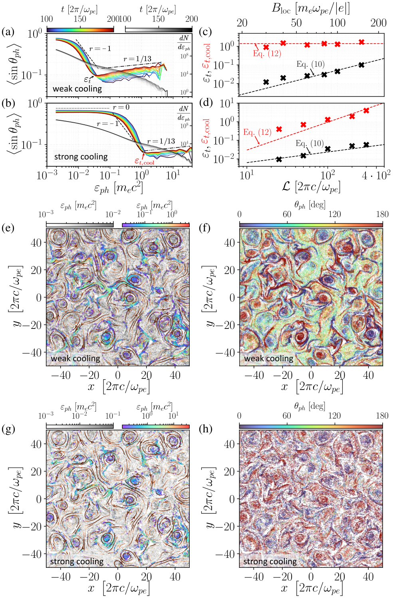
图注：弱冷却(a)和强冷却(b)下光子平均俯仰角及能谱随时间变化，黑虚线和点划线表示式(7)、(9)的标度。(c)、(d)为弱冷却转折能（黑）和强冷却转折能（红）对局部磁场与注入尺度的依赖。(e)、(g)为两种冷却下不同能量光子的空间分布，流线表示面内磁场方向；(f)、(h)为局部E×B系中的光子空间角分布。(a)—(d)使用全部光子，(e)—(h)只取380π/ωpe至400π/ωpe期间发射的光子。
怎么看这张图：曲线检验角能映射，空间图展示高能辐射与涡/电流片相关；统计窗口不同，不能直接比较其总数。最高能角斜率使用模拟启发修正，图中没有观测偏振或天体远场转移。 连接微观动力学和局部辐射。
来源与置信度：arXiv HTML；source verified；https://arxiv.org/html/2609.27995v1/figure_4.png
强相关工作
本文直接扩展Comisso与Sironi的辐射湍流俯仰角研究，后者研究较大磁扰动；硬同步谱工作说明为何角分布不能被单一电子指数替代。本文新增弱扰动条件的平行加速—曲率漂移分段标度及冷却转折，不是首次发现各向异性会影响同步辐射；两种扰动范围不应当作完全同一测试。
级联闭合基于Goldreich—Sridhar临界平衡，需与二维动力学适用范围一起审查。重联所印刻的俯仰角各向异性是低能沿场机制的基础连接；Crab双加速机制解释提供硬射电谱背景，但本稿未拟合Crab多波段数据。辐射湍流的间歇束射与热化也提醒驱动、冷却与稳态选择改变结果，不能由有限弱扰动案例得出全部源的通用辐射规律。
同一事件 / 同类源线索：
相似工作：
基础理论 / 方法工作：
相反观点 / 张力线索：
（未提供）
10. A Coherent Search for New Galactic Magnetars using Fermi/GBM and follow-up Swift/BAT: 7 Candidates and a Large Burst Catalog
- 来源：arXiv / astro-ph.HE
- 链接：https://arxiv.org/abs/2609.26897
- 作者：Ariel Perera, Barak Zackay, Tejaswi Venumadhav
- 评分：novelty 8/10，importance 8/10，relevance 9/10，final 9.35/10
- 推荐理由：GBM与BAT互补定位给出七个磁星候选及1720爆发，承接昨日检测方法但新增源发现结果，候选不能称确证。
中文题目：GBM与BAT联合寻找磁星：1170个已归属暴、7个仍待确认的候选源
做了什么：作者重新利用2013—2025年Fermi/GBM连续事件数据，以全部14个探测器的联合泊松搜索找出短而软的暂现事件，再到Swift/BAT档案寻找同时成像信号。BAT的角分定位为部分暴提供锚点，时空聚类把附近时间、相容位置的其他暴归到共同源。3675个宽选磁星样触发中，最终1170个暴归属于11个已知源，另有121个未归属聚类暴和429个高概率SGR3事件，合计1720个被解释为磁星暴；正式已归属目录的口径仍是1170个。
搜索提出7个新磁星候选，但没有确认7颗新磁星：3个BAT候选的经验源关联概率仅约0.20—0.30，4个聚类候选尚未标定聚类误报率，第三条非聚类位置叠加途径没有找到可分辨新源。目录还为已归属事件比较六类谱形，能流量延伸到8—200 keV下低于$10^{-8}$ erg/cm²。新增弱暴提高后续研究潜力，却不能在未测完备性的情况下直接给磁星本征暴能量函数。
为什么重要：发现一次高能短暴和确定它来自哪颗磁星是两道不同问题。GBM覆盖广但位置粗，银河面多个源可落在同一误差区；BAT定位好却缺少连续事件级数据。本文把两类仪器的互补信息和磁星成群爆发的行为结合，扩大可归属样本。这是识别能力与目录方法的进展，候选真实性、源内辐射机制和星系磁星总数仍须独立证据。
理论 / 观测 / 仪器方法价值：可复用方法是用真实时间错移资料构造偶然关联背景，再用位置和成像信噪比估计经验关联概率；不能只把一个低阈值BAT峰叫作发现。论文还展示了同源假设下乘积定位与不假定同源时平均定位的区别。迁移到其他高能仪器时需要重新标定背景、曝光选择和共享定位系统误差，而不是照搬本文0.75聚类阈值或概率值。
为什么应该关注：磁星爆发与重复暂现源研究需要可靠触发时刻、来源和谱能流量，这些是跨波段乃至伴随信号检索的输入。本文最值得跟进的是候选X射线后随与定位系统误差，而非把软伽马暴直接外推成TeV或中微子预测。对联合搜索，较弱事件可以累积信息，但增加事件数不会自动消除共同响应误差，也不会使未校准的簇成为显著发现。
展开详细解读：文章讲解、背景、理论、重点章节、图表与相关工作
文章详细讲解
科学问题。 磁星可长期暗弱，只在短暂爆发中暴露，因此触发以下的弱暴是寻找遗漏源的机会。困难在于低计数导致GBM方向后验很宽，而已知磁星集中在银河面。仅按最近源归属会误配，只按单暴高阈值又浪费信息。作者需要同时处理“是否真实暂现”“是否同一次跨仪器事件”“是否来自同一颗星”三个层次。
作者怎么做。 搜索用约500个空间—谱模板和22个约3毫秒至6秒的时间模板，对泊松计数联合滤波，并做漂移修正及仪器异常排除。先保留谱峰低于60 keV、峰值时宽小于1秒、非太阳或地球类别且天体概率至少0.5的3675个触发。随后构建BAT事件图或档案计数图，估计关联概率，再用两阶段密度聚类和人工核查建立源目录。
关键结果。 1170个已归属暴中SGR 1935+2154占851个、Swift J1555.2−5402占213个，样本高度不均衡。新源方面，3个角分BAT候选定位有利于定点后随，但其概率远未达到可靠确认；4个聚类候选定位较宽，其中3个偏离银河面，磁星解释更弱。谱模型以光学薄热轫致辐射函数最常被BIC选中，却往往与其他函数难分，不证明真实等离子体就是简单热轫致辐射。
局限和下一步。 聚类未报告全流程误报率，位置后验乘积假定条件独立，GBM共享系统偏差可能造成过窄联合区域；人工合并也需纳入端到端标定。较低能流量延伸不是完备性曲线。作者建议Chandra、XMM-Newton检验角分候选的持续辐射与脉动，宽区域候选借助EP等广视场监测，未来亦可用SVOM/ECLAIRs实施互补定位；这些均为待做验证。
关键结果是怎么做出来的
先建立真实触发的概率。各类天体的谱、时宽和方向分布不同，作者将原时序与探测器间错移时序通过同一管线，比较统计量分布以估计$p_{\rm astro}$。本研究放宽原分类后的入选条件，但保留各事件原类别的概率标定。因此0.5是经验混合模型下的入选阈值，不等于全样本每个触发都具有相同误报率，更不代表已确定其为磁星。
再取得定位锚点。BAT图像先搜信噪比大于4的峰，通过另一观测时段错移且重新投影的图像估计偶然峰。源概率分布用背景主导区域归一化，得到系数1.74；必须先缩放再比较原时与错移密度。单图多个峰还用已知重复源先验排序，之后采用获选峰的源概率。偏移小于30度、曝光短于10秒的切选抑制稀疏尾部异常，但也形成额外选择函数。
聚类先以一天邻域、至少3个点寻找时间簇，再以同源概率至少0.75的邻接关系划分子簇。概率由3天以内事件对与打乱位置的背景比较；相隔约90度的过量实际上来自两颗同时活跃的不同磁星，附录去掉2020—2021资料后该结构消失。这说明时空过量不总等于同源，需结合角距范围、定位和已知活跃源辨认。
精定位成员为整个簇提供归属后，作者人工合并被时间间隙切碎的活动段，移除X射线双星和不相容关联，例如99号簇仅保留精定位事件。得到1170个已知源暴；未归属121个聚类暴与429个非聚类高概率SGR3事件构成其余550个。七个候选来自三个弱BAT关联和四个无已知源的簇，非聚类平均天图没有新增候选，三条途径的产出不能混写。
最后对已归属源固定位置，重新生成每暴响应并拟合六种时间积分谱，以最低BIC模型计算8—200 keV能流量和$T_{90}$。谱模型统计样本为1154个，其中703个偏好OTTB；不要用1170作为这个百分比的分母。弱而短事件有部分$T_{90}$估计失败，谱样本、时宽样本和归属样本不能默认为完全相同。图15低端转折也没有经过注入回收，不能解读成完备灵敏度阈值。
展开背景、理论、公式、模型和章节导读
背景知识
磁星是辐射活动主要由磁能驱动的中子星，不仅有持续X射线，还会产生毫秒到秒的软伽马暴。慢自转与高推断偶极场是常见特征，但存在低偶极场磁星样活动，所以候选确认仍要综合时序、持续辐射和爆发性质。一次软而短的触发只是线索，宇宙学短GRB、粒子事件和双星峰值均可能混入。
GBM通过不同朝向探测器的相对计数推断方向，不直接形成聚焦图像，低信噪比及响应系统差会使误差区达数度以上。BAT利用编码掩膜把方向映成探测器阴影，能恢复角分图像，但视场、部分编码和下传数据限制其可用曝光。两仪器互补的关键在信息类型不同，而非将两次信噪比简单相加。
磁星常在活跃期连续发出多个短暴。一个精定位暴能帮助解释同一活动期其他事件，但“同一时期”不必“同一源”，特别是在两个强磁星同时活跃时。密度聚类允许噪声点不归簇，比强迫预定簇数自然；其连接可以通过中间点传播，所以所有簇成员未必都两两满足邻域条件，需后验和人工一致性检查。
目录的能流量、峰宽和$T_{90}$回答不同问题：峰宽优化搜索信噪比，$T_{90}$描述累计能量的中央90%，能流量是时间积分的能量面密度。三者均受能带、弱尾部和谱模型影响。不同距离源的观测能流量不能直接比较本征能量，样本低端减少亦可能是选择效应而非物理最小暴能。
基础理论 / 方法脉络
低计数时每个探测器能道服从泊松分布，合理方法是把天空位置与谱形通过响应映射到期望计数，再比较有源与无源假设。联合权重使符合一个真实方向的多探测器微弱增量累积，而只出现在一个探测器的异常更容易排除。真实背景缓慢漂移仍需校正；泊松形式本身不能保证背景模型正确。
经验概率来自前景密度超过背景的比例。它依赖分箱、平滑、归一化与所选总体，含义不同于单个事件完整生成模型的精确贝叶斯后验。本文分别使用天体概率、BAT计数同步概率、BAT源关联概率、单图相对归属概率，读者必须核对条件事件；特别是单图排序条件已假定存在真实对应体，不能拿排序结果证明存在性。
同源定位联合需在噪声条件独立且先验一致时把各似然相乘。若单暴后验已含相同非均匀先验，直接相乘会重复计算先验；本文均匀天区先验使该项成为常数。共享响应偏差不在简单乘积独立噪声假设内，统计区域缩小后可能更受系统项主导，这应成为候选后随区域设计的限制。
谱形选择通过响应卷积后的计数比较，许多本征谱差异会被能带和计数不足抹平。OTTB是COMPT在低能指数−1时的特例，而Band在高能尾足够陡时接近COMPT，因此最低BIC常优先选择较少参数的函数。这体现可辨识性和复杂度惩罚，不能把函数名称当作辐射机制已识别，也不能把BIC差直接换成χ²显著性。
公式与推导
从响应到计数，整理原文式(2)(3)：
$n$合并探测器与能道，$R$包含对应曝光/响应约定，$AT_n$是期望源计数，$b_n$是背景。天空方向$\Omega$与谱参数$\xi$共同影响相对计数，不能先用一个能段任意定位再忽略方向—谱退化。
对有源与无源泊松似然取比，阶乘消去得到：
这是原文式(2)的指数。对时间模板相关并减去背景均值可构造式(1)的滤波统计量；构造滤波时$A$固定在模拟检测尺度，检测后物理幅度$\hat A$另行估计，不能把二者视为同一个已拟合量。
经验混合概率按原文式(4)为：
这里$H_1$为真实暂现信号，背景项由错移估计，信号项由原时相对背景过量估计。它依赖类别和事件率先验，校准统计量的σ单位不应取代这一经验概率。
到BAT关联层，式(6)(7)给：
图3采用$\alpha=1.74$。候选$\mathcal R=1.43$只对应$p_{\rm src}\simeq0.30$；1.25对应0.20。所谓43%或25%的发生率过量不是43%或25%的发现置信度，更不是几个σ。
同一图中选对应体使用式(8)：
$\pi$包含已知重复源的经验权重，该式条件于图中有真实对应体，仅决定相对排名。应保留获选项原来的$p_{\rm src}$；只有一个候选时归一化排名可为一，但其真实性仍可很低。
事件对的式(13)和聚类邻域写作：
两类事件对数相同故归一化为一；此不相似度未必满足数学距离的三角不等式。DBSCAN采用连通邻接而非要求整个簇两两都近，因此至少3点与0.75阈值不能自动推出全簇75%真实性。
在同源、独立噪声条件下，附录B的联合定位为：
均匀先验可化为归一化乘积；非聚类天空叠加则取平均，假设不同。两者不能互换，前者还没有自动包含共享定位偏差的边缘化。
谱模型比较与可观测量由式(14)及目录定义接起：
幅度虽未在MCMC采样，仍算自由参数。能量用keV积分时需转换为erg；分位时刻来自同一解卷积能流量累计。选择谱形会改变能量权重和时宽，bootstrap只覆盖所设噪声与流程，不能自行包容所有模型系统误差。
模型拟合 / 应用方法
初始搜索联合方向与Band谱参数采样，响应以2度天区网格预计算并采用最近网格响应。谱先验放宽以涵盖非GRB与弱事件，再扫描更密时间模板获得精化峰宽。网格近似与GBM定位系统误差都可能限制定位精度，不能把很窄乘积区域解读为仪器真实精度已同比改善。
BAT概率校准先二维分箱、Gaussian平滑和三次样条插值，背景控制区为信噪比4.25—4.75、偏移45—55度。已知源先验从高信噪比小偏移总体估计，因此是经验且数据相关的。本文称弱候选概率保守，但少量已知关联检查不足以证明全域保守性；新源候选应以表3实际概率报告，不能用“保守”消除其低可信度。
聚类0.75阈值由子簇数量随阈值开始下降的位置选取，是灵敏度与纯度的经验折中，并非固定误报率最优点。后续人工合并和剔除有逐簇记录，便于检查，却引入额外选择步骤。建议的端到端时间/位置重采样需重复全部步骤才能测候选簇误报率；论文明确该标定尚缺，不能声称已做。
已归属暴的谱分析固定源位置、逐暴生成响应，六个模型的幅度作最大化，其他参数MCMC采样。时间窗由Bayesian Blocks识别邻近连续显著片段并加边界，再从响应解卷积光变计算能流量与$T_{90}$。短弱暴失败项、模型间BIC相近和背景噪声bootstrap都应一起阅读，不能只取最优模型列做无误差总体拟合。
复现还需区分正文的Zenodo DOI 10.5281/zenodo.20430377与参考文献[33]实际链接10.5281/zenodo.22884088，两者在原HTML不一致；本次未下载数据包确认版本，不应宣称独立复现目录。初始22个模板的最短宽度写约3毫秒，时宽图说明下限约2毫秒，亦按作者各自口径保留，不用于推出毫秒以下物理缺口。
重点章节 / 结果段落怎么读
- 第II—III节先分清检测幅度与事后估计幅度、各类概率及3675个宽选样本，避免把短软选择当成源分类确认。
- 第IV.3节式(6)—(12)与图3检查背景归一化、图内排序的条件和已知源先验，尤其留意低概率候选如何仍能有较大成像信噪比。
- 第IV.4—IV.5节及附录A、B追踪聚类阈值、90度双源结构和人工合并，区分乘积定位的数学假设与实际共享系统误差。
- 第V节表3及图8、9把七个候选逐途径拆开；第V.3节明确第三途径没有新候选，不得把平均天图亮斑算新源。
- 第VI节图12、13、15及附录D分别检查谱退化、时宽失败和完备性缺口，使用目录时固定能带和样本分母。
关键图表与解读
图3
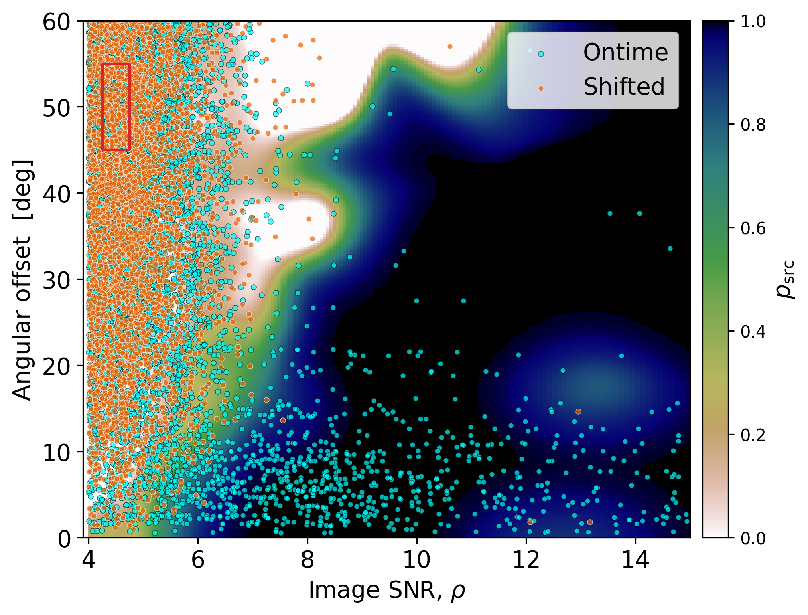
图注：源关联概率随BAT图像信噪比和相对GBM定位角距的分布，叠加原时及错移候选。小角距处原时候选过量，对应较高源概率。红框标出背景归一化区域，由此得到α=1.74；因两样本观测数不同，即使局部原时候选更多，归一化后源概率仍可能较低。
怎么看这张图：先看归一化区域，再读低信噪比或大偏移处概率。这里是经验总体过量估计，图像6σ峰并不自动具有6σ跨仪器关联显著性。 支撑统计关联解释。
来源与置信度：arXiv HTML；source verified；https://arxiv.org/html/2609.26897v1/psrc.png
图8
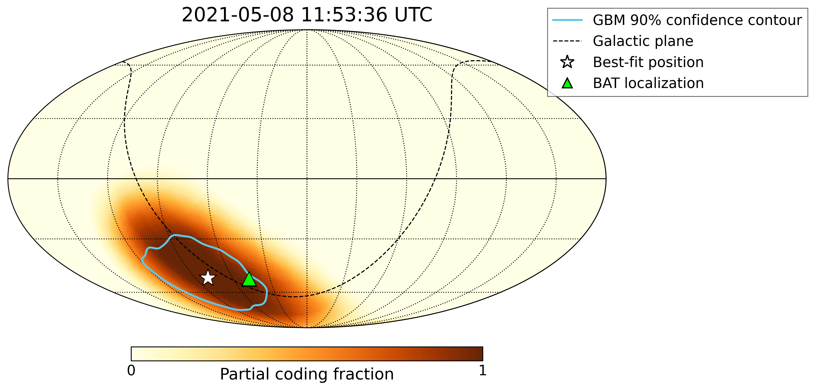
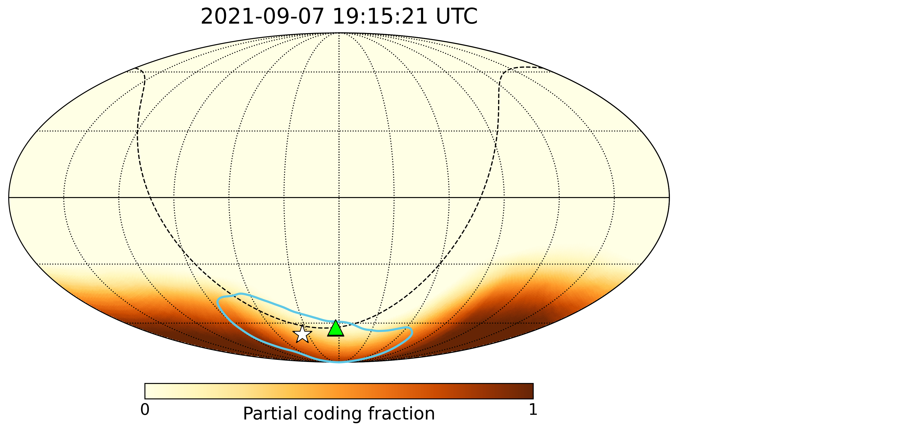
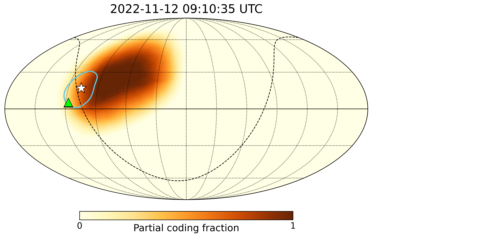
图注：三个未归属SGR样候选的BAT图像定位，分别为2021年5月8日、9月7日和2022年11月12日事件。背景为当时BAT部分编码比例，较深区域表示较大编码曝光；青色轮廓为GBM90%后验可信区，白星为GBM最优位置，绿色三角为BAT定位，黑虚线为银道面。BAT定位位于或相容于GBM宽误差区，且不与已知磁星重合。
怎么看这张图：位置相容支持后随价值，但需同时读表3约0.20—0.30的源关联概率。角分定位精度与关联可信度是两件不同的事。 直接呈现三个弱候选定位。
来源与置信度：arXiv HTML；source verified；https://arxiv.org/html/2609.26897v1/2021-05-08_bat_partial_coding_gbm_contour.png；https://arxiv.org/html/2609.26897v1/2021-09-07_bat_partial_coding_gbm_contour.png；https://arxiv.org/html/2609.26897v1/2022-11-12_bat_partial_coding_gbm_contour.png
图9
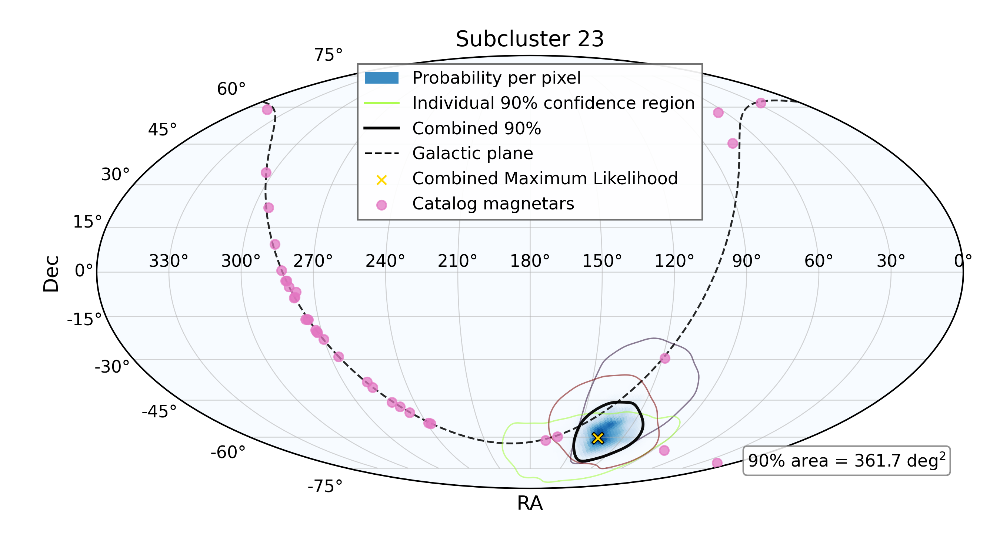
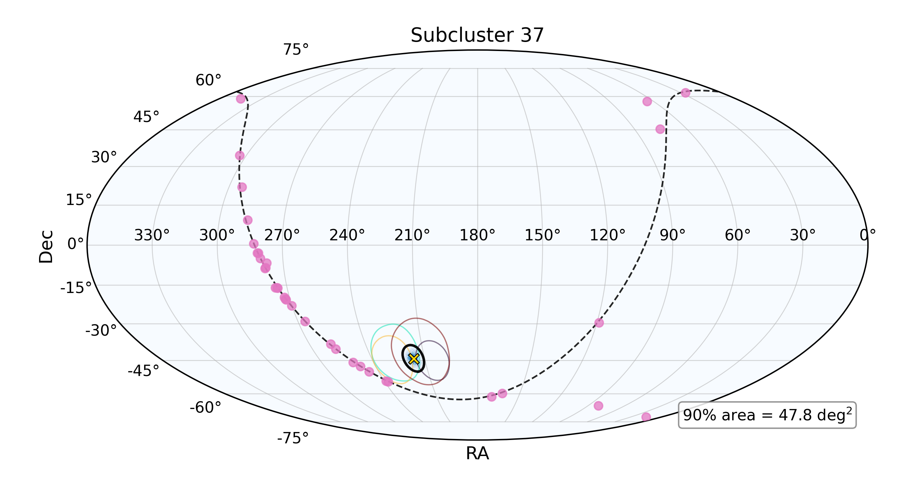
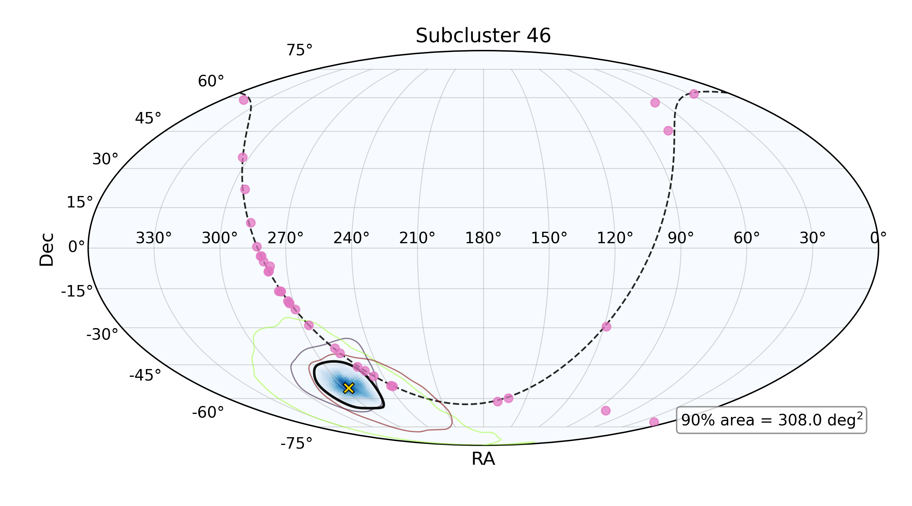
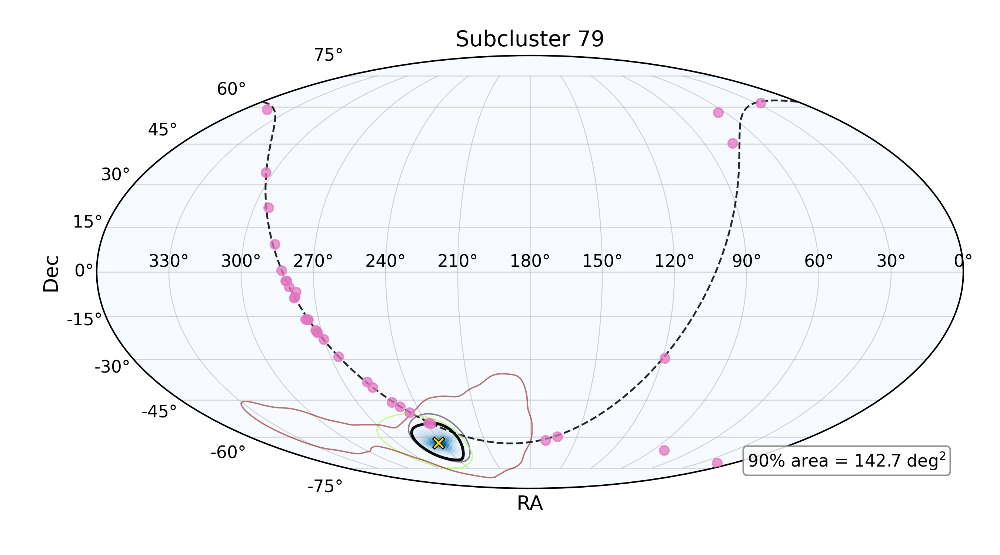
图注：未归属子簇23、37、46、79的定位，表示法同图7。彩色曲线是成员暴90%GBM轮廓；蓝色图和黑色轮廓是乘积后验及其90%区域；金色叉为联合最大似然位置，洋红点为已知磁星。各面板标出联合90%区域面积。
怎么看这张图：联合定位依赖同源和独立噪声假设，尚无簇误报率；三个偏银道候选的磁星解释较弱。缩小统计区域不证明共同系统偏差已消除。 说明四个聚类候选的局限。
来源与置信度：arXiv HTML；source verified；https://arxiv.org/html/2609.26897v1/subcluster_023_contours.png；https://arxiv.org/html/2609.26897v1/subcluster_037_contours.png；https://arxiv.org/html/2609.26897v1/subcluster_046_contours.png；https://arxiv.org/html/2609.26897v1/subcluster_079_contours.png
图12
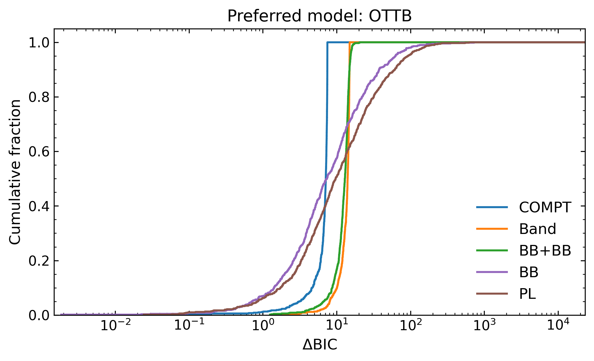
图注：在OTTB为首选模型的暴中，其他谱模型相对OTTB的ΔBIC累积分布。每暴以OTTB的BIC为基准，较大差值表示较不受偏好的模型。许多替代模型ΔBIC较小，显示相近拟合质量及谱模型退化。
怎么看这张图：最低BIC不等于机制唯一。应关注小差值比例；BIC包含参数惩罚，不能用其平方根当非嵌套谱模型排除显著性。 约束谱模型的物理解读。
来源与置信度：arXiv HTML；source verified；https://arxiv.org/html/2609.26897v1/magnetar_dbic_cdf_ottb.png
强相关工作
Perera等2025年的泊松联合搜索方法及2026年的13年短暂现源目录构成本文检测、分类和概率输入，因此不能把数据重分析当作独立仪器重复发现。本文新增的是BAT成像关联、时空源归属与磁星谱目录。对照Godwin等的17年GBM磁星暴目录时，应先统一重叠年份与源归属条件；1170对735体现本文报告的重叠区样本差异，不自动是各能流量下统一的效率比。
物理背景可读Kaspi与Beloborodov的磁星综述，理解磁能活动与确认依据。光谱与时宽对照包括早期五年GBM目录、INTEGRAL/IBIS目录和NICER目录。它们的能带与选择不同；NICER更短时标爆发不能直接解释成GBM漏掉的同一硬X射线总体。上述关系来自本文参考文献与讨论，本次未声称对各数据包重新交叉匹配。
同一事件 / 同类源线索：
相似工作：
基础理论 / 方法工作：
相反观点 / 张力线索：
（未提供）
11. Is accretion flow magnetically arrested in M87?
- 来源：arXiv / astro-ph.HE
- 链接：https://arxiv.org/abs/2609.27326
- 作者：Yuao Ma, Xinwu Cao, Jia-Wen Li, Jianchao Feng, Qingwen Wu
- 评分：novelty 8/10，importance 8/10，relevance 9/10，final 9.35/10
- 推荐理由：M87喷流功率与法拉第旋转联合检验MAD条件，对磁通供给有具体可复用约束，但结论依赖功率输入。
中文题目：M87是否必须处于磁阻塞吸积态？由喷流功率反推磁通的条件论证
做了什么：作者把M87内区吸积率的既有谱与法拉第旋转约束，和射电核心位移模型给出的喷流功率结合，计算弱外部磁场随热吸积流向内输运后是否足以阻碍气体继续落入。模型包含磁外流带走角动量所致的径向加速、湍流磁扩散，以及磁场足够强时人为切换到缓慢径向流的磁阻塞盘（MAD）处方，再以Blandford—Znajek机制计算喷流功率。
在固定黑洞自旋0.9、选定流结构和视界磁场换算下，要达到采用的$3.2\times10^{43}\,\mathrm{erg\,s^{-1}}$喷流功率，四类吸积输入都需进入MAD；较弱磁场的普通吸积态（SANE）仅在功率显著低于约$1.75\times10^{43}$时仍可行。结论是给定模型与功率估计下的条件约束，不是直接测到磁阻塞，也未排除所有SANE构型。喷流功率、内区密度、自旋与ISCO到视界磁场增强假设决定推断强度。
为什么重要：毫米谱和环状图像可能由不同磁化状态产生，仅靠外观难以判定磁场是否在动力学上阻塞吸积。本文引入喷流所需磁通与盘可承受磁力的比较，把“有强磁场”变成一个相对于面密度和剩余有效重力的条件。它为连接盘与喷流提供了可检验路径，同时也清楚暴露最值得改善的观测输入：较接近当前活动状态的喷流功率，而非只依赖长期平均空腔能量。
理论 / 观测 / 仪器方法价值：方法价值在于把磁通平流、扩散、外流角动量抽取及喷流能量预算连起来迭代求解。单独指定视界磁场可算BZ功率，却不回答盘能否供给并维持该磁通；本文补上了外部弱场向内输运的环节。复用时要明确它采用牛顿流结构、参数化磁阻塞速度和固定视界增强因子，不能替代广义相对论磁流体模拟，也不能从一次收敛迭代推出唯一稳定状态。
为什么应该关注：M87是高能喷流与黑洞磁化研究的重要对象，理解喷流供能有助于为粒子辐射模型提供能量与磁场边界。但本论文没有拟合TeV耀发、计算中微子通量或确定辐射区位置，不能直接推出这些预报。可关注的下一步是把同时期核心位移、偏振、毫米谱和高能状态放在同一时间尺度比较，检验所用功率与吸积率是否真正对应同一种源状态。
展开详细解读：文章讲解、背景、理论、重点章节、图表与相关工作
文章详细讲解
科学问题。 吸积气体把大尺度磁通拖向黑洞，磁场增强既可能驱动喷流，也可能反过来阻止气体顺畅流入。MAD意味着磁力在内区与有效重力竞争，SANE则没有同等程度的磁通阻塞。M87有强喷流和丰富毫米数据，但两类模型能产生相似谱，作者因此询问：维持其喷流所需的磁场，相对于独立估计的盘面密度是否已经超过阻塞阈值？
作者怎么做。 先借用既有热吸积流谱与旋转量模型给出的四组内区吸积率，设定外半径及质量流失剖面，再解轴对称大尺度磁场的平流—扩散方程。磁外流抽取角动量会提高普通区径向速度，磁力足够强的区域则切换到低速MAD处方。作者反复更新场与速度直到近似收敛，从ISCO磁场估计视界场，再把BZ功率与采用的射电核心模型功率比较。
关键结果。 基准外半径约$8.37\times10^4R_g$、模型A要求外场约365微高斯，可被输运到近视界百高斯量级。在四类内区吸积输入中，达到$3.2\times10^{43}$ erg/s的解位于MAD侧；若采用的喷流功率显著低于约$1.75\times10^{43}$ erg/s，SANE仍有空间。把外半径缩小到Bondi半径的0.05或0.01，达到同样功率所需外边界场升为795微高斯或4.5毫高斯，展示外边界条件的重要性。
局限和下一步。 内区面密度不是新观测直接测得，而是由先前SANE谱模型与假定径向速度得到；视界场也不是本文在广义相对论区域自洽算出的，而是把ISCO场乘约6。喷流功率来自另一个辐射模型，原文收集的长期平均功率跨度很大，不能只把采用值视为无误差测量。下一步需把这些输入的共同不确定性传播到MAD/SANE比较，并用同时期观测和相对论模型检验阈值是否保持。
关键结果是怎么做出来的
证据链首先固定物质供应。X射线环境给出的Bondi率约0.12太阳质量每年，作者假定气体在Bondi半径十分之一处圆化为热盘。内区10个引力半径处的吸积率由已有谱和法拉第旋转模型提供，从$5.8\times10^{-4}$到$8.5\times10^{-3}$太阳质量每年相差约15倍。用四个输入模型而非一个点值，有助于展示电子加热和随机磁场压力退化，但不是一套完整参数后验。
第二步指定质量流失和角动量抽取。普通区吸积率随半径为幂律，向内因风损失质量；MAD区假定无额外风且径向速度很低。磁风越强，普通区流入越快，磁通又越容易被拖入，这是正反馈；达到磁阻塞后速度减小则反过来影响输运。采用固定分段速度是把复杂交换不稳定性压成一个处方，不能由数学迭代收敛证明真实盘不存在时变磁通喷发。
第三步解磁场结构。环电流产生的磁势与外加垂直场叠加，稳态感应方程离散成线性方程组，在当前速度剖面下求出磁场，再更新速度。图1比较各组外场与MAD临界曲线，说明哪部分半径首先进入磁阻塞。外场值虽然很小，内外尺度跨度巨大，因此向内输运可产生很大放大；是否达到阈值仍由平流与扩散竞争决定。
第四步把磁场转成喷流功率。作者采用自旋0.9，ISCO以内没有直接计算，借用模拟启发的$B_H/B_{\rm ISCO}\simeq6$换算。BZ功率正比于视界场平方，因此该因子若变化，功率不是线性而是平方响应。图2给出不同磁扩散参数的关系，并与临界功率比较；它是一组模型预测曲线，没有观测误差点或正式的模型排除概率。
第五步审查外部证据。核心位移通过射电自吸收和喷流结构推断磁场，再得到较近当前状态的功率，时间尺度比百万年级空腔更相称；但它仍依赖喷流几何、磁化与粒子内容。空腔估计说明历史供能与环境反馈，不能直接替代当前功率，也不能用彼此不同的时间平均值宣称本文阈值稳健。论文最终把结论敏感性明确落在功率测量上，日报应保留这一点。
展开背景、理论、公式、模型和章节导读
背景知识
热吸积流辐射效率低，许多释放能量随气体流入或被风带走，几何通常较厚；这与明亮活动星系中较薄的冷盘不同。厚盘较高的径向流速有利于向内拖曳大尺度磁场，但湍流也允许磁通相对气体滑移。不能只用磁通冻结的几何缩放就假定所有外场都会完整积累到视界。
磁阻塞并不是吸积完全停止。强磁通可抑制连续流入，气体仍可通过交换不稳定性等非轴对称过程绕过磁结构进入内区。本文把这个过程以较低的平均径向速度表示，因此“arrested”应理解为磁场显著限制输运，而不是黑洞从此没有物质供应。真实MAD通常具有时间变化，本模型主要讨论平均结构。
BZ机制用穿过旋转黑洞的磁通把自转能量输送到外部，功率依赖磁通平方与视界转动。它不同于直接把盘辐射亮度转换成喷流功率，也不同于由吸积盘磁风本身供给全部喷流能量。本文把盘当作维持电流和磁通的环境，再计算视界BZ能量输出，两个环节都含模型条件。
法拉第旋转量是磁化等离子体使线偏振方向随波长平方改变的系数，与电子密度和沿视线磁场有关，因此能辅助约束内区吸积率。不过几何、场反转和辐射来源都会影响它。毫米谱提供电子与磁场共同辐射的约束，两者结合优于单独谱拟合，仍不等于直接称量盘面密度。这是本文推断MAD需要保留输入退化的原因。
基础理论 / 方法脉络
普通热盘靠湍流黏滞输运角动量而流入，磁风还能抽取额外角动量。作者把这个增强写成$1+f_m$倍径向速度；场越强，磁力矩越大，流入也可能更快。进入MAD后却要切换为慢流，因此模型的非线性来自场决定速度、速度又决定场，而不是先固定一个密度剖面就一劳永逸。
阻塞阈值比较的是磁应力与尚未被离心力抵消的重力。相同场强下，面密度更低或旋转更接近开普勒时，磁力更容易达到条件；因此仅报告“百高斯”没有足够物理意义。需要同时给出质量、半径、面密度和旋转率，才知道磁场是否在动力学上重要。
磁场输运取决于磁扩散率与黏滞率的比。原文将$P_m$定义成$\eta_m/\nu$，与许多文献使用的磁普朗特数$\nu/\eta_m$互为倒数。比较结果时必须跟随本文定义：在其约定下，数值较大意味着给定黏滞下扩散较强，而不能直接搬用其他文献“较大普朗特数更利于积累”的说法。
内外场连接有两个不同近似。盘内用牛顿轴对称感应方程求解，ISCO到视界用一个约6的经验增强因子；Bondi半径到圆化半径又用近径向磁通冻结估计。三个区域的物理处理不同，不应把整条曲线称作从星系环境到视界的完整广义相对论解。模型价值在于建立量级一致性与条件阈值，而非取代对各区域的独立观测。
公式与推导
从质量守恒开始，用向内速度的绝对值避免原文式(13)中正负号排版混乱。面密度$\Sigma$、径向吸积率$\dot M$满足：
这是原文式(13)的正量形式，$\Sigma$单位为$\mathrm{g\,cm^{-2}}$；较慢径向流在同一吸积率下需要较高面密度。
原文式(2)(6)(7)以黏滞$\nu=\alpha c_sH$和磁风增强写：
$\tilde H=H/R$、$f_\Omega=\Omega/\Omega_K$、$\beta=P_{\rm gas}/(B_z^2/8\pi)$，$\xi_\phi$为磁面环向与垂直场比的幅度参数。采用幅度后避免磁力矩符号约定混用；磁场增强通过$\beta$减小来改变径向流入。
原文式(8)—(12)用磁应力与有效重力比较：
两侧都是单位面积的力，适用假定盘面径向场与垂直场同量级。这里的阈值不是仅由磁压与气压一比一定出，而是明确包含面密度与旋转支撑。
MAD区令$|v_R|=\epsilon\sqrt{GM/R}$，代入质量守恒和上式，教学整理得：
再用$R=rGM/c^2$及$\dot M=\dot m\dot M_{\rm Edd}$，且原文$\dot M_{\rm Edd}=L_{\rm Edd}/(0.1c^2)$，可得到式(14)的标度：
$m$以太阳质量计，$\epsilon$为低速流处方参数。该推导说明阈值也依赖速度假设；不能只改变磁场而保持所有密度条件不变。
原文式(16)的感应方程可保留核心结构：
$\psi$是环向磁矢势，$J_\phi$是电流密度。设稳态后，平流与扩散、电流共同决定场，不能把$B\propto R^{-2}$直接用于整个湍流盘。由原文式(24)(25)恢复场分量：
电流与磁势积分关系使不同半径相互耦合；作者通过离散环电流解线性方程组，再更新磁风速度。
得到ISCO场后，原文采用$B_H=f_BB_{\rm ISCO}$、$f_B\simeq6$，再用式(26)—(30)：
这里采用原式给出的视界半球磁通约定，自旋$a$无量纲。固定其余条件时$P_{\rm BZ}\propto f_B^2B_{\rm ISCO}^2$；因此ISCO到视界的换算不确定性会被平方放大，不能省略。
最后，原文式(42)只用于Bondi到圆化的近径向冻结估计：
模型A中$R_{\rm out}/R_A=0.1,0.05,0.01$分别要求$B_0=365,795,4500$微高斯，教学换算对应$B_A\simeq3.65,1.99,0.45$微高斯。外边界盘场更大而所需Bondi场更小并不矛盾，因为前段几何压缩更强；这些是条件反推值，不是三个实测外场。
模型拟合 / 应用方法
论文主要是参数扫描与迭代，没有对新的全波段数据执行联合似然拟合。模型A—D继承不同电子加热比例和随机场压力比的吸积流结果，10$R_g$吸积率跨约15倍，外流幂指数约0.291—0.588。本文的大尺度垂直场压力比$\beta$与这些谱模型的随机场压力比$\beta_b$不是同一个参数，解释图时不能混为一谈。
固定结构取黑洞质量$6.5\times10^9$太阳质量、自旋0.9、黏滞0.3、转动率为开普勒的0.9、厚径比0.5，主要计算$P_m=0.5$并比较其他值。不同外场逐步求解磁通，进入阻塞区后使用低径向速度。作者称几次迭代即可获得解，但没有给出全局稳定性、唯一性证明或对所有固定参数的联合误差传播，日报不应把“收敛”写成“物理状态唯一”。
喷流功率$3.2\times10^{43}$ erg/s取自Zdziarski等核心位移模型，优点是接近当前源活动，弱点是仍受几何、磁化和粒子组成假设限制。空腔功率估计则涉及$4PV$焓和不同年龄处方，原文举例可相差数倍至更大且时间平均不同。因此不能把多个功率方法的范围当作同一个高斯误差条，也不能按本文单一阈值宣称某个固定σ水平排除了SANE。
最需要检验的闭合问题是以SANE谱模型导出物质条件，再用磁输运论证其必须MAD。作者认为两者谱近似相同，因而不会显著改变结论；这是一项合理待验的论证，尚不是用MAD模型重新做全部谱和旋转量联合拟合。建议在同一观测时段传播吸积率、自旋、视界增强和喷流功率误差，寻找SANE是否仍有可行区域；这属于下一步，本文未完成。
重点章节 / 结果段落怎么读
- 第2.1节式(8)—(15)先读力平衡与分段速度：明确MAD定义是磁应力相对于有效重力，而不是“强场”这一形容。
- 第2.2节跟踪磁势、电流与感应方程，尤其本文$P_m=\eta_m/\nu$的反常用约定，避免将扩散趋势读反。
- 第2.3—2.4节区分计算出的ISCO场、借用因子的视界场，以及从旧谱模型继承的四组吸积率，梳理哪些是输入、哪些是结果。
- 第3节与图2共同阅读：喷流功率方法的时间平均不同，MAD阈值只在所选模型中成立，不是直接观测标签。
- 第4—5节及图3检查外半径敏感性、低功率SANE例外，以及作者对旧SANE谱输入的解释；这些限制决定标题中疑问的回答强度。
关键图表与解读
图1
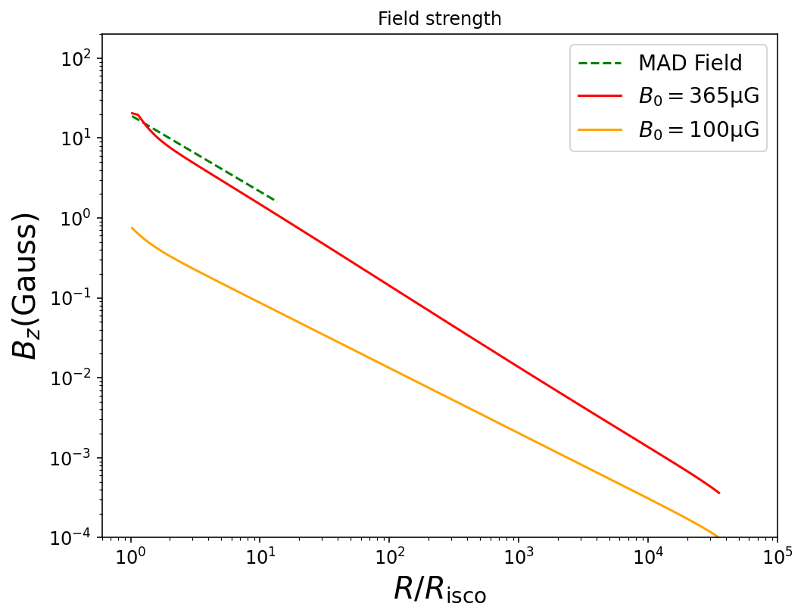
图注：吸积流中的垂直磁场强度随半径的变化，四个面板分别为模型A、B、C、D。计算采用磁普朗特数Pm=0.5。不同颜色的曲线对应不同外部磁场强度B₀，绿色虚线表示进入磁阻塞盘（MAD）状态的临界阈值。
怎么看这张图：比较各条场强曲线与临界线在内区的关系，同时区分四组吸积输入。这里的Pm按本文定义为磁扩散率除以黏滞率，和常用倒数定义不同；曲线交会给条件阈值，并非观测空间分辨到阻塞区。 展示磁场与面密度共同决定的阻塞条件。
来源与置信度：arXiv HTML；source verified；https://arxiv.org/html/2609.27326v1/Figure1.png；https://arxiv.org/html/2609.27326v1/Figure2.png；https://arxiv.org/html/2609.27326v1/Figure3.png；https://arxiv.org/html/2609.27326v1/Figure4.png
图2
图注：Blandford—Znajek（BZ）喷流功率随模型参数变化。不同颜色的曲线表示不同磁普朗特数Pm，绿色虚线表示MAD状态对应的临界BZ喷流功率。
怎么看这张图：以采用的3.2×10⁴³ erg/s与临界线比较，判断模型是否需要MAD。自旋0.9和视界场为ISCO场六倍属于固定输入，图中曲线并没有把这些不确定性变成误差带，因此不能据此给SANE排除显著性。 论文MAD条件结论的核心功率比较。
来源与置信度：arXiv HTML；source verified；https://arxiv.org/html/2609.27326v1/Figure5.png；https://arxiv.org/html/2609.27326v1/Figure6.png；https://arxiv.org/html/2609.27326v1/Figure7.png；https://arxiv.org/html/2609.27326v1/Figure8.png
图3
图注：不同圆化半径下，吸积流垂直磁场强度的变化。计算采用Pm=0.5。红、黄、蓝线分别对应盘外半径为Bondi半径Rₐ的0.1、0.05、0.01。绿色虚线表示MAD状态的临界阈值。
怎么看这张图：缩小盘外半径后，要调大圆化处外场才能得到同样喷流功率；这不表示Bondi处环境场也必须更大，因为盘形成前的径向压缩更强。图3显示的是边界条件退化，不是新增的外场测量。 核查外边界依赖及不同位置磁场的区别。
来源与置信度：arXiv HTML；source verified；https://arxiv.org/html/2609.27326v1/DIFFR_out.png
强相关工作
Feng等2016年（arXiv:1607.08054）提供M87吸积—喷流谱与法拉第旋转的物质条件，Zdziarski等2015年（arXiv:1410.7310）提供核心位移、磁场与喷流磁化的功率推断。本文将两类输入结合后比较磁输运与阻塞阈值，其新增之处是物质与磁通的供给一致性论证；两类旧模型的不确定性仍随之继承，并没有因被组合就消失。
Narayan等2003年（astro-ph/0305029）奠定MAD的物理图像，Cao 2011（arXiv:1105.6142）提供热流大尺度磁场输运框架，McKinney与Gammie 2004（astro-ph/0404512）为视界磁场与相对论喷流提供模拟参照。本文引用这些成果形成半解析计算，而非运行新的三维GRMHD模型。它与EHT和其他偏振模拟推断可互补，但不能把依赖共同BZ假设的相容结果数成独立直接发现。
同一事件 / 同类源线索：
相似工作：
基础理论 / 方法工作：
- https://arxiv.org/abs/astro-ph/0305029
- https://arxiv.org/abs/1105.6142
- https://arxiv.org/abs/astro-ph/0404512
相反观点 / 张力线索：
（未提供）
12. Energy estimation of direct and reflected cosmic-ray events aboard balloon-borne radio detectors
- 来源：arXiv / astro-ph.HE
- 链接：https://arxiv.org/abs/2609.27666
- 作者：Sergio Cabana-Freire, Jaime Alvarez-Muñiz, Matias Tueros
- 评分：novelty 8/10，importance 8/10，relevance 9/10，final 9.35/10
- 推荐理由：气球直达与反射宇宙线射电能量重建处理球面散焦，8至11%为模拟基线而非总误差。
中文题目：气球射电宇宙线能量重建：用谱斜率校正观测角，并逐段追踪球面反射
做了什么：单个高空气球只能从一个位置采样宇宙线空气簇射的射电脉冲，强信号既可能来自高能初级粒子，也可能因为视线更接近相干最强的Cherenkov方向。本文利用频谱幅度与斜率的联合关系，把实际观测幅度外推至最大相干方向，再通过模拟标定能量；分别处理直接掠过大气层的簇射和经南极冰面反射的向下簇射。反射计算升级为逐粒子轨迹寻找球面反射点，并计入Fresnel系数、相位路径与散焦。
对各250个模拟事件，在成分已知、方向精确、无环境噪声条件下，100—450 MHz频段的直接事件能量分辨率约11%，反射事件约8%。这些是方法基准，不是仪器总能标精度。作者分别改变指向、质子/铁核假设和高斯噪声：掠大气事件对几何与成分尤其敏感，成分误判产生约0.09 dex能量偏移；反射事件对应约0.04 dex。结论段把反射基准也写为约11%，与正文IV及图11的8%不一致，本解读按具体试验结果区分。
为什么重要：射电脉冲的相干性包含观测角信息，因此一个位置测得的频谱不只有总振幅这一条约束。本文将这种信息用于事件特定的能量标定，并明确展示近地平线几何如何使大气折射和地球曲率成为主要误差来源。改进的是受控模拟中的重建流程；是否能达到同样实测精度，还取决于天线响应、成分混合、噪声选择和环境模型。
理论 / 观测 / 仪器方法价值：值得借鉴的是先用模拟构造幅度—斜率曲线、再映射能量，并把内禀散布与假设错配分开验证。球面反射实现同样具有仪器价值：高倾角时，一个整体振幅修正不能恢复被改变的射电足迹形状。使用这些方法需输入大气密度和折射率、地磁场、观测几何、表面性质及有效频带，并检验标定曲线是否覆盖实际触发样本。
为什么应该关注：气球和山地射电实验把宇宙线既作为科学信号，也作为超高能中微子搜索的重要背景与校准样本。可靠的宇宙线能量有助于检查模拟和曝光，但本文不是中微子能量重建，也没有解释ANITA异常向上事件。对多信使分析更直接的价值是学习如何把方向、成分和反射传播不确定性带入背景预测，而不把一个模拟分辨率当作完整探测能力。
展开详细解读：文章讲解、背景、理论、重点章节、图表与相关工作
文章详细讲解
科学问题。 地面阵列可以测量较完整的射电足迹，单个气球却主要得到一个视线方向的波形。偏离最大相干角会同时降低振幅、使高频衰减更快，因此能量与观测角退化。掠大气簇射延展可达约100 km，最大簇射点距探测器约900—1000 km，折射率梯度又使足迹偏离简单轴对称环，不能只使用局部折射率估计角度。
作者怎么做。 在有限频段拟合指数幅度谱，使用模拟建立参考频率幅度与谱斜率的二次关系；将测得的二者投影到最大相干位置，再用该处幅度近正比于初级能量的关系反演。直接事件枚举多个与入射方向相容的簇射几何，合并各自能量估计及离散程度。反射事件则把每个粒子轨迹的传播路径更新为球面镜面反射，避免将一个平面模拟只乘以总散焦系数。
关键结果。 两类250事件基准中，直接事件约11%、反射约8%的散布说明谱形可在理想条件下有效解除部分几何退化。直接事件固定方向偏移±0.25度会显著移动允许的簇射位置，质子与铁核互换产生约±0.09 dex的能量偏差；反射几何对同样指向偏移较稳健，成分错配约±0.04 dex。加入噪声或使用300—1000 MHz较高频带后精度变差，不能将不同试验结果简单视作同一总误差。
局限和下一步。 主测试使用SIBYLL 2.3d和纯成分，未给联合混合成分、随机指向、真实天线与触发选择的总性能。表面粗糙度仍是整体脉冲的后处理修正；逐轨迹球面处理不等于解决所有冰面传播。需要事件特定大气与地磁输入、能量相关成分先验，以及从触发到反演的完整注入恢复试验，才能把模拟方法用于实测能谱。
关键结果是怎么做出来的
第一步是标定而非直接回归能量。图3、4用一组固定簇射几何说明，随着观测点离开最大相干区，频谱斜率更负，幅度下降。作者用二次式描述这种关系，先估算最大相干处幅度，再利用多个初级能量的模拟拟合能量刻度。图4仅展示三个能量以便阅读，不意味着整个流程只依赖三个事件。
第二步检查直接事件的模拟范围。250个质子事件的对数能量在17.5—20均匀取样，探测器海拔36 km，入射角约93.5—96度，地磁场取竖直50微特斯拉。剔除了更接近或超过簇射最大点、以及数值频谱不能干净延伸到约400 MHz的情形。因而图6的11%不覆盖所有近地平线几何，也不是对真实能谱加权后的总体精度。
第三步分离方向和成分。方向试验是在50个事件上统一施加正或负0.25度偏移，不是从指向误差概率分布随机采样。在约94.5与95度之间，允许几何可移动约120 km，能量偏差甚至随几何呈非简单对称变化。成分试验将质子按铁核标定、铁核按质子标定，既包含电磁能量份额变化，也包含最大簇射深度与相干几何变化。
第四步加入有定义的噪声。作者给波形加固定均方根高斯噪声，用30 ns信号窗及十个30 ns噪声窗构成330 ns记录，在各频率用Rician似然估计信号振幅，比较100—450与300—1000 MHz拟合。结果表明低信噪比和高频带均会增大散布；但这里没有完整的射频干扰、相关频率噪声、触发阈值或天线校准误差模型。
第五步验证反射传播。反射样本覆盖地面入射角65—90度，冰折射率1.35、表面海拔2.5 km，接收器仍在36 km。图11报告对数偏差标准差0.034，即约7.8%的小误差换算。附录图A4说明倾角超过约80度时平面与球面足迹差异增大，接近87.5度时部分Cherenkov锥根本不交地球；这时形状和覆盖的改变不能由一个常数幅度因子补救。
展开背景、理论、公式、模型和章节导读
背景知识
空气簇射由高能初级粒子与大气相互作用产生，其电磁组分在地磁场中形成时变横向电流，并有净负电荷相关辐射。相干频段中电场幅度近随电磁簇射能量增加，因此射电可以成为能量量尺。但初级能量不完全等于电磁能量，强子模型和核质量仍影响转换。
这里的Cherenkov增强首先是传播时间压缩与相干叠加效应，不应把整个空气簇射射电信号简化为单个粒子在均匀介质中的Cherenkov辐射。远离相干方向，簇射不同位置的高频贡献更容易互相抵消，造成谱变陡；幅度与斜率正是利用了同一几何过程的两个可测后果。
掠大气簇射经过稀薄且密度随路径明显变化的大气，发展长度很大。相同入射方向不唯一决定簇射轴、最大点和距探测器的距离，因而对方向的小偏移会产生远大于直觉的路径差。一个局部折射率计算的圆锥角不能充分描述全程折射产生的非对称足迹。
经地面反射的事件还需要电磁边界条件。s与p偏振的Fresnel反射系数不同，符号取决于偏振定义和入射角，不能笼统说所有分量都固定翻转。球面曲率使射线束散焦，也改变哪些轨迹到达接收器；前者影响振幅，后者影响足迹形状，两者必须在合适层级处理。
基础理论 / 方法脉络
谱拟合把复杂波形压缩成参考频率幅度和一个斜率。这个低维描述只有在所选频带内近似指数谱、且信号估计没有严重偏差时才有效。斜率的单位是频率的倒数，负值代表幅度随频率下降；若MHz和Hz混用，标定系数会发生数量级错误。
最大相干角处的幅度是一个中间量，不一定就是探测器实际测到的位置。通过几何标定曲线将观测点移至此参考点，相当于先校正相干性再标定能量。曲线的几何和成分依赖仍然存在，不能将图4某一组参数当作所有事件通用常数。
近线性能量标度来自相干电场近随带电粒子数增加，而不是来自辐射功率线性：电场平方对应的能量通量通常近二次依赖。本文拟合对象是谱振幅，因而能量映射中的指数接近1；与地面阵列积分辐射能量标定比较时必须先统一观测量定义。
反射场由带相位的逐轨迹贡献叠加。几何光学驻相近似在波长远小于传播尺度时给出熟悉的Fresnel因子与散焦因子，但真实有限簇射还需要遍历发射点。附录将解析近似与Kirchhoff积分比较，是传播核的验证；它不能代替粗糙表面、天线及真实大气联合误差评估。
公式与推导
1．压缩频谱（正文式1）。
$A_0$是参考频率谱幅度，$\gamma$为负谱斜率。固定单位与频带后，二者记录能量和离开相干角的共同效应，为下一步几何校正提供输入。
2．外推到相干峰（式2）。
$C$标记最大相干位置，$b,c,\gamma_C$由同类几何模拟标定。对测得的$A_0,\gamma$移项得到$A_0^C$；这里是经验标定曲线，不是无条件的辐射定律。
3．再转换能量（式3及代数整理）。
$\Delta\gamma=\gamma-\gamma_C$，能量及幅度对数沿用标定单位，$\beta$近1。未知几何需分别建立曲线再合并，不能仅由这一显式反演消去全部几何不确定性。
4．偏差与分辨率（教学换算）。
小散布近似把反射样本$\sigma_\delta=0.034$换为7.8%。成分系统偏移0.09 dex应精确换为$10^{0.09}-1\simeq23.0\%$与$10^{-0.09}-1\simeq-18.7\%$，原文约25%的说法是概括而非严格对称误差。
5．有噪幅度的统计模型（正文方法的教学表达）。
若复频谱实虚噪声独立同方差高斯，模长$a$服从Rician分布，$s$为真信号幅度，$I_0$是修正Bessel函数。直接把低信噪比模长当信号会产生正偏，因此应先估计$s$再拟合谱；真实频率相关噪声需扩展联合似然。
6．反射边界（附录）。
$\alpha$为入射角，$\alpha_t$为折射角，$n_1,n_2$为两侧折射率。系数作用于各自偏振分量，符号和幅度共同影响叠加波形，不能用一个无偏振绝对反射率取代。
7．曲率散焦（附录驻相结果）。
此处$r_s'$专指发射点到反射点距离，避免与上一步s偏振系数混淆；$r_0$是反射点到观察者距离。$R_\oplus$为球面半径，所有项无量纲，平面极限趋于1。掠入射时散焦增强，但有限足迹还发生形状变化。
8．路径和相位（附录表达）。
$F$取相应偏振反射系数，$k$为波数。对各轨迹求反射点、路径及相位后再叠加，才可保留球面改变的相干结构；对已叠加的平面脉冲只乘$C_{\rm def}$不能恢复它。
模型拟合 / 应用方法
应用从波形与仪器响应开始：本文验证输入是模拟电场，实测应用还需校准天线增益、相位、带宽和方向响应，再用相同窗口与频率约定估计谱。不能把电压谱直接代入电场谱标定，否则增益误差会被解释为宇宙线能量变化。
第二步生成事件特定模拟。大气密度决定簇射发展，折射率决定相干传播，地磁场决定主要辐射幅度，成分决定最大深度及电磁份额。作者直接事件使用五个相容几何的能量估计及离散程度，但这并不自动等价于按物理先验加权的完整几何后验。
第三步先拟合$A_0,\gamma$，再使用模拟的$b,c,\gamma_C,\alpha,\beta$反演。二者来自同一谱，误差可能相关；若用误差传播或后验抽样，应保留其协方差，并将标定曲线散布与测量不确定性分开。本文没有报告一个包含所有这些项的真实事件联合后验，相关做法只是后续实施建议。
第四步检验残差随能量、方向和信噪比变化。图6及11给分箱均值与标准差，能发现某些几何中的系统偏移；总直方图宽度可能掩盖它。仿真对数能量均匀取样，真实宇宙线谱很陡，触发又偏向强信号，因此实际样本误差分布需重新按曝光与选择函数计算。
最后构造误差预算时，应保持试验条件可比。±0.25度定偏试验、极端成分互换及独立高斯噪声分别回答不同问题，不能将其简单独立平方和后称为本文总精度。还缺强子模型变化、折射率与表面粗糙度分布、射频干扰和校准不确定性；这些因素可能改变均值，也可能引起非高斯尾部。
重点章节 / 结果段落怎么读
-
第II节与图3、4：先弄清实际幅度与最大相干幅度的区别，再跟随斜率校正到能量标定的两步映射；避免把参考角当成已知观测角。
-
第III.1节和图5：看同一来波方向允许哪些掠大气几何，理解折射率梯度与长路径为何放大指向影响，及为什么作者需合并多个几何解。
-
第III.2节图6—9：逐项辨认基准、方向错配、成分错配和噪声试验，特别留意剔除范围、每个子试验样本数和频带，不把不同条件的散布混写。
-
第IV节图10—14与附录A：核对球面反射的逐轨迹实现，以及8%基准的具体统计量。正文个别交叉引用误指图14，基准分布实际是图11；结论的11%也需与这里核对。
-
附录图A3、A4：区分Fresnel反射、散焦振幅和足迹形状三件事；图A4平面结果已乘散焦，仍有差异正说明单因子修正不充分。
关键图表与解读
图4
图注：上：同图3几何中参考谱幅度A0随谱斜率γ变化。竖点线标记最大相干位置的平均γC，横点线表示三个初级能量在Cherenkov角的幅度，虚线为锥内观测点的式(2)拟合。叉号为模拟测量，橙点线及黑方块表示外推到相干角。下：相干角幅度对初级能量的线性拟合，黑方块对应模拟事件能量估计。误差条小于标记，仅展示三个能量。
怎么看这张图：先沿斜率校正幅度，再转换能量；校正系数依赖几何，并非普适常数。 核心两步标定
来源与置信度：arXiv HTML；source verified；https://arxiv.org/html/2609.27666v1/CalibrationLines_PRD.svg
图6
图注：100—450 MHz方法应用于250个掠大气质子簇射。左上为重建对数能量偏差随模拟能量变化，蓝点给0.5 dex分箱的均值和标准差；左下为偏差随探测器处来波角变化，按0.5度分箱；右为全部事件偏差分布。
怎么看这张图：11%是方向和成分已知、无噪声的基准。分箱误差条是散布，不是平均值置信区间。 直接事件基准
来源与置信度：arXiv HTML；source verified；https://arxiv.org/html/2609.27666v1/ReconstructionDirect_NoNoise_100_450_PRD.svg
图8
图注：100—450 MHz方法应用于50个不同能量与几何的掠大气质子及铁核模拟脉冲。左上为质子按铁核假设重建的对数能量偏差随来波角变化；左下为铁核按质子假设重建；右为两种成分误判情景的偏差分布。
怎么看这张图：成分错配既影响电磁份额也影响几何。约0.09 dex系统偏移不能并入基准散布后仍称11%。 主要系统偏差
来源与置信度：arXiv HTML；source verified；https://arxiv.org/html/2609.27666v1/ReconstructionDirect_NoNoise_MassBias_100_450_PRD.svg
图11
图注：100—450 MHz方法应用于250个向下质子簇射的冰面反射脉冲。左上为重建对数能量偏差随模拟初级能量变化，蓝点给0.5 dex分箱均值及标准差；左下为偏差随真实冰面入射角α变化，按5度分箱；右为250事件对数能量差分布。
怎么看这张图：标准差0.034 dex对应约8%，与结论文字约11%有出入；此图基准条件不包含噪声和成分未知。 反射事件基准
来源与置信度：arXiv HTML；source verified；https://arxiv.org/html/2609.27666v1/ReconstructionReflex_NoNoise_100_450_PRD.svg
图A4
图注：海拔36 km沿早—晚方向测得的50—1200 MHz峰值电场横向分布。蓝实线为平面反射，橙虚线为球面反射；左、右簇射天顶角分别75度、85度。为比较，平面结果已乘附录式(A.3)的散焦因子。
怎么看这张图：85度时形状仍有明显差异，说明曲率不仅改变总振幅，还改变相干足迹。 球面改进的必要性
来源与置信度：arXiv HTML；source verified；https://arxiv.org/html/2609.27666v1/ZHAireS_Comparison_PRD.svg
强相关工作
ANITA首飞能谱工作Schoorlemmer等（2016，arXiv:1506.05396）已经利用谱斜率和幅度估计宇宙线能量，本文在此思路上扩展更复杂的掠大气几何与新的反射处理。Alvarez-Muñiz等（2015，arXiv:1502.02117）的反射射电模拟是直接方法前身；比较改进时应问变化来自曲率、成分还是标定方法，不能把旧方法所有系统误差都归为平面反射。
Tueros等（2025，arXiv:2409.13141）的高空气球掠大气射电研究解释了长簇射与折射率梯度为何产生复杂足迹，是本文直接事件部分的物理基础。地面阵列的倾斜簇射重建如Schlüter与Huege（2023，arXiv:2203.04364）可利用多天线空间采样，观测约束与单气球不同；它适合作为方法对照，不能将其精度直接当作本文的实验验证。
同一事件 / 同类源线索：
（未提供）
相似工作：
基础理论 / 方法工作：
相反观点 / 张力线索：
（未提供）
13. A Diagnostic Method for Proto-Neutron Star Magnetic Fields by Supernova Fallback Neutrinos
- 来源：arXiv / astro-ph.HE
- 链接：https://arxiv.org/abs/2609.28057
- 作者：Akihiro Inoue, Yudai Suwa, Ryuichiro Akaho, Shinsuke Takasao, Kazumi Kashiyama, Hiroyuki R. Takahashi
- 评分：novelty 8/10，importance 8/10，relevance 9/10，final 9.35/10
- 推荐理由：回落中微子硬度和事件率探测原中子星磁场，磁场紧致度与质量序退化明确，具多信使诊断价值。
中文题目：用超新星回落中微子探测原中子星磁场：硬度诊断及其半径、味转换与几何退化
做了什么：作者用一维广义相对论磁流体模拟研究超新星物质回落到强磁原中子星时产生的中微子，加入Helmholtz状态方程和局部中微子冷却。强磁场使主要辐射区的磁层半径增大、温度降低，回落谱变软；较低吸积率也产生类似趋势。把模拟谱卷入逆β衰变截面的近似后，作者以30 MeV为界定义高低能事件率之比，构造硬度—高能事件率图，尝试联合区分磁场和回落率。
假定10 kpc、半径10 km、质量1.4太阳质量及简化味转换，在正常质量排序、回落始于核心反弹约10秒时，所测回落率不低于每秒千分之一太阳质量的模型可有可辨高能尾。但磁场诊断还要求低能回落分量能与原中子星冷却分开，适用区更窄；增大半径同样软化谱。二维局部测试只保留定性趋势，真实极区吸积和旋转可能改变趋势方向，当前结果是有条件的诊断框架，不是银河超新星磁场的既成测量精度。
为什么重要：新生中子星的早期磁场可能随后被回落物质埋入，晚期自转减速推得的表面偶极场未必代表出生状态。中微子能在电磁辐射仍被遮蔽时携带近星物质信息，本文尝试把早期磁层对吸积热结构的影响变成谱诊断。其推进在于提出可观察的方向与适用条件，尚未建立能唯一反演磁场的完整观测模型。
理论 / 观测 / 仪器方法价值：可复用的分析思想是将动力学、局部热发射、味转换和探测事件率逐层连接，并严格区分“出现额外高能事件”和“两个谱分量都足以估计硬度”。硬度与总量联合比单一平均能量包含更多信息，但依赖距离、紧致度、冷却背景和探测响应。未来应用应保留时间—能量联合数据，通过计数似然推断，而不是只在无误差模型点间插值。
为什么应该关注：这里的中微子是几十MeV的热过程产物，关联Super-Kamiokande、JUNO等超新星观测，与TeV—PeV强子加速中微子不同。它提供从供质和磁场到可观测信号的机制链，并提出与引力波紧致度约束、晚期X射线和射电脉冲星磁场比较的作者研究方向。论文没有做这些多信使数据的联合拟合，也没有给DUNE或更大探测器的完整灵敏度预报。
展开详细解读：文章讲解、背景、理论、重点章节、图表与相关工作
文章详细讲解
科学问题。 回落物质受磁层阻挡并压缩，形成自由落体区、激波后热区和近星薄磁层。中微子主要产生在磁层附近，因此谱可能记录磁压如何改变释放引力能的位置。问题是这种影响是否大到能越过原中子星自身冷却信号，以及其他参数能否模仿相同软化。
作者怎么做。 固定质量1.4太阳质量，分别取半径10、13、16、20 km，参数化10 km处场强从无场至$10^{16}$ G，回落率取$10^{-3}$—$10^{-2}$太阳质量每秒。主模型为非旋转、一维垂直于磁场的回落，含电子正电子对湮灭与轻子俘获冷却，电子比例固定0.5。由局部温度假定零化学势Fermi–Dirac谱，叠加解析冷却背景，再转换为两个探测器的理想事件率。
关键结果。 在模型内，强场、低回落率和较大半径都降低硬度与30 MeV以上事件率。正常排序的反电子中微子包含主要轻子俘获贡献，倒置排序采用的味转换使该通道主要接收重味分量，事件率约小一个数量级。半径10 km、回落开始10秒时，正常排序的高能尾比可完整使用硬度诊断的参数范围更广，说明信号发现与参数测量不能等同。
局限和下一步。 固定半径和常数回落率只是短时局部近似；二维只测试无场和$10^{15}$ G的有限赤道楔形，不含完整磁张力和极区。作者明确承认真实极区吸积柱可能提供更硬分量，使磁场依赖方向改变。还需自洽味别发射、输运、观测响应和紧致度先验，才能量化磁场后验与可信范围。
关键结果是怎么做出来的
第一步建立热结构。基准模型的激波后压力含辐射、电子正电子对和离子；近磁层处中微子冷却降温、密度上升，电子部分简并、正电子受抑制，不能用单一理想气体描述。图1给压力与温密剖面，图2表明激波形成后需等待物质积累，约0.15秒后趋近准稳态。等待时间随强场和大半径增加、随回落率增加而缩短。
第二步从冷却功率构造谱。作者把各局部体元的冷却率除以平均单粒子能量，乘Fermi–Dirac谱后积分，再按简化MSW味转换混合。模型将电子与反电子轻子俘获贡献各设一半，即便近磁层正电子已受简并抑制，因此绝对反电子中微子产额仍依赖这一简化。所列重味冷却是两种重味的合计，而混合式通常使用单味谱，实施时也需核对归一化口径。
第三步比较冷却背景。固定解析冷却模型分别在反弹后1、10、100秒叠加，越晚背景越弱、越软。图3中的SK与JUNO谱形完全相同，仅由靶质子数改变归一化；这来自忽略真实效率和能量响应的设置，并不表示两台真实探测器完全等价。30 MeV门槛施加在中微子能量上，实测可见能需另行映射。
第四步定义可见与可诊断。图4把高能回落率超过背景高能率加两倍Poisson近似误差、且超过1次每秒，作为可探测筛选；诊断硬度还要求低能回落率也超过对应背景条件。正常排序、10秒开始时，回落率至少$5\times10^{-3}$的模型满足后者，$2\times10^{-3}$且场强至少$3\times10^{15}$ G也可满足；倒置排序及不晚于10秒时没有所测模型满足全条件。它们是作者的筛选线，不是发现概率或磁场分辨率。
第五步检查退化和验证。图5显示大半径与强场同向移动模型点；二维结果与一维定性一致但数量上偏移。附录B中100秒开始的模拟事件可看出硬尾起点，10秒开始则与冷却重叠，作者尚无可靠起点估计方法。附录C的约2.5—3 Hz阻尼振荡来自大半径模拟，与热时间相近，不是实测中微子QPO，也未完成带计数噪声的可探测性评估。
展开背景、理论、公式、模型和章节导读
背景知识
核心坍缩后形成的原中子星仍热且富含轻子，持续通过中微子冷却收缩。部分爆炸抛射物未获足够能量逃逸，晚些时候回落；引力势能在近星处转成热，可叠加一段比晚期冷却更硬的中微子信号。回落开始时间取决于前身星与爆炸，不能预设所有事件在同一秒出现。
强磁场在这里首先改变物质受阻和耗散的位置，而不是直接通过非热粒子加速产生高能中微子。模型温度对应MeV热过程，对湮灭及核子上的电子、正电子俘获承担冷却。更大的辐射半径降低局部引力能尺度，给出软化的直观方向，但精确温度仍需流体和状态方程求解。
年轻孤立中子星包括磁星、普通射电脉冲星和中心致密天体，外部偶极场可因埋藏与再浮现变化。早期场诊断若成功，可与晚期场比较演化；但探测到回落信号不自动证明将形成某一类别，所需回落总质量、磁拓扑及地壳形成均有独立条件。
水Cherenkov与液闪的反电子中微子主要通过逆β衰变探测，截面随能量大致上升，因此事件谱比源数谱更偏向高能。味转换又把不同发射区域的味别谱混合，导致“谱软化来自磁场”的解释必须先与质量排序、发射味别分配和冷却背景共同考虑。
基础理论 / 方法脉络
一维模型用横向磁场的径向压强梯度支撑并压缩流体，给定初始偶极式径向衰减，但不是完整全球偶极几何。真实流体可沿场落到磁极，绕过赤道阻挡，因而不能把一维磁层半径标度无条件用于全星能量分配。二维楔形只补充一部分磁Rayleigh–Taylor交换运动。
主要辐射区温度同时由吸积加热与中微子冷却决定，状态方程将辐射、离子、相对论电子正电子及简并相联结。温度下降会抑制正电子、改变压力和反中微子通道；固定电子比例和各半俘获分配是简化，不是自洽β平衡结果。
从局部谱到远处探测还需要时空和味转换处理。论文流体采用Schwarzschild背景，但所列谱积分直接使用$4\pi r^2dr$与局部温度，未显式展示固有体积、引力红移和远处时间转换因子。不能因动力学是GRMHD就宣称最终探测谱已完整相对论输运；精确实现需进一步核对这些因子。
硬度去除共同距离归一化，而高能事件率保留绝对光度信息，这使二维诊断有可能区分B与吸积率。但半径、质量、视向、回落时间与冷却模型添加更多自由度，两个坐标不足以独立约束全部参数。重力波模态约束紧致度是作者建议的外部信息，并未在本研究中实际实现联合反演。
公式与推导
1．回落率与短时近似（式7）。
此式积分到无限远给总回落质量$M_{\rm fb}$，常数注入对应$t\ll t_{\rm fb}$。模拟内的局部时间不等于反弹后开始时间$t_{\rm fb,start}$，二者不能混写。
2．磁场参数定义。
不同半径模型固定的是10 km处外推场而非表面场，因此增大半径时表面值随之变化。磁层由$p_{\rm mag}=p_{\rm fluid}$定义，压缩后的结构由模拟决定，不直接套用冷自由落体Alfvén半径公式。
3．局部数谱（式15）。
$F_j=\int_0^\infty x^j/(1+e^x)dx$，谱积分为1。零化学势热谱是发射后处理假设，不能由电子简并自动推出中微子化学势为零。
4．冷却率到发射数率（式16—17）。
$q_a^{\rm eff}$是单位体积单位时间能量损失，除以平均能量变为数率。这里忠实写论文表达；绝对远处通量还需核对广义相对论测度和红移，不将未展示因子补称作者已实现。
5．简化味转换（式13用于谱）。
NO、IO为正常、倒置排序。需统一$\bar x$为单个重味或合计的定义；论文先把非电子两味冷却合计再写混合，存在需回到实现核查的口径问题。集体转换和复杂非绝热传播未纳入此公式。
6．探测事件率（式19—20）。
$N_p$为靶质子数，$D=10$ kpc是本图假设。真实应用还需效率、反应阈值、可见能映射与迁移矩阵；源谱乘截面后才可讨论计数硬度。
7．硬度与作者的筛选线。
$h,l$分别为30 MeV上下，$T_{\rm obs}=1$秒。只要求高能满足是信号筛选，两段都满足并各超过1次每秒才称诊断可用。这不是标准信号加背景似然比，低计数下也不应把高斯两倍误差直接译成发现置信度。
8．真实推断的教学表达。
$i,j$为时间和能量箱，最后一项是仪器背景。它说明如何边缘化冷却、起点和半径等干扰量，属于后续方法建议；本文没有以此拟合观测并给磁场置信区间。
模型拟合 / 应用方法
本文是模拟参数调查与前向事件率估算，没有真实超新星数据拟合。径向16384格用于解析薄磁层，边界持续注入超声速无磁物质，固定星表磁场与半径。大半径及强场模型外边界更大；其数值时间起点、激波形成时间与物理反弹后回落起点要分别保存，才可对齐观测。
中微子冷却以隐式温度更新求解，忽略冷却动量项，因主要辐射区流速远小于光速。没有中微子能量和动量输运，作者认为当前密度范围内不改变主结论；这应保留为作者适用性判断。若扩展到更高回落率或更深层，不可直接沿用自由逃逸近似。
谱时间平均窗口从光度达到半最大起，长度取激波到该时刻的延迟；附录改用最大光度时刻起窗，定性趋势保持。但图4估误固定1秒，而瞬时平均谱并不自动保证稳态持续1秒，附录10秒开始情形也不能可靠识别半最大时刻。真正可用性应在含背景的时间序列上做完整起点搜索与计数模拟。
二维测试采用赤道方位小楔形和周期边界，压力扰动0.1%，只研究无场与$10^{15}$ G两例。冷却后交换湍动减弱，两例仍是强场较软，但与一维点有数量差；它不构成所有场强、半径或三维拓扑的收敛证明。用方位平均温度构谱也需注意谱对温度非线性，平均后构谱与逐格构谱再平均一般不同。
进一步拟合应先明确单味归一化和远处红移，再替换真实反应与响应、距离和紧致度先验，联合冷却背景、回落率变化及味转换。对0.3—0.4秒阻尼振荡需单独评估有限持续时间和Poisson噪声；模拟功率峰不能直接当恒定相位时钟，更不能据此宣称可测自转或轨道周期。
重点章节 / 结果段落怎么读
-
第II节与表1：核对B10不是任意半径下的表面场，质量固定、半径独立扫描，常数回落率只适用于短时；先限定模型再看结果。
-
第III.1—III.3节图1—3：从简并、冷却和磁层位置理解温度，再跟随冷却率到味别谱和探测率，避免把动力学的GR标记等同完整谱输运。
-
第III.4节图4：分别读取黑色高能背景线与蓝色低能诊断线。越过前者只说明作者判据下可见，不能立即推得磁场。
-
第III.5、IV.2—IV.3节图5—6：看半径退化与二维偏移，再读极区和旋转可能改变趋势的明确限制；这是解释磁场反演范围的关键。
-
附录B—C：检查起点能否从模拟事件识别、时间窗口变化和阻尼振荡的热时间解释，区分已经验证的趋势与尚未完成的观测检验。
关键图表与解读
图3
图注：不同10 km处磁场强度的中微子事件谱。左右纵轴分别对应SK和JUNO，上下图为正常和倒置质量排序。回落率固定10⁻³太阳质量每秒，原中子星半径10 km，距离10 kpc；虚线为原中子星冷却模型。无场谱与3×10¹⁴ G相近，硬度图可显示其数量差。
怎么看这张图：谱是理想截面加权事件率，不含真实能量响应；同一模型正常与倒置排序的归一化差来自所设味别分配和转换。 可观测谱的来源
来源与置信度：arXiv HTML；source verified；https://arxiv.org/html/2609.28057v1/figure3.png
图4
图注：半径10 km、距离10 kpc的硬度—事件率图。硬度为30 MeV以上与以下事件率之比，左右纵轴给SK、JUNO高能率。黑线为高能回落率等于冷却高能率，蓝线为高能率等于冷却低能率乘硬度，采用1、10、100秒回落开始时间。灰、蓝带为假定观测1秒的两倍Poisson误差。空心圆是无场和10¹⁵ G二维模型结果。
怎么看这张图：越过高能线与低能线是不同条件；筛选线不等于磁场置信区间。二维点偏移说明定量反演仍依赖维度。 核心诊断及限制
来源与置信度：arXiv HTML；source verified；https://arxiv.org/html/2609.28057v1/figure4.png
图5
图注：与图4相同的硬度—事件率图，但比较不同原中子星半径，回落率固定10⁻³太阳质量每秒；上下图分别为正常和倒置质量排序。
怎么看这张图：较大半径与较强磁场都软化谱，两个观测坐标不能独立消除紧致度退化。B参数固定在10 km处，需区别表面场。 关键半径退化
来源与置信度：arXiv HTML；source verified；https://arxiv.org/html/2609.28057v1/figure5.png
图8
图注：基准回落模型叠加原中子星冷却模型生成的模拟探测事件，假设距离10 kpc、探测器SK。窄灰带标记从激波形成至半最大光度时刻加延迟时间的区间；上下分别为反弹后10秒和100秒开始回落。
怎么看这张图：100秒情形的硬尾更易分辨，10秒情形重叠严重。主诊断假设能识别起点，该条件尚未在10秒例成立。 实际计数识别的局限
来源与置信度：arXiv HTML；source verified；https://arxiv.org/html/2609.28057v1/figure8.png
强相关工作
Akaho等（2024，arXiv:2304.11150）研究无磁原中子星的晚期回落中微子，提供每秒约千分之一太阳质量、10 kpc情形可能出现可测硬尾的基础。Inoue等（2026，arXiv:2507.09297）研究回落埋藏磁场的必要条件，本文加入更完整状态方程并把磁层热结构映射成中微子谱；早期场测量与晚期场演化仍不能直接等同。
Suwa等（2021，arXiv:2008.07070）的解析冷却模型被用作背景，Dighe与Smirnov（2000，hep-ph/9907423）提供超新星味转换的经典框架。本文对这些模型的采用决定了起点、排序和背景依赖，尚未检验全部现代输运与转换可能性。引力波紧致度研究如Bizouard等（2021，arXiv:2012.00846）给出作者建议的互补路线，本研究未实际合并两种数据。
同一事件 / 同类源线索：
（未提供）
相似工作：
基础理论 / 方法工作：
- https://arxiv.org/abs/2008.07070
- https://arxiv.org/abs/hep-ph/9907423
- https://arxiv.org/abs/2012.00846
相反观点 / 张力线索：
（未提供）
14. Compact Object Mergers and Micro-Tidal Disruption Events: A Multi-Messenger Probe of Dense Stellar Environments
- 来源：arXiv / astro-ph.HE
- 链接：https://arxiv.org/abs/2609.26878
- 作者：Konstantinos Kritos, Francesco Iacovelli, Rosalba Perna, Emanuele Berti
- 评分：novelty 8/10，importance 8/10，relevance 8/10，final 9.00/10
- 推荐理由：十万星团模拟把微潮汐瓦解、自旋及低质量隙连起来，需审查动力学通道和吸积效率假设。
中文题目：致密星团中的微型潮汐瓦解与并合：吸积自旋增长可行，但种群定量结论需核对
做了什么：作者扩展快速星团模拟Rapster，把致密星并合、恒星被恒星级黑洞或中子星撕裂的微型潮汐瓦解事件，以及盘吸积造成的质量与自旋演化放入同一框架。结果节说明每种模型模拟十万个星团，共十组参数，并分别按年轻大质量星团和球状星团形成史加权；微型瓦解可使低质量致密星明显增旋，中子星在所设稳定阈值以上坍缩成低质量黑洞，之后继续吸积。结论称约88%、图19所示一次默认目录则为91%的瓦解来自单致密星—恒星相遇，但这是缺少完整原初双星及多体瓦解路径的模型结果。
值得注意的是，整体有效自旋分布几乎不变，结果段也未建立均值随既往瓦解次数单调增长。表2默认年轻星团每年全天内禀BH并合约36309次、BH微型瓦解42931次，比值1.182；球状星团为633与598次，比值0.944，均不支持结论所写普遍1.25—1.30常比。文中还存在近心点采样、重要性权重、吸积质量口径和若干公式/数字不一致，因此应把机制当作待验证的种群预测，不将所有数值直接用于巡天产额或观测归因。
为什么重要：黑洞高自旋不只可能来自层级并合或AGN盘吸积；星团内恒星瓦解后的吸积也能改变低质量黑洞自旋，并可能留下低质量黑洞。这为解释引力波质量—自旋分布提供了额外机制。本文最有价值的是把瓦解历史和最终并合记录关联起来，但高自旋、质量隙填充或共同宿主本身均不能唯一证明此通道，定量预测还需解决模型实现与文本的一致性。
理论 / 观测 / 仪器方法价值：可借鉴的是记录每个致密星的世代、既往瓦解次数、吸积前后质量与角动量，并把原始模拟抽样和宇宙学权重分开保存。它能区分个体自旋改变、种群平均有效自旋和选择后的探测分布。实际复用需审查抽样测度、引力聚焦截面、静质量与引力质量转换，以及检测效率；本次是论文证据审查，没有重跑或验证Rapster实现。
为什么应该关注：微型瓦解可能产生快速高能瞬变，星团同时也产生引力波并合，适合讨论环境层面的多信使统计联系。但“共同环境率相关”不是一次瓦解与一次并合的同时对应，本文也未预测可靠中微子产额。高中央供能和假定光学份额不能替代辐射转移或巡天节奏；读者更应关注能区分吸积、层级并合和其他形成通道的质量—自旋联合证据。
展开详细解读：文章讲解、背景、理论、重点章节、图表与相关工作
文章详细讲解
科学问题。 致密星团中同一批黑洞既可能形成并合双星，也可能撕裂恒星并吸积。作者想知道这些通道的宇宙学率是否共同变化，瓦解历史是否在最终并合自旋中留下标记，以及中子星吸积坍缩能否补充低质量黑洞。为覆盖大参数空间，采用平均星团性质与相遇率方程，牺牲逐颗恒星轨道和完整流体细节。
作者怎么做。 原始星团质量$10^4$—$10^8$太阳质量、半质量半径依质量下界至100 pc，质量和半径按对数广泛取样，再施加质量函数及形成史权重。中子星有265 km/s每轴出生踢速、零初生自旋，白矮星统一0.6太阳质量。瓦解由截面和Poisson事件抽样产生，保留质量份额默认0.3，并以盘ISCO的能角动量演化连接中子星与黑洞。
关键结果。 个体黑洞自旋可因顺行吸积增大，低质量受影响最强，较重IMBH单次变化小；层级并合仍贡献约0.7自旋群。整体有效自旋分布近零且近对称，开启瓦解前后差别不明显。默认模型的年事件数见表2，约88%单相遇通道见结论，而图19一次实现标为91%，白矮星瓦解在保留目录中没有出现。后者是有限模拟样本结果，不是物理上禁止该事件。
局限和下一步。 解析率、经验质量偏置、相干薄盘吸积、简化坍缩和光学份额均需专门验证。尤其文中同一数量在表格、结果和结论间多处冲突，均值自旋、IMBH对率的影响及探测比例不能照搬摘要式概括。需要公开目录与实现逐项核对，再加入原初多体通道、真实辐射和探测选择，才能形成可与观测比较的似然预测。
关键结果是怎么做出来的
第一步看模拟和物理种群的区别。每种模型十万个星团是计算样本，不能视作实际星团分布。正文II.2写质量、半径对数均匀，II.7却称模拟密度均匀而只作域掩膜；若权重密度写在线性质量与半径变量中，必须除以相应抽样密度及其质量相关半径域归一化。论文没有在所列公式里清楚统一这个测度，故绝对率不能视为已独立复算。
第二步检查瓦解发生和增旋。聚焦截面随致密星质量大致$M^{4/3}$增长，但被撕裂恒星的质量又按可调$m_b$偏置抽取，默认$m_b=2$偏向较重恒星。这个偏置主要改变每次吸积质量，不是直接改变初始相遇率，虽可通过后续质量演化反馈。结果段一处反称它影响率而不影响单次质量，与方法不一致；应保留方法定义而不据该句排除系统误差。
第三步看最可靠的列出数字。表2默认YMC比值1.182、GC比值0.944，3%吸积分别1.059与0.849，无质量偏置1.332与1.307，明显不是统一常比。表2无IMBH的BH并合39373次还高于默认36309次，与前文称移除种子使率下降2—3倍或30%—50%不一致。误差为固定模拟与权重下的100次重采样散布，不能涵盖这些模型差异，更不是总天体物理不确定度。
第四步看自旋证据。图10、17显示个体幅度变化，图13显示整体有效自旋几乎不变，图16结果明确写高次数均值在零附近波动、没有显著单调趋势，与引言声称的单调增长冲突。图15的BH子样本无既往瓦解约70%，图21其他口径给84%，结论又混写30%和16%经历率；不同样本需明确定义，不能从现文合并成单一总体百分比。
第五步看观测预测。V波段仅把中央供能乘任意份额并比较峰值限星等，未加节奏、遮挡、颜色演化或完整K修正，正文约0.1%—10%的比例与结论“份额至少10⁻⁴即各模型超过10%”也不一致。引力波并合用仅旋近波形、100%工作占空比；17%在10 Hz处偏心率至少0.2是入带目录属性，不是探测样本比例。瓦解GW背景低于灵敏度是作者输出，但其列出的应变与背景公式量纲需再核对。
原图复核补充：图19的单次默认目录将单体相遇标为91%、星—星双星与致密星相遇为2.9%、硬双星相关通道为5.8%，与结论约88%、4%、8%的概括不同。这里明确保留图示样本口径，不用近似百分数掩盖差异。
展开背景、理论、公式、模型和章节导读
背景知识
微型潮汐瓦解中的“微型”指撕裂者是恒星级致密星，与大质量黑洞核区TDE区分，并不意味着事件一定暗。恒星碎片可提供远多于致密星单次并合前常规气体的质量，但真正吸积多少、多久圆化、多少能量逃逸都依赖流体过程，不能仅由潮汐半径决定。
致密星团的质量分层使重黑洞集中到核心，提高相遇和双星形成率；中子星因较大出生踢速易被驱逐。黑洞子群逐渐耗散并加热星团，后期白矮星虽增多，星团却可能变稀。因此同一环境不同世代的相遇率随时间变化，不能简单用现今总恒星数估计全部历史。
无旋近等质量黑洞并合常产生约0.7自旋残骸，重复吸积则可形成不同幅度分布。最终引力波主要约束沿轨道投影的质量加权有效自旋，而不是两个自旋幅度之和。自旋幅度变大、方向各向同性时，均值仍可为零，分布宽度和条件分布比均值更自然。
中子星有物质表面、状态方程和质量甩脱极限，不能像黑洞一样仅由质量与Kerr自旋完全描述。转动可增加最大支持质量，但稳定边界依实际角动量变化。用统一角动量跨越坍缩是方便的框架，仍需考虑质量能量损失、磁力矩和旋转星结构，而非仅设一个固定质量门槛。
基础理论 / 方法脉络
引力聚焦将远处冲量参数和最近距离联系起来，在低速星团中截面近正比近心点距离。正确抽样应对面积变量$b^2$均匀，从而在聚焦极限对$r_p$均匀。正文单体通道误写为对$r_p^2$均匀，而双星通道又采用$r_p$均匀；这影响深穿透事件、光度和GW尾部，需要查实现，不能将两句视为等价。
盘吸积同时带来静质量、能量和角动量。黑洞引力质量增加是ISCO比能乘静质量，角动量由ISCO比角动量输入，自旋再除以质量平方。因此保留碎片份额$f_A$若定义为静质量，就不能直接等同引力质量步长，除非明确吸收了辐射损失。论文两种口径交替出现，对高效率吸积尤其重要。
各向同性自旋相对于最终轨道没有优先正投影，顺行吸积相对于黑洞自身可增加幅度，但不自动使相对于新双星轨道的有效自旋偏正。需要追踪瓦解盘方向、角动量翻转及随后双星组装，才能预测符号分布。本文整体近零与这一图像相容，不能把高次数的微小正均值单独视为新观测预言。
宇宙学源系率是每共动体积每源系时间，观测者总率需乘体积元再除红移时间膨胀。探测率还要乘质量、距离、方向和时间相关效率。模型表中数万每年是整个$z<10$目录内禀事件数，不是LVK或Rubin将看到数万同类事件。
公式与推导
1．潮汐与聚焦（正文式8—9）。
潮汐尺度平衡差分引力和恒星自引力；聚焦项占优时$\Sigma(<r_p)\propto r_p$。均匀$b^2$对应均匀$r_p$，不是均匀$r_p^2$；此处指出原文单体采样陈述的代数冲突，并未声称代码已修正。
2．相遇率与速度平均（式10的结构，校正教学归一化）。
最后两式针对三维Maxwell速度分布、每轴标准差$\sigma$，$v_{\rm rms}=\sqrt3\sigma$。论文式11最后的系数与这一关系不一致、积分密度也未完整写成Maxwell形式，定量率需查实现。
3．碎片质量到角动量（统一教学单位）。
$E,\ell$分别为无量纲比能与比角动量，$dm_0$是静质量，$M$是引力质量。论文将$f_A m_*$也称引力质量步长，须统一定义后再积分，不能把能量效率重复乘或完全漏掉。
4．黑洞自旋（正文式38的清晰单位写法）。
零自旋Schwarzschild时$\ell=2\sqrt3,E=\sqrt{8/9}$，故小引力质量步长$\Delta\chi\simeq3\sqrt{3/2}\,\Delta M/M$。正文结果段写$\sqrt{2/3}$并称ISCO比角动量，与自身方程及Schwarzschild极限不符；只保留低质量增旋更强的定性标度。
5．中子星与坍缩近似（正文）。
APR取$M_{\rm TOV}=2.20M_\odot$，模拟跨越约2.64太阳质量坍缩；后处理又按2.20分类，故质量隙内“NS/BH”计数需澄清。超过非旋转TOV不自动等于已即时坍缩。
6．有效自旋与各向同性（标准定义）。
$\theta_i$为自旋与最终轨道夹角。独立各向同性方向使均值保持零，即使$\chi_i$增长；这解释为什么个体增旋不必在图16形成正均值趋势。
7．重要性权重与观测率（式39、44）。
两密度必须使用相同测度。若模拟在线性质量中密度为$1/M$、物理密度为$M^{-2}$，质量权重是$M^{-1}$；不能把对数均匀直接当线性均匀。该例用于说明原文权重表达的待核查点。
8．光度与V波段（式45—47）。
作者设$t_{\rm visc}\sim t_{\rm fb}/0.1$，$f_\nu$用cgs。这个供能到峰值通量估算没有求超Eddington光子俘获、风再处理和观测K修正；它是条件性亮度上界式筛选，不是实际巡天发现率。
9．指数尾不等于Poisson过程（教学核查）。
若离散指数从零归一，平均为$1/(e^{1/\lambda}-1)$，并非$\lambda$。论文把拟合尾尺度0.76直接称平均次数及Poisson证据不成立，不能据此推每次并合前的平均瓦解数。
模型拟合 / 应用方法
这是快速半解析种群计算，未对观测目录做层级贝叶斯拟合。星团动力学框架在较大黑洞子群经既有模拟校准，小于约40个黑洞时作外推；而结果权重偏向低质量紧致星团，正需检查该外推适用性。初始低质量恒星双星份额10%与“无原初双星”的概括也需区分：本研究未完整包含原初双星及三、四体促进瓦解路径，不能写成所有双星都不存在。
数值自旋用RK4质量步长和统一J，设黑洞自旋帽0.998、中子星质量甩脱限，超大质量NS阶段半径冻结。薄盘、快速对齐及坍缩守J是模型假设；微型瓦解可能超Eddington且有大量出流，真实角动量保留未被流体求解。文中一个10太阳质量恒星、30%吸积的NS例同时称最终黑洞至少6太阳质量，与初始1.4加3的简单质量预算不符，不能当作稳健阈值。
其他公式问题也限制复用：WD数目方程减去蒸发项，但蒸发项又定义为负值，按字面会反增；GW式48的$G^4/c^8$配质量平方乘积和距离项不能给无量纲应变平方，式49在“特征应变”定义下也需检查频率及时间归一化。这里只记录文稿量纲与符号问题，没有查看作者实现来判断是否只是排版，故不重算或修饰其背景振幅。
宇宙样本100次实现的散布以固定总期望数加权抽样产生，不包括星团形成史、出生踢速、质量偏置或缺失通道不确定性。率曲线平滑带是红移箱估计散布，亦非观测后验。表2两通道比值误差采用独立传播，若两率相关还需协方差；“率相关”目前主要是共同参数变化的预测，不是测得的天空交叉相关函数。
观测比较应先用可审计目录统一表2、图5、图15/21等不同样本，再核查采样和质量记账。探测端需加入完整旋近—并合波形适用性、真实占空比与方向、光学时间响应及候选分类效率；“下界”只相对于所省通道而言，不保证所有物理参数误差都单向。完成这些前，高自旋与低质量黑洞是可行机制线索，不能视为某一LVK事件起源证据。
重点章节 / 结果段落怎么读
-
第II.2、II.7节：并排核对原始抽样变量与重要性权重测度、源系率和观测率，尤其不要把十万个模拟星团或数万内禀年事件当真实探测样本。
-
第II.5—II.6节：从聚焦截面、近心点抽样走到保留质量与角动量，重点检查$r_p$与$r_p^2$、静质量与引力质量、TOV与旋转稳定阈值的口径。
-
第III.1、III.7及表2：使用具体年率和比值，并保留与“IMBH增率”“常比1.25—1.30”的冲突。表格给的是固定模型重采样散布，不是全部系统误差。
-
第III.5节图10、13—18：区分个体幅度、条件分布、整体有效自旋和均值。图16正文明确没有单调趋势，应优先于引言概括；既往次数不可直接观测。
-
第III.2—III.4及图7—9：区分中央供能、V份额假设、峰值限星等、可识别事件与GW入带样本，保留文稿探测比例和GW量纲待核查。
-
第IV—V节：比较文献前先统一原初多体通道和星团形成份额。无需把一篇快速模型的相对下界解释成已完备的宇宙总率。
关键图表与解读
图10
图注：所有最终并合致密星的无量纲自旋幅度分布。彩色阶梯直方图为包含微型潮汐瓦解的不同模型，灰色填充为忽略瓦解的模拟；蓝色实线为默认含瓦解模型。
怎么看这张图：个体幅度增加在低质量对象更明显，但不能直接推断相对于最终轨道的正投影或整体有效自旋偏正。 个体增旋证据
来源与置信度：arXiv HTML；source verified；https://arxiv.org/html/2609.26878v1/spin_distribution.svg
图13
图注：与图10相同的模型比较，但只显示较少模型，横轴改为并合致密星对的无量纲有效自旋。彩色线为含瓦解模型，灰色为忽略瓦解的对照。
怎么看这张图：整体分布改变很小；需与幅度图并读，避免将个体自旋增长当成整体有效自旋显著偏移。 观测量与内部量区别
来源与置信度：arXiv HTML；source verified；https://arxiv.org/html/2609.26878v1/chieff_with_without_TDEs.svg
图16
图注：并合致密双星的平均无量纲有效自旋随既往微型潮汐瓦解总次数h变化；h计入双星任一成员经历的全部瓦解。
怎么看这张图：结果段明确没有显著单调增长，高次数均值在零附近波动；不得沿用引言相反的概括。 检验作者趋势主张
来源与置信度：arXiv HTML；source verified；https://arxiv.org/html/2609.26878v1/chieff_mean_vs_h.svg
图19
图注：默认目录一次实现中，全部微型潮汐瓦解事件的各子通道分支比例。比例为该目录内事件分解，并非包含所有缺失原初多体通道后的宇宙总比例。 图中单体相遇91%、星—星双星与致密星相遇2.9%、硬双星相关通道5.8%；其余所示通道更小。
怎么看这张图：单体相遇占主导是当前模型限定结果；其他研究纳入原初双星可改变通道排序。 图中91%与结论约88%不同，保留单次目录口径。 通道归属与模型边界
来源与置信度：arXiv HTML；source verified；https://arxiv.org/html/2609.26878v1/tde_branching.svg
强相关工作
Perets等2016（arXiv:1602.07698）提出微型潮汐瓦解与超长GRB联系，Kremer等2019（arXiv:1904.06353）用星团Monte Carlo研究黑洞撕裂恒星，提供率与环境基础。Rastello等2026（arXiv:2509.07067）纳入原初双星播种的多体通道，得到与本文相反的通道主次；两者还采用不同星团形成份额，不能直接把总率差全部归因于某一个动力学机制。
Kıroğlu等2025（arXiv:2410.01879）已研究星团恒星碰撞导致黑洞吸积增旋，是最直接的机制前例；本文新增统一NS到BH角动量演化和更广种群参数扫描。Bardeen（1970，DOI:10.1038/226064a0）的盘吸积自旋关系提供必要极限检验，Berry与Gair（2010，arXiv:1010.3865）的抛物线相遇GW谱则需在有限恒星尺寸及正确应变定义下应用。本解读没有独立复算这些原始模拟。
同一事件 / 同类源线索：
（未提供）
相似工作：
- https://arxiv.org/abs/1602.07698
- https://arxiv.org/abs/1904.06353
- https://arxiv.org/abs/2509.07067
- https://arxiv.org/abs/2410.01879
基础理论 / 方法工作：
相反观点 / 张力线索：
（未提供）
15. Waiting in the wings: extended emission GRBs from high latitude emission and jet expansion
- 来源：arXiv / astro-ph.HE
- 链接：https://arxiv.org/abs/2609.26910
- 作者：Isabelle Worssam, Benjamin P. Gompertz, Hendrik J. van Eerten
- 评分：novelty 8/10，importance 8/10，relevance 8/10，final 9.00/10
- 推荐理由：短发动机加高纬几何解释长尾，主动报告谱演化失败，可检验发动机时标退化。
中文题目：两秒发动机如何产生长GRB尾部：高纬辐射与时变喷流结构的可行性及谱演化缺口
做了什么：部分伴随千新星的并合型GRB持续几十秒，长于简单吸积环面预期的秒量级发动机寿命。作者构造解析薄壳模型，让0.1太阳质量环面供给的所有壳在2秒内发射；早期为快而窄的结构喷流，随后变为慢而宽、近似均匀的喷流。不同角度的光程差、速度差和多壳等到达时叠加使观测光变出现初始脉冲及10—100秒软延展成分。这里高纬指偏离喷流轴的发射角，不是银河纬度。
基准模型用初始洛伦兹因子300、后期扩展阈值9和2度到5度开角，能大体匹配GRB 211211A、211227A及060614的延展光变，但只是调参展示，没有统计后验或模型优劣检验。其谱峰下降比211211A实测的指数软化慢，早期复杂脉冲也未复现。光学薄检验仅允许部分壳区逃逸，且受预设软谱和最高光子能限制。它提供短发动机长信号的候选解释，尚未证明完整物理模型或排除额外供能。
为什么重要：观测持续时间包含发动机发射历史、物质传播和光子到达几何，不能把长$T_{90}$直接当作发动机工作了同样久。本文展示一个有条件的反例：预先发出的慢外流能在较晚时刻贡献光子，因此“长暴必为坍缩星”或“长并合暴必需长寿命磁星”都不是仅凭时宽即可下的结论。关键进展是明确几何与角结构能够承担部分时宽，而不是对并合残骸种类作唯一判断。
理论 / 观测 / 仪器方法价值：方法价值在于逐角元建立速度、谱、逃逸条件和到达时间，再沿等到达时面汇总，而非把发动机光变简单平移。参数扫描揭示延展成分依赖早晚角结构变化，不只是开角变大。真正应用时还需明确参考系、壳层质量角分配及辐射归一化，并联合光变和谱演化验收；本文几处印刷公式与叙述不一致，使公开代码核查尤其重要。
为什么应该关注：并合事件的高能延展辐射关系到引力波后随的观测窗口和残骸供能判断。慢外流的软谱可减弱紧致性限制，但不能把本文15—350 keV光变外推到GeV、TeV或中微子；那些信号需要额外粒子加速和高能光学深度计算。EP与SVOM的软能响应可检验短暴后未被硬能段捕获的成分，不过本文没有给完整仪器选择函数或发生率预测。
展开详细解读：文章讲解、背景、理论、重点章节、图表与相关工作
文章详细讲解
科学问题。 GRB 211211A持续约51秒却具有千新星证据，挑战按2秒观测时宽对应前身星的简单分类。传统方案可延长吸积、加入磁星自转能或回落，但作者问的是更有限的问题：如果只允许秒量级发射，结构喷流是否仍能产生长延展信号？这是存在性建模，不是证明实际事件发动机已在2秒关闭。
作者怎么做。 作者发射1000个无限薄壳，质量与轴向洛伦兹因子按指数时间尺度演化，每壳分成10000个角区。喷流到指定洛伦兹因子后，在20个壳内从窄而陡的角结构过渡到宽而平的结构。辐射效率固定30%，使用折断幂律近似Band谱，并把经验Amati关系重新归一化后施于单角元；光子再经过三类不透明性筛选及等到达时分箱。
关键结果。 早期快核产生亮窄峰，后期低洛伦兹因子扩大可见角区并延长传播延迟，宽而平的壳翼贡献形成较平滑再增亮。基准延展/初始能流量比约0.4，峰亮度比约$10^{-2}$；部分参数可使延展信号弱到阈值以下，从而表现为普通短暴。但论文没有对真实仪器触发进行注入回收，也没有重建211211A几十秒复杂初始脉冲。
局限和下一步。 最强的已见约束是谱演化：模型更接近幂律软化，211211A则在特征时标约14.4秒后快速指数下降。作者提出加入随时间变化的谱归一化、磁场或粒子条件，这些尚未实现。喷流结构演化和发射半径本身亦被指定，未由流体及辐射过程导出；源代码仅可合理请求取得，需先核查公式、坐标原点和网格归一化才能独立复现。
关键结果是怎么做出来的
第一步固定有限预算与短发射窗口。环面质量0.1太阳质量、辐射效率30%并不等于全部环面静质量都转成可见伽马能。壳层质量还乘一个先升后降的发射效率，洛伦兹因子随时间下降，作者报告整体吸积到喷流能量效率约0.7%。这一预算被用来证明没有主动延长注入时间，但不是由三个事件各自后验推得的盘质量。
第二步设置角结构改变。基准早期开角2度，核尺度为开角的0.1倍，后期变5度且核尺度为开角5倍，近似均匀锐边喷流。轴向洛伦兹因子从300降到9时启动扩展，指数尺度0.1秒意味着发射端触发约0.351秒，而不是观测端约10秒的再增亮。区分这两个时刻正是长尾机制的要点。
第三步算光子能否逃逸。作者检验光子对产生、次生对散射和重子伴随电子散射，选择最严格最低洛伦兹因子。图3实际把不透明角区涂黑，早期高斯壳翼及最后较慢壳存在被截去部分；摘要的“发射区光学薄”必须理解为留下的可见部分，不能说整个流出物都透明。谱最高能设为五倍局部谱峰，低软谱显著降低成对吸收约束。
第四步与真实光变作形态比较。作者取Swift资料并用演化光子指数外推到BAT15—350 keV，基准曲线覆盖三个代表性事件的大致延展亮度、再增亮时间及衰减。正文明确参数经过调整而非报告统计拟合；没有χ²、后验区间或替代发动机证据比。因此这层证据是模型可产生相似形态，不能推广成对三事件完成物理参数测量。
第五步以谱作为独立失败检验。图11的转折时标接近观测，但后续下降太慢；图12还需将谱峰归一化由200改到30才让延展段靠近另一Amati分支，无法用同一固定设定同时完成两段解释。该图以区间最大瞬时谱峰近似时间积分谱峰，并非真正积分谱拟合。加上能流量比与Amati图采用不同延展时间窗，比较时必须保留定义。
展开背景、理论、公式、模型和章节导读
背景知识
并合型GRB通常由双中子星或可能的黑洞—中子星并合产生相对论外流，千新星由并合抛出物的放射性衰变供能。传统长短分类是探测器相关的观测分类，不能等同前身星的严格物理分类。千新星关联提供另一条证据，但本工作选取代表性长并合候选，不是系统重估全部事件前身星概率。
延展辐射指初始脉冲后较软、较平滑的prompt成分，常持续几十秒。它与数百秒或更晚的X射线余辉平台可能有关，却不是相同定义；前者在本文来自壳自身辐射的到达叠加，后者常涉及外激波及能量注入。把两者都叫平台不能省略发射区与动力学区别。
相对论外流的辐射被集中在运动方向约$1/\Gamma$的角锥内。快核对正轴观察者很亮，但来自偏轴角元的光子光程更长且多普勒因子不同，会在较晚且通常较软的时刻抵达。角结构、发射半径与壳发射史共同决定时宽；仅有几何高纬尾不保证自然形成再增亮，还需相应角区有足够能量。
紧致性问题源于高亮度小尺度中的高能光子易相互产生电子对。高速运动降低共动光子能和密度，使辐射逃逸；但最低洛伦兹因子依赖最高能光子、谱形和半径，不能将典型硬GRB的高$\Gamma$限制无条件套在较软尾部。反过来，以低最高能截断取得透明性，也不能证明存在未观测的高能延伸。
基础理论 / 方法脉络
模型采用等到达时面：不同壳、不同角元在不同实验室时刻发光，只要传播后的到达时间相同就落在同一观测时间箱。几何关系可以严格写为发射时刻减去沿视线的位置除以光速；若改用从各壳发射起算的年龄，必须补回发射时刻。这个时间原点处理比单独套用时间膨胀公式更重要。
喷流扩展在本文指后发壳比先发壳宽，并同时改变角向洛伦兹因子分布，不是数值求解一只壳的侧向膨胀。后期较平结构让壳翼能量和可见贡献增加，早期尖核保证主峰后快速下降，二者才形成分离的再增亮。参数扫描固定角结构而只扩宽时没有明显再增亮，支持这一模型内部因果关系。
辐射机制未固定为同步或磁重联，而由质量、洛伦兹因子和效率给能量，再贴一个经验谱。这种自由度可展示几何潜力，却不能同时获得磁场、电子分布或真实辐射冷却时标。Amati关系本是积分能量与谱峰的总体经验关系，下放到网格角元需额外归一化，网格收敛不仅要检查光变平滑，还要检查谱和总能量。
光学深度是有效相互作用截面乘光子或电子柱密度，所有角区并非等价。慢壳虽然到达晚、可见角宽，也更容易受散射截断；软谱降低可产生对的光子数，提供模型可行窗口。本文将前壳产生的对累加，但不是完整时间依赖辐射输运；角向光子场、谱尾和重子分布改变时，需要重新计算逃逸条件。
公式与推导
先区分三个时刻，以下是明确原点的教学整理：
$t_l$为壳发射时刻，$t_e$为发动机系发光时刻，$t_a$为扣除共同距离光行时后的到达时刻。本文式(4)含$t_l$，式(7)(8)写$R=\beta ct_e$及$t_a=t_e(1-\beta\cos\theta)$，对应另一时间原点，必须由实现核对，不能直接当相同定义精确代换。
在$\Gamma\gg1$和小角近似下展开得到：
第一项是慢壳径向到达延迟，第二项是高纬角延迟。例$R=10^{14}$ cm、$\Gamma=9$时第一项约20.6秒，5度角项约12.7秒，说明秒内发射可在几十秒到达；该例是量级演示，不是单个事件拟合。论文光度曲线计算忽略宇宙学红移，跨事件比较须统一时间系。
原文式(9)的多普勒因子写成无歧义形式：
因$\beta$也随$\Gamma$变化，不能笼统说$D$反比于$\Gamma$：正轴上$D\simeq2\Gamma$，固定较大离轴角的另一极限才近似反比。原文3.1.1的简写解释不足以单独证明延展亮度变化，应联合可见角面积计算。
轴向发射史与扩展触发来自式(2)(3)：
代入300、9和0.1秒。角向部分原HTML写$\exp[-\theta/(2\theta_c^2)]$，文字却称高斯，通常高斯应含$\theta^2$；本解读不擅自修正作者代码，仅保留文字描述并标明式(2)待澄清。该差别会影响壳翼能量和光学深度，非无关排印细节。
壳质量和发射能量按式(1)(10)为：
$\eta_{\rm launch}$随时间从$5\times10^{-4}$升到0.05，故求和后不等于一个固定效率乘环面质量。能量式采用$\Gamma$而非严格动能的$\Gamma-1$；在低$\Gamma$尾部二者有差，需按原模型预算检查，而非默改后声称复现。
局部谱峰由式(11)赋予：
归一化$x$用于让网格叠加后的信号靠近经验关系，不是独立测得微物理常数。同一总能量分到不同角元数会改变单元能量，因此完整网格收敛应包含$x$与输出谱的处理，不能仅观察时序曲线无锯齿。
逃逸判据可由式(12)(13)的柱密度图像理解：
$\Omega_r$为发射区立体角，原文小角写$\pi\theta^2$，必须区分角元面积与整锥面积。谱积分限为1 keV到$5E_p$，改变高能尾会改变$N$。原文阈值之前文字漏掉一处$m_ec^2$平方，以上采用式(12)量纲一致形式；低能量阈值处方仍不是完整角依赖成对输运。
最终观测量来自时间箱能量和两个窗口积分：
式中能量必须先完成多普勒、能带和可见性处理，再除箱宽，不能用原角元总能量直接代入。4.2节按该窗口给0.4；图12却把2秒后全部算EE，且最大瞬时$E_p$代替积分谱峰，两图诊断量不能直接混用。
模型拟合 / 应用方法
论文实际做的是基准参数选择与单参数扫描，没有统计拟合。输入为三个代表性Swift事件的演化谱换算光变，模型固定正轴观测、0.1太阳质量环面与30%效率。没有观测误差似然、参数后验或跨事件共享参数检验，所以表1参数应称展示用基准值，不能用“最佳拟合”暗示测量精度。
数值分辨率采用1000个壳和每壳10000个角区，按到达时间分箱；硬可见角截断从$1/\Gamma$放宽到$3/\Gamma$时作者报告光变无明显变化。这是一个实际敏感性检查，但不能替代连续多普勒加权、质量按立体角归一化或输出谱对网格的收敛检验。20壳结构过渡控制平滑，太少壳造成的尖峰不应当作真实发动机最小变时。
参数扫描显示后期扩展阈值$\Gamma_t$约不大于12时才有明显再增亮，$\kappa\gtrsim0.3$秒使再增亮太晚；这些范围只在其余设定不变时成立。发射半径与洛伦兹因子通过$R/\Gamma^2$退化，结构和开角又改变亮度，不能把一维扫描边界当作普适物理阈值或联合置信区间。
还需核查参考系实现：原文式(5)(6)先将头部发动机系时间除以头部$\Gamma$，再乘角元$\Gamma$，称作同一头部共动系同时发射；不同速度角元的同时性不能仅由两个时间膨胀因子定义完整Lorentz变换。该处加上发射时刻在式(7)缺失和式(2)角变量缺平方，使解析描述不足以唯一复现。这里只提出明确核对项，不声称已经运行其未公开代码判定所有光变错误。
最需要保留的模型失败是谱峰软化太慢，调低$x$到30只能展示另一归一化，尚未建立其随时间变化的物理原因。偏轴观测可能提高EE/IPC比是作者待验证推测，本模型只算正轴；不能把所给比值称为对所有结构的严格下界。几何方案需与长寿命供能方案在相同数据、响应和统计框架下比较后，才可能判断真实发动机寿命。
重点章节 / 结果段落怎么读
- 第2.1节表1与式(1)—(3)核对发射历史、效率和角结构定义，先分清后发壳变宽与一只壳侧向演化；记录高斯式的缺平方疑点。
- 第2.2节式(4)—(9)逐步检查时间原点和参考系，并用精确到达关系解释长尾，避免照抄不完整的多普勒反比说法。
- 第2.4节图3阅读哪些区域被不透明性剔除，核对最高光子能$5E_p$与软谱假定，再判断低$\Gamma$可行范围。
- 第3节图4及参数扫描区分形态匹配和正式拟合，图9最直接检验变化角结构的必要性；复杂初始脉冲不在已复现范围。
- 第4.2—4.4节图11、12比较能流量时间窗与谱演化，重点看软化失败和额外归一化需要，不能只摘结论段的光变成功。
关键图表与解读
图3
图注：喷流中部分壳的角度—发射半径示意，每条线代表一个壳。色标为局部洛伦兹因子与最严格光学深度约束给出的最低洛伦兹因子之比。较亮区域比值大于一，光学深度小于一、光子可以逃逸；较暗区域比值小于一，辐射被俘获，黑色标出不透明区域。
怎么看这张图：检查壳翼与最后慢壳的黑色部分；模型并非所有区域都透明。透明结论依赖最高能设为五倍谱峰，不支持未经计算的TeV外推。 核验低洛伦兹因子可见性的条件。
来源与置信度：arXiv HTML；source verified；https://arxiv.org/html/2609.26910v1/JetShape_opacity_black_fewershells.png
图4
图注：Swift观测的三个代表性长并合GRB光变：211211A为蓝色，211227A为紫色，060614为绿色。黑线是采用表1参数构建的基准模型光变。
怎么看这张图：比对约10秒的再增亮、延展亮度和衰减。黑线仅经参数调整作形态展示，没有后验误差带或拟合统计；211211A复杂早期脉冲不在复现范围。 模型核心可行性证据。
来源与置信度：arXiv HTML；source verified；https://arxiv.org/html/2609.26910v1/30efficiency5launch.svg
图11
图注：模型输出谱的谱峰能量随时间演化。洋红线是Gompertz等（2023）由GRB 211211A数据推断的谱峰演化；绿线是具有相同14.4秒特征转折时标的幂律衰减。
怎么看这张图：黑色模型的转折时标接近观测，但之后明显软化不足，更接近绿色幂律。这是当前固定谱处方的失败证据，不能被光变形状相似掩盖。 展示决定性谱演化缺口。
来源与置信度：arXiv HTML；source verified；https://arxiv.org/html/2609.26910v1/Ep_evolution.svg
强相关工作
基础几何可沿本文引用的Fenimore等相对论壳研究与Lithwick、Sari紧致性限制阅读，分别理解角延迟与低$\Gamma$透明性的条件。Gompertz等对211211A谱演化的研究是本模型的重要观测检验：时序大体相似却不能跟上谱峰下降，意味着必须超越几何曲线比较，而非该观测已经支持本模型全部微物理。
真正替代机制包括原磁星自转减速供能、并合后晚期回落吸积及Gottlieb等统一短长并合暴方案。它们在能量来源或吸积时标上有不同物理假定，本文选择探索短注入几何延迟，没有统一似然下排除这些模型。211211A千新星观测支持讨论并合背景，但不独立测量本文要求的角结构变化；以上关联均来自原文参考文献。
同一事件 / 同类源线索：
相似工作：
基础理论 / 方法工作：
相反观点 / 张力线索：
16. Semi-Analytic Solutions For Warped, Super-Eddington Accretion Disks with Outflows
- 来源：arXiv / astro-ph.HE
- 链接：https://arxiv.org/abs/2609.28017
- 作者：Gabriel Wohlfarth, Matthew Middleton, Omer Blaes, P. Chris Fragile
- 评分：novelty 8/10，importance 8/10，relevance 8/10，final 9.00/10
- 推荐理由：翘曲超爱丁顿盘和风的半解析守恒框架可补供能基础，辐射压与黏滞假设控制适用域。
中文题目：翘曲超爱丁顿盘的半解析模型：增强内流的机制与扩散近似边界
做了什么：作者在带风、辐射压主导的稳态吸积盘中加入预设翘曲，联立质量、角动量和能量方程，计算内流、面密度、盘厚及平流—辐射分配。模型的关键反馈是翘曲加强角动量输运与耗散，使内区更偏向热平流，留给辐射驱动风的能量减少，更多物质到达最内稳定圆轨道（ISCO）。外供给固定为100倍爱丁顿吸积率时，平盘内缘仅约爱丁顿量级，而45度倾斜示例在黏滞参数0.01和0.1下分别约30与13倍。
这些是规定倾斜剖面和风闭合下的解，不是自洽求解喷流、激波、磁场及盘翘曲演化的结果。最大倾斜时盘厚超过半径，可能存在未计入的额外失质量；扩散黏滞公式亦被外推到厚盘与大倾角。正文与附录面密度积分核还有符号/积分限不一致，需要代码核查。因此它展示翘曲促进质量输送的候选通道，尚未量化高红移黑洞成长史或测得真实盘黏滞系数。
为什么重要：超爱丁顿外供给不保证黑洞实际快速增长，因为大量物质可先被辐射风带走。本文将非共面几何加入这条反馈链，说明改变角动量输运也会改变能量走向与失质量，不能把风当作与盘结构无关的外加比例。结果支持研究错位供给的价值，但最强增长示例同时处于模型假设较脆弱区域，不能只摘最大内流率。
理论 / 观测 / 仪器方法价值：方法价值是用一个快速稳态框架探索几何、黏滞和风效率的相互影响，并保留平盘极限作基本检查。预计算翘曲积分核减少重复运算，是可复用数值技巧；物理适用性仍须检验核的正确符号、边界与能量守恒。观测拟合前尤其要区分盘内辐射损失与真正逃逸光度，本模型基准将前者全部用于驱风。
为什么应该关注：这关联黑洞供能、盘风和快速内流，是高能源环境建模的一层基础。对盘冕或喷流辐射研究，本文只提供条件质量和热输运背景，没有计算非热粒子或高能谱；不能由内缘30倍供给直接推出30倍伽马亮度。更实际的后续重点是将盘厚、风动能和辐射效率同时同数值模拟对照，判断强平流结论是否在允许附加外流后仍成立。
展开详细解读：文章讲解、背景、理论、重点章节、图表与相关工作
文章详细讲解
科学问题。 非共面的吸积盘受黑洞拖曳参考系作用而产生倾斜梯度，数值模拟显示它可加快吸积。问题是这种额外输运放入超爱丁顿盘后，是否仍会被强风抵消。作者希望用低计算成本的方程框架分辨翘曲、热平流与风的相互反馈，给无法全面扫描参数的三维模拟提供比较基准。
作者怎么做。 盘设稳态、局域热平衡、Kepler角速度和辐射压主导，用方位剪切黏滞$\nu_1$及垂直剪切黏滞$\nu_2$描述输运。倾斜单位向量取修改后的线性翘曲剖面，未与盘结构同步求解。先算平盘平均厚度定翘曲尺度，再迭代面密度、温度梯度、热平流、辐射驱风和质量流剖面，直到质量更新残差趋零。
关键结果。 随外倾角增大，内区平流更强、辐射风更弱，面密度产生峰谷而非简单整体缩放。小黏滞参数使$\nu_2/\nu_1$很大，倾角超过约35度后内缘质量流趋近30倍爱丁顿；较大黏滞0.1在45度约13倍，较接近所引用GR-RMHD模拟的趋势。降低驱风效率也增强内流，说明同一较大内流并不能唯一反演倾斜。
局限和下一步。 模型未直接包含模拟中的驻定激波、磁输运或盘撕裂，而用扩散黏滞表征净作用。强翘曲时$H/R\gtrsim1$使Kepler、薄环和线性扩散关系可疑，并可能触发新风，作者承认此时内流与平流可能高估。程序使用平滑、正数下限和内缘复制值，其对边界通量的影响还需收敛检查；本次未取得作者按请求提供的代码，不能称独立复现。
关键结果是怎么做出来的
第一步从质量与向量角动量守恒出发。风被假定携带当地盘比角动量，因此沿倾斜向量点乘后可利用质量守恒消去显式风项，但风仍通过随半径变化的质量流影响解。单位向量恒等式把翘曲导数的二阶项化为负的梯度平方，使它进入径向速度并增强向内输运。若风有额外磁杠杆臂，这个消去与闭合需修改。
第二步确定面密度响应。把$\nu_1\Sigma\sqrt R$作为新变量，方程成为一阶线性微分方程，零力矩内边界用积分因子求解。翘曲梯度进入累计核，既改变局部输运，也改变内外半径之间权重。然而正文式(11)(13)与附录式(45)(46)给的核参数与指数方向不一致，需以原方程残差核对，不能将抄出的公式都视作等价。
第三步闭合能量和风。加热包括Kepler剪切与翘曲剪切，冷却包括辐射和平流；温度和密度梯度决定平流系数，所以逐次求温度与梯度。辐射的一部分按固定效率给风动能，并从外供给往内扣失质量，再更新盘结构。基准效率取一专为使平盘内缘回到爱丁顿量级，属于校准假定而非独立发现风效率。
第四步检查量级和替代参数。基准质量10太阳质量、自旋0.9、外供给100倍、$\alpha=0.01$；改变自旋至0.5压缩翘曲区域，改$\alpha$至0.1削弱相对垂直输运，改风效率至0.1减少质量损失。图14表明0.1结果较接近模拟，但未给统计拟合与不确定度，不能据此宣布真实湍流$\alpha$已测为0.1。
第五步保留模型失效指标。最大倾角盘内$H/R$超过一，可能新增该闭合未算出的失质量，直接影响最吸引人的高内流结论。基准所有辐射能用来驱风，逃逸辐射设零，因此不能拿辐射冷却曲线当观测SED。论文没有长时供给占空比、种子质量或宇宙演化计算，快速成长只是一种物理可能，不是高红移巨黑洞问题的定量解答。
展开背景、理论、公式、模型和章节导读
背景知识
爱丁顿极限对辐射力与重力作比较，吸积率还依赖选定辐射效率。超爱丁顿盘内光子逃逸可能慢于向内流动，热随气体进入内区，辐射效率下降；同时较强辐射驱动风，让外供给与黑洞获得量不同。研究快速成长需问质量有多少真正抵达内缘，而不只问外部送来多少。
翘曲是盘角动量方向随半径变化，和整个平盘只倾斜一个固定角不同。相邻环的不同方向产生额外剪切或波动，外加Lense—Thirring扭矩影响姿态。真实厚盘中可有波传播、进动和激波，本文选扩散描述作为简化，因此不能把预设内盘对齐当作所有参数下必然行为。
球化半径粗略标记超临界盘中辐射风与几何增厚显著的区域，内外质量流因此可不同。本文将该半径取内缘半径乘外供给爱丁顿比，并把翘曲主要影响安排在内区。外部曲线重新汇合与这一结构设定有关，不能推广成自然界翘曲绝不会影响外盘。
平流能量不等于额外产生辐射，也不等于全部终将进入黑洞。厚盘可能产生新风、磁能外输和喷流，都会改写能量预算。简化稳态模型帮助梳理反馈方向，但观测亮度、长时黑洞增重和瞬时ISCO质量流是三个不同量，需要额外效率、边界和时间信息连接。
基础理论 / 方法脉络
向量倾斜$\boldsymbol l$必须保持单位长度，其一阶导与自身垂直，二阶导沿自身投影等于一阶导模方的负值。这个几何恒等式使翘曲在标量径向输运中出现正的质量流贡献。效果取决于局部梯度$R^2|\boldsymbol l'|^2$，不能只看全局倾角；同倾角在不同宽度过渡会产生不同输运。
两种黏滞是现象学闭合。$\nu_1=\alpha H^2\Omega_K$控制普通剪切，$\nu_2/\nu_1=1/(2\alpha^2)$是线性扩散关系，被本文用于大倾角厚盘。小$\alpha$时该比值巨大，故趋势对闭合高度敏感；它不是直接由MHD应力求出的两个独立输运系数。
面密度与温度共同设定光深和盘厚。翘曲增加加热并促进内流，密度变化又影响辐射逃逸；若热更常被平流带走，风可用能减少，质量流进一步增加。这是本文闭合中的正向反馈，但额外失质量、非Kepler动力学或不同翘曲传播方式可以限制它，不能无限外推。
数值稳态自洽只表示所选方程和闭合的残差小。它不自动证明稳定性、近似适用或能量被正确分配给可观测辐射。正文多个排印表达和附录核不一致，进一步说明须用原微分方程、平盘极限和网格/边界敏感性联合验证，不能凭根求解器收敛宣称物理完备。
公式与推导
用单位向量恒等式连接几何与守恒：
撇表示对物理半径求导。原文附录式(58)二阶导分母少写一个平方，以上按单位向量直接推导。$\psi$是局部翘曲强度，与外倾角$\beta$不同。
点乘角动量方程并用Kepler旋转，原文式(8)为：
向内$V_R<0$定义正质量流。风携带当地比角动量时显式风项可消，但$\dot M(R)$仍非恒定；第一项与第二项共同决定相同密度下的输运能力。
令$y=\nu_1\Sigma\sqrt R$，附录式(31)—(34)给：
$h$单位为长度倒数，非负，积分因子便可确定面密度。此方程是核符号的独立检查依据，不需猜测作者图形才能判断数学形式。
直接积分得到与附录式(44)—(46)一致的形式：
正文式(13)则以相反积分方向定义同名核，式(11)又用$I(R_{\rm in},R')$，不能直接等同本式。这里明确从微分方程重推，不宣称作者代码采用哪一种。平盘、恒定$\dot M$时恢复$\nu_1\Sigma=\dot M[1-\sqrt{R_{\rm in}/R}]/(3\pi)$，可作必要极限检查。
加热和输运系数按式(15)(24)为：
由$R\Omega'_K=-3\Omega_K/2$得到首项。固定局部$\psi$时翘曲/普通加热比为$\psi^2/(9\alpha^2)$，解释小$\alpha$敏感性；大倾角厚盘能否仍用这个比值需额外验证。
统一辐射常数为$a_{\rm rad}$，避免与黑洞自旋重名，能量式整理为：
固定正$A$时令$x=T^4$解$Ax^2+Bx-Q^+=0$，再更新$\xi=-24d\ln T/d\ln R+7d\ln\Sigma/d\ln R-9$。正文式(25)对$C_{\rm adv}$的定义又含$T^4$，直接照写会重复温度幂；本式依据式(22)(23)重新组织，实际实现需核查。
风闭合按式(20)(21)(27)写为：
从外向内积分时$\dot M$下降，正导数与符号一致。基准$\epsilon_w=1$意味着该预算中$Q_{\rm esc}=0$，不能拿$Q_{\rm rad}$当实际逃逸辐射；风角动量杠杆与未计入外流也会改变闭合。
用时间尺度解释平流的教学诊断为：
这不是作者另作的独立测量，只解释为何快内流与光学厚盘促使辐射滞留。实际本文用能量比求平流占优范围；当$H/R>1$时不能凭这些局部薄盘估算继续保证解可靠。
模型拟合 / 应用方法
论文没有观测数据拟合，采用固定外供给与预设翘曲的非线性稳态迭代。先以平盘平均厚度设翘曲尺度，再计算累计积分核，更新温度、梯度与风扣除后的质量流，根求解器逼近零质量残差。方向向量未同步演化，所以“自洽”仅限给定翘曲下的标量结构与所选风闭合。
基准风效率一被选来让平盘内缘接近爱丁顿，不能把这一回收当完全独立测试；平盘极限仍是必要的一致性检查。对更小风效率，平流、面密度及内流均变化，表明模型的增长结论受风假定制约。应在相同风能、角动量和供给边界下比较GR-RMHD，而不仅对齐一个内缘流率点。
正文说明内缘零面密度造成导数不稳，使用移动平均、把最内格替为第二格并加正数下限。它们可改善求解，但改变零力矩边界邻近行为；论文未在所读部分给完整容差、网格及平滑宽度收敛矩阵。强内缘通量结论需检查这些选择，而非将算法收敛当边界无影响。
公式复现存在具体待核查项：正文与附录积分核方向不同，温度隐式式的系数定义可能重复$T^4$，初始$\dot M_0R/R_g$猜测也不满足外边界归一化，但初猜本身不一定影响收敛终态。翘曲半径式未显式附长度单位，需说明采用$R_g$归一化。以上要与实际代码逐项核对，不能静默改稿后声称完整复算。
图14与模拟仅作趋势比较，较近的$\alpha=0.1$仍是扩散替代激波/MHD的有效参数，不是湍流黏滞观测值。最大倾角$H/R\gtrsim1$引出附加失质量和非Kepler运动，可能下调内流；没有模拟长期稳定性、外供给角动量随机演化或黑洞质量增长，因此不能报宇宙学成长时间。
重点章节 / 结果段落怎么读
- 第2.1—2.2节确认稳态、预设倾斜与扩散黏滞假设，特别留意作者明确未解倾斜向量演化。
- 第2.3—2.6节与附录A、B连读，从单位向量投影到一阶面密度方程，并核查正文/附录核方向矛盾。
- 第2.7节追踪温度、梯度、辐射和风的迭代，区分热损失、驱风功与逃逸光；基准风效率为一。
- 第3.1—3.4节图3、5、7共同读质量、能量和盘厚，$H/R$超一是限制增长解的重要证据。
- 第3.5—3.6节图14比较黏滞、风效率和模拟，判断哪些趋势稳健、哪些只是闭合中的参数退化，而非观测拟合。
关键图表与解读
图3
图注：质量吸积率（左）与失质量（右）随半径的剖面。
怎么看这张图：比较不同倾角在相同外供给下抵达内缘的质量；右图是累计失质量而非局部每单位半径率。减少辐射驱风是当前闭合的一环，未计入强厚盘的额外风。 核心质量反馈。
来源与置信度：arXiv HTML；source verified；https://arxiv.org/html/2609.28017v1/standard_MdotR_Mdot_wind.svg
图5
图注：平流冷却（左）和辐射冷却（右）与总加热之比随半径的变化。强翘曲盘在球化半径内平流冷却接近总加热，与Lipunova（1999）的预期相符。
怎么看这张图：对照两项的互补变化理解能量走向。基准风效率为一，图中的辐射冷却全部用于驱风，不等于逃逸到观测者的辐射光度。 内流增强的能量机制。
来源与置信度：arXiv HTML；source verified；https://arxiv.org/html/2609.28017v1/standard_ratio_advplus_radplus.svg
图7
图注：盘标高随半径的变化。
怎么看这张图：曲线表示H/R，最大倾角内区超过一，提醒Kepler环、扩散黏滞和现有风闭合的适用性。此处可能新增失质量并降低所报最大内流。 直接展示近似失效信号。
来源与置信度：arXiv HTML；source verified；https://arxiv.org/html/2609.28017v1/standard_HonR.svg
图14
图注：ISCO处质量吸积率随错位倾角的变化。与Fragile等（2026）模拟数据比较，α=0.1的结果比α=0.01更接近模拟。
怎么看这张图：只比较给定闭合下的趋势，不能把较近曲线解释为黏滞参数测量。不同α导致约13与30倍爱丁顿的差别，显示结论对输运处方敏感。 比较模拟及参数退化。
来源与置信度：arXiv HTML；source verified；https://arxiv.org/html/2609.28017v1/standard_MdotIn.svg
强相关工作
平盘带风基础来自Lipunova超临界吸积和Poutanen等超临界盘—风模型，本文把规定翘曲的额外输运接入这些能量闭合。倾斜盘的轨道运动与驻定激波、盘撕裂与流束驱动快吸积说明真实非共面输运可包含本文黏滞近似没有显式处理的过程，因此趋势同向不能证明微观机制等价。
最直接比较是Fragile等2026年倾斜超临界盘模拟，本文图14借其内缘流率比较，0.1黏滞结果较接近；2025年长时大盘模拟则提供风限制平均增长的背景。它们的时间依赖和MHD信息不是这套稳态模型已独立验证的内容。与高红移黑洞联系还需供给史和质量推断，本文引述King的质量推断讨论也提醒不能把引言的成长动机当观测约束已经统一。
同一事件 / 同类源线索：
相似工作：
基础理论 / 方法工作：
相反观点 / 张力线索：
17. Shock-free super-Eddington accretion onto magnetized neutron star
- 来源：arXiv / astro-ph.HE
- 链接：https://arxiv.org/abs/2609.28092
- 作者：Galina Lipunova, Pavel Abolmasov
- 评分：novelty 8/10，importance 8/10，relevance 8/10，final 9.00/10
- 推荐理由：无激波全亚声速磁漏斗提出超亮X射线源新吸积区间，低马赫数与一维模型限制需检查。
中文题目：无驻定激波的超爱丁顿中子星吸积：辐射支撑、侧漏与低脉冲比例
做了什么：通常的磁化中子星吸积图像包含自由落体、辐射激波和其下慢沉降柱。作者研究吸积率更高、传统模型预测的柱顶已超过磁层尺度的情况：整个磁层内能否保持光学厚、辐射压支撑的亚声速流，而不需要驻定激波？论文在偶极磁场及低马赫数近似下求半解析解，并以一维HACol模拟检验。归一化比能剖面接近绝热极限，但无泄漏解的辐射压会超过磁约束，必须让侧向质量与热量泄漏调节能量密度。
模拟支持这种局部流动结构的可行性，而非已确认某个ULX处于该状态。柱壁直接光度仅为几倍爱丁顿量级，更高可见功率被推测来自泄漏的热等离子体；其后续辐射没有完整求解。盘风遮蔽、散射和可见倾角选择可削弱自转脉冲，因此非脉冲ULX可能包含中子星。该解释仍需多维盘—磁层模拟、辐射输运及相位分辨偏振检验，不能把未见脉冲当作黑洞或中子星的唯一判据。
为什么重要：将传统吸积柱高度公式外推到磁层之外会失去原有跨声速边界条件，说明吸积状态可能改变，而不是柱可以无限增高。本文明确给出一种替代的亚声速高平流解，并说明它为何必须侧漏。它把供能、辐射逃逸和磁约束联系起来，有助于解释ULX亮度与脉冲可见性为何不简单同步，但尚不足以测定非脉冲ULX的中子星占比。
理论 / 观测 / 仪器方法价值：可借鉴的是分开检验比内能剖面与绝对能量密度：前者可近绝热，后者却被磁压上限和泄漏控制。模拟开关侧漏的对照揭示了失效项，不应只展示与解析曲线吻合的部分。其射击法、边界压力和几何参数也给出可复核输入；需要应用到真实源时，磁场、质量流率、盘风与磁不透明度必须共同约束。
为什么应该关注：高能双星的中心供能如何转成辐射和外流，是理解中子星ULX的重要基础。这里侧漏可能携带大部分热能，提醒多波段建模不能只把表面吸积率乘引力势当作已观测光度。作者提出强度脉冲弱时偏振角仍可能随自转变化的检验方向，但未给探测显著性；对相位搜索应保留未知自转周期、轨道加速度与盘风去相干的实际条件。
展开详细解读：文章讲解、背景、理论、重点章节、图表与相关工作
文章详细讲解
科学问题。 驻定辐射激波需要上游超声速流和足够空间让下游冷却。高吸积率使辐射难以扩散出去，经典沉降柱增长，直到其预测高度与磁层相当。作者问是否存在从内盘一直到星面的亚声速分支。这个问题关乎边界条件改变，并不是所有高光度磁星吸积都必然无激波。
作者怎么做。 以近无力磁场作固定导轨，沿偶极场线投影流体方程；忽略低马赫数惯性项和沿场辐射扩散，用侧壁扩散控制能损。非旋转解把比辐射能写为无量纲函数$f$，结合内外磁压力边界用射击法求其外端值。再做有侧漏S与关闭侧漏N两组一维时间演化，对比哪部分结构由能量守恒决定，哪部分依赖磁约束泄漏。
关键结果。 示例取$\dot m=300$、磁矩$10^{29}$ G cm³、两项几何比例均1/4，得到磁层约5.3个星半径和冷却参数$k\simeq0.085$。初始短暂激波后流动进入低于约0.02倍光速的沉降状态。S模拟的比能形状接近半解析预测，但绝对能量密度的峰被泄漏压低；N则允许不受限制地积累热与质量，展示不泄漏高压解的物理问题。
局限和下一步。 固定偶极导轨不能真正解跨场泄漏或盘—磁层角动量交换，侧漏是闭合处方而非多维自洽结果。作者用盘风几何和相位不变散射分量估计脉冲稀释，并推测非脉冲ULX族群；没有对观测样本做人口统计拟合。后续需要跟踪泄漏物质能量、频率依赖输运与偏振，才可判断高光度和低脉冲是否来自同一物理机制。
关键结果是怎么做出来的
第一步是建立两个尺度。球化半径标识盘内辐射作用显著的区域，磁层尺度由磁场与吸积流竞争决定。无量纲$k$与磁层/球化半径之比及横向几何有关；$k$小表示侧向冷却相对平流弱，不单由“超过爱丁顿”四个字决定。图4因此必须连同填充角与流管宽度假设阅读。
第二步求低速平衡。在固定质量流且非旋转的近似下，比能方程可积分，动量式退化为沿场静水平衡。内边界取辐射压达到磁压、外边界取辐射能密度等于磁能密度，射击法确定外端$f$。示例的$f_{\rm out}=0.19$、表面参数$\beta=0.82$是特定边界下的解，不能与低$k$极限取$f_{\rm out}=0.75$混成同一个数值结果。
第三步检验磁约束。绝热比能约为$3GM/(4R)$，由绝热状态方程得到$u\propto R^{-4}$，而偶极磁能密度约$R^{-6}$。因此向外辐射压相对磁压增大，固定导轨的不泄漏解在大范围失效。侧漏使$u$降到磁能量级，同时比能形状变化较小，这正是图2上下面板吻合程度不同的物理原因。
第四步以模拟检查时变行为。S中约0.02秒后出现泄漏通道并持续质量积累—释放振荡，主频约百Hz而非作者估计的约2 kHz声学频率，补充时间尺度约80 Hz更接近。图3拟合锁定四个谐波，基频118±0.4 Hz是数值时序条件拟合误差，不是观测发现。正文称模拟到0.5秒，图注却用0.4—0.9秒功率谱，时段不一致需要核对数据。
第五步推导观测后果。利用比能抵消柱密度后，壁面通量主要由重力势和横向厚度决定，积分光度只随磁层尺度弱增长，不能解释任意高ULX亮度。更多能量去向被归于侧漏流，其辐射仍待计算。盘风使直接可见倾角受限并加入较平稳散射光，可降低脉冲比例；这是条件预测，没有证明所有非脉冲源的成分或种群比例。
展开背景、理论、公式、模型和章节导读
背景知识
磁化中子星将内盘气体引到磁极附近。低吸积率时气体在接近表面处释放能量，高吸积率时辐射可在表面以上减速气体，形成受磁场约束的辐射柱。沿场方向磁力较弱，横向却提供束缚，因此不能用球对称爱丁顿平衡直接描述整个流管。
爱丁顿光度比较重力与散射辐射力，依赖单位质量不透明度。本文以$L_{\rm Edd}/c^2$归一化吸积率，没有乘常见固定辐射效率；$\dot m=300$不表示光度一定是300倍爱丁顿。高平流和外流可让大量输入能量不在柱壁当场辐射，也使供给率与真正落到星面的速率不同。
平流是热能随物质输运而不是本地即时散失。无表面的黑洞可吞入热，中子星则有表面或泄漏出口，因此高平流终态不能无限积热。本文的侧漏使部分质量与焓在高于星面的区域离开，是能量闭合的关键，却需要额外计算其最终辐射、动能及对周围盘风的影响。
ULX的表观各向同性光度超过普通恒星级天体的经典标尺，但不唯一确定质量。已检出相干自转脉冲者可确认中子星，未检出者仍受曝光、几何、散射及脉冲间歇性影响。本文提出的无激波态属于隐藏中子星的可能物理分支，不能将约1%的观测脉冲比例直接换算成99%的无激波中子星比例。
基础理论 / 方法脉络
低马赫数近似忽略$v^2/c_s^2$量级惯性，使重力与压力梯度平衡；它要求整条流管满足慢流条件，边界附近不一定自动成立。偶极几何使流管向表面迅速收缩，其面积、厚度和周长各有不同半径依赖。散热取决于壁面积和横向光深，不能只用球面积乘黑体通量。
辐射主导时$P=u/3$，单位质量焓为$4u/(3\rho)$。文章把$f=(R_e/GM)u/\rho$称归一化焓，严格说差一个4/3因子，推导中需显式保留。表面$\beta$与此比能相关；发生侧漏后，它不再等于全局输入引力能中最终被星体吞入的比例。
强磁约束要求辐射压不超过磁压，但解析静水平衡并不会自动满足这一不等式。低$k$近绝热分支一方面给正确比能趋势，另一方面违反磁束缚，说明必须增添质量和能损闭合。模拟采用超压泄漏限制，是对该物理需要的验证，而非无力磁场近似在泄漏处仍然精确成立。
脉冲比例是最大最小通量之差相对总和的量。若有与相位无关的散射光，它只增加分母；若盘风还限制观察者接近转轴，可见磁轴角度变化变小，直接分量也可低调制。偏振对散射平面敏感，原则上可保留强度中不明显的几何变化，但需要Stokes参数输运与实际计数评估，不能从一个稀释公式得出必然可探测。
公式与推导
先固定本文吸积率口径：
$\kappa\simeq0.35$ cm²/g为本文采用的Thomson不透明度。没有预设效率，故从$\dot m$到辐射光度仍需能量方程；这一步决定后面尺度比较的含义。
偶极流线与质量守恒给：
内端角$\theta_0$由磁层几何确定，$A$为流管横截面而非辐射壁面积。侧漏区$\dot M$随位置变，后续恒定质量流标度只能用于未泄漏部分或近似估算。
定义比能及冷却参数，原文式(16)(18)为：
$h$才是单位质量焓，$a$为方位填充因子，$\Delta R_e$为流管外缘宽度。增大供给率或改变横向几何使$k$变小，侧漏冷却与向下热输运的相对权重改变。
非旋转、恒定质量流的能量方程为原文式(19)：
当$k\to0$且选择$\beta\simeq1$，积分给$f\simeq3R_e/(4R)$，即$u/\rho\simeq3GM/(4R)$。这是热比能近引力势的量级结果，近星面和有泄漏处不能据此认定所有引力能都被携至表面。
磁约束和绝热标度的冲突可写为：
最后两式省略偶极角因子，解释为何外区更容易超压。设泄漏将$u=\psi u_B$控制在量级一，再结合比能关系得到$\rho\propto R^{-5}$、恒定质量流时$v\propto R^2$，不是整个泄漏区精确幂律。
横向扩散给原文式(44)及量纲一致的有效温度关系：
原文式(49)温度首式分母出现$c$而非$\kappa$，与式(44)不一致，这里明确从式(44)重写并非照录原式。偶极厚度近$R^{3/2}$给$T_{\rm eff}\propto R^{-5/8}$，温度仍需考虑散射硬化而非直接当观测色温。
沿柱壁积分得到式(46)：
磁层大时主要呈对数依赖，说明壁面亮度不随供给率线性增长。该式没有包含泄漏流后续释放和盘风准直，不能拿它直接拟合全部ULX表观光度。
时序与可见性最后分别连接物质补充和散射：
前式给质量储库释放的候选时标，后式仅假定散射分量相位不变。当$F_{\rm sc}$等于直接光的平均量时脉冲比例减半；真实散射相位响应需要时延与偏振输运，不能由此宣布自转信号必完全消失。
模型拟合 / 应用方法
本研究没有对某个ULX做观测谱拟合。半解析问题给定磁矩、质量流率与几何，积分比能和静水平衡式，用射击法调外端$f$满足内外能量密度边界。边界条件本身是磁约束假设，不能当作观测测得压力；旋转项虽在一般方程中列出，主要求解和展示用非旋转近似。
HACol的S/N对照只改变是否允许侧面质量及相关能动量损失，展示泄漏如何限制能量密度。相同输入下比能剖面相近不意味着所有状态量都吻合，图2能量密度差异是关键结果。真实横向磁拓扑、再联结和泄漏区宽度未由一维模型解出，所以不能称完整辐射磁流体多维验证。
功率谱采用幂律连续谱加四个Lorentzian，高次中心频率锁为基频整数倍，幅度宽度自由。118±0.4 Hz仅是这套数值序列和模型的拟合；正文还用100±20 Hz概括该峰，精度口径不同。正文0.5秒总时长与图3使用0.4—0.9秒不一致，本次未取得原始模拟序列核验，不应把其误差当跨模拟稳健结果。
低$k$温度和壁面光度估计采用固定散射不透明度及多色黑体，随后定性讨论Compton硬化和几何准直。没有联合求解相位分辨能谱与Stokes输运，所提10%—20%偏振量级来自Cyg X-3散射类比，不是本文对NS ULX精确预测。文章提出的偏振角调制应保持待检验等级。
方程校核还提示适用范围：无旋转主解避免了一般有效势写法的旋转项约定问题，但不能据此推广到近共转快转源。声传播时间的具体系数需要与辐射主导声速定义统一；本文给约2 kHz而数值主峰百Hz，当前能说补充时标较接近，不能宣称已识别唯一振荡本征模。多解或无稳态也被作者明确保留。
重点章节 / 结果段落怎么读
- 第2.1—2.2节先固定质量流率、焓与$k$的定义，读懂从侧向散热到高平流的转换，避免把$\dot m$直接当光度比。
- 第2.3—2.5节结合磁压限制看绝热解为何自身超压，区分比能近似与绝对能量密度失效；这是侧漏必需性的推导中心。
- 第3节图2比较S/N两组及两种解析近似，不能只看上面板；图1初期激波并不否定晚期无驻定激波分支。
- 第4.1—4.2节逐项区分柱壁辐射、未计算的泄漏流辐射和数值振荡，核对温度公式量纲及功率谱时间窗矛盾。
- 第4.3—4.4节图4、5阅读参数边界和散射选择，保持族群假说及偏振检验的条件性；附录A用于联系经典沉降解，非观测确认。
图4原图在所存arXiv HTML中缺失（只有图注与空容器），以上状态图说明依据正文与图注，未作该图视觉核验。
关键图表与解读
图2
图注：上图为归一化比能f，下图为以磁能密度归一化的能量密度u。黑实线表示数值积分得到的半解析亚声速解；空心红圆为S模拟(k≈0.085)，绿叉为关闭质量损失的N模拟。绿色点划线为第2.5节低k近似。解的边界参数为f外=0.19、β=0.82。
怎么看这张图：上面板比能近似相符，而下面板S的能量密度被泄漏压低，这个差别正是磁压约束起作用的证据。原图注把积分方程写19和20，正文为19和24；采用实际求解内容解释。 展示解析解成功及失效部分。
来源与置信度：arXiv HTML；source verified；https://arxiv.org/html/2609.28092v1/uint0.svg
图3
图注：S模型在t=0.4—0.9秒、约50000个等间隔数据点上的积分功率密度谱。红线为幂律与四个Lorentzian分量之和，各分量幅度和宽度自由；基频f₀=118±0.4 Hz，其余中心频率固定为2f₀、3f₀、4f₀。可见更高谐波，但未纳入拟合。
怎么看这张图：这是模拟功率谱，不能作观测QPO。正文称模拟到0.5秒，与本图时间段不一致需核查；百Hz峰较接近质量补充而非所估声传播时标。 保持时序证据及复现边界。
来源与置信度：arXiv HTML；source verified；https://arxiv.org/html/2609.28092v1/total_PDS.png
强相关工作
本研究承接Basko—Sunyaev经典辐射柱与2023年HACol激波动力学，区别在于当预计激波高度超出磁层时转向全亚声速分支。Takahashi与Ohsuga多维辐射磁流体模拟提供高吸积磁化NS可有外流的相关支持，但不能代替本工作侧漏处方的逐参数验证。同批的《Variable opacity and accretion-column regimes in magnetized neutron stars》是作者明确注明的伴随稿，应联合核查固定Thomson近似。
观测端，ULX脉冲发现证明部分源含中子星，却不决定全部非脉冲成员。Cyg X-3的IXPE散射几何研究及2026年漏斗散射偏振模型为盘风重处理提供类比和输运背景。本文据此提出低强度脉冲仍可能有偏振变化，属于作者物理预言；不能把Cyg X-3已测偏振直接当作无激波NS ULX已获验证。
同一事件 / 同类源线索：
相似工作：
基础理论 / 方法工作：
相反观点 / 张力线索：
（未提供）
18. Variable opacity and accretion-column regimes of magnetized neutron stars
- 来源：arXiv / astro-ph.HE
- 链接：https://arxiv.org/abs/2609.28134
- 作者：Galina Lipunova, Pavel Abolmasov
- 评分：novelty 8/10，importance 8/10，relevance 8/10，final 9.00/10
- 推荐理由：磁化不透明度连接短柱与平流沉降柱及低频振荡，机制有价值但振荡关联仍待观测检验。
中文题目：磁不透明度如何改变中子星吸积柱：短冷却柱、长平流柱与可能的双稳态
做了什么：强磁场在光子能量低于电子回旋能时可降低有效散射不透明度，使光子更快逃出吸积柱；因此同样超爱丁顿供给不一定形成高大平流柱。作者把经典Basko—Sunyaev冷却判据乘以Thomson/有效不透明度之比，结合偶极足点几何估算状态边界，再检查经典平流解内的温度是否足够高，使低能磁抑制不再适用。结果显示中等磁场、高供给率的热平流柱与强磁场下可持续的短冷却柱应区别处理。
用简化的有效不透明度平方标度，作者找出相同全局参数可能同时容许短冷却解与高平流解的区域，提出柱高切换和松弛振荡解释部分ULX的毫赫兹准周期振荡。这里双稳态与振荡仍是静态近似推断，没有时间依赖模拟证明极限环，也没有拟合观测功率谱。附录还显示经典柱高与近期多维模拟存在未解决差异，不能把状态图视作已校准的精确相图。
为什么重要：磁场一方面更强地约束物质，另一方面改变光子逃逸，两种作用不能分开用“强磁场容许高亮度”概括。本文说明底部温度与不透明度相互反馈，可能让同样质量供给有不同柱高、束射和谱态。它为脉冲形状改变及QPO提供可检验的内部吸积流机制，但边界位置、稳定性及观测唯一性尚未确立。
理论 / 观测 / 仪器方法价值：实用价值是对所用不透明度作自洽性检查：先算温度和局部回旋能，再判断固定Thomson或低能磁抑制是否适用，而不是任选较小截面获得较高允许吸积率。论文还区分柱内平衡温度与观测光球色温，提醒谱拟合温度不能直接替代深层温度。应用时需要真实偏振、方向和能量加权的不透明度，以及与之相容的底边界。
为什么应该关注：这直接涉及超亮X射线双星从吸积功率到辐射、风和时变的基础链条。毫赫兹QPO可来自质量储存或热调整，因而不能仅把其频率反演为轨道或进动半径。对高能时间分析，本文值得追踪的是QPO出现、脉冲比例和回旋谱线是否共同变化；目前缺少端到端谱时序预测，也未涉及TeV粒子辐射或中微子产额。
展开详细解读：文章讲解、背景、理论、重点章节、图表与相关工作
文章详细讲解
科学问题。 经典柱解以固定散射截面估算横向冷却，当扩散慢于输入与压缩加热就进入平流沉降。但强磁场的散射截面依赖光子能、偏振与传播方向，低能光子可更容易漏出，可能把临界吸积率向上推移。作者要判断哪些宏观状态划分在改变截面后仍自洽，并找出短柱与长柱可能共存的条件。
作者怎么做。 作者先整理热点、短辐射柱、平流柱、无激波磁层四类边界条件，再从经典平流解计算沿柱的$k_BT/E_{\rm cyc}$最小值。低于回旋能的冷却支路以$\kappa/\kappa_T\simeq(\bar E/E_{\rm cyc})^2$近似，选代表光子能画临界曲线。两种方位填充覆盖部分与整圈吸积幕，并利用经典近似估柱高、补充时间和热扩散时间。
关键结果。 假定底部辐射压达磁压，得到$k_BT_b\simeq170B_{12}^{1/2}$ keV，而$E_{\rm cyc}=11.6B_{12}$ keV；对低于约$2.2\times10^{14}$ G的场底温可高于回旋能。但必须检查整柱最小比值，不能只凭底部推断整条柱。强磁场下低温支路可以保持低截面与短柱，热支路截面不再受相同抑制，从而可能同时存在不同高度的解。
局限和下一步。 平方标度没有包含完整模式、角度、共振、Klein—Nishina效应及电子对产生；热平流柱高温也不保证截面精确等于Thomson。静态两支路存在不等于两支路都动态稳定，更不必然振荡。作者明确需要真实不透明度和时间依赖模拟验证，并承认某些脉冲消失持续上万秒，长于本文内部时间尺度，较支持盘演化驱动。
关键结果是怎么做出来的
先统一临界判据。经典$\epsilon_{\rm BS}$比较足点侧向逃逸能力与供给率，作者引入$\epsilon=\epsilon_{\rm BS}\kappa_T/\kappa$。$\epsilon$约大于一可冷却，远小于一则需非零底部热流的平流解。这里转变是底边界能流改变，不是一个对所有几何精确等于一的通用常数。
然后检查热解。用底部磁压设置温度只是快速估算，正文进一步在每个磁矩—吸积率模型中搜索整个高度的最小$k_BT/E_{\rm cyc}$。图4某些区域最小值来自底部，等值线趋于只依赖磁场；另一些区域高处更限制自洽性。方位覆盖由1/4改到一，低于回旋能的范围扩大，说明几何与微观不能独立校准。
第三步构造冷却解边界。给定代表光子能后，图5蓝线上方冷却能力不足；线下可能有冷短柱和热长柱两支。图6的水平阴影矩形是示意短柱范围，点线才是修正不透明度后的高度近似，不能把矩形厚度当后验误差或实际滞回环。最暗区的经典热支路自身低于回旋能，不应同时宣称两支均自洽。
第四步将静态变化连接时标。底部磁压支持的物质储库给补充时间，横向热扩散给另一时间。以$B=10^{12}$ G和3 keV为例，作者估临界$\dot m\sim3$—10、补充时间3—5秒；较强场和较高供给的热时间可落入百至千秒，与部分ULX毫赫兹QPO量级相近。不同口径不能混写成所有临界转换都在毫赫兹。
最后检查已有模拟的反例。附录将近期RRMHD柱高按其球面发散几何换算，发现模拟仍低于经典平流预期，将截面减半也不能消除差异。作者指出模拟截面封顶8倍Thomson、底部压力约低于磁压两数量级，并容许向下热流，边界尚未达到经典设定。究竟是模拟限制还是实际物理不同未决，不能借“趋势一致”省略这一张力。
展开背景、理论、公式、模型和章节导读
背景知识
辐射支撑吸积柱不是唯一吸积终态。低流率气体可直接在星面形成热点；流率上升后辐射减速产生激波；冷却不足则形成高平流柱；当预计激波高于磁层，可能出现无驻定激波的全亚声速流。这是按能量逃逸和边界条件组织的理论序列，不表示每一颗源随流率增加都经历同一路径。
电子回旋能与磁场成正比，是光子和受磁束缚电子相互作用的重要尺度。低于该能量时某些模式/方向的散射受到抑制，接近共振时却可能增强；更高能又有相对论截面下降与对产生。一个代表光子能和有效截面可用于量级分析，但不能代替谱、偏振及角分布的平均输运系数。
柱内温度与观测拟合色温不相同。深处光学厚、辐射压大，平衡温度可达数十至上百keV，光子从较冷外层逃出并经历Compton化。把观测到的几keV直接填入热支路底部，或把170 keV底温当观测谱峰，都混淆了位置和辐射输运；本文3 keV是冷支路示例输入。
双稳态意味着同一控制参数可能有两个可维持状态，但仅画两套近似解并不能证明稳定。若反馈触发质量累积、加热、泄漏和恢复，才可能形成松弛周期；也可能停留一支、出现随机跳变或没有稳态。QPO频率量级吻合只是必要线索，需要相位、能谱、相干性和随流率变化共同验证机制。
基础理论 / 方法脉络
光子横向扩散时间近似为光深乘横向距离再除光速，流入时间则由柱长和沉降速度确定。降低截面可加快散热，底部热通量可趋零；截面变大使能量来不及辐射，必须被平流携带。实际几何决定有效壁面积，所以作者用足点长度而非球形半径组织冷却判据。
磁场还通过磁层半径改变足点大小。偶极磁层随磁矩增强而扩张、随供给增强而缩小，足点长度因此不是固定常数。结合低能截面随$B^{-2}$变化，临界流率可以得出近$B^2$标度，不能忽略足点随流率变化而把所有因素视作独立调节钮。
经典沉降解的底部压力接近磁压为温度与储库质量提供尺度，但超压可侧漏，未达到该压力的另一类模拟也会给更矮柱。对比理论与模拟时必须统一底部热流、磁压力、几何和截面封顶；否则高度不同不能简单归因于某一项微观截面。
柱内储库补充与热扩散不是同一时间。前者随供给增大通常缩短，后者在原文近似中对供给略增且还依赖平流参数。两者可控制不同变化模式，频率弱依赖通量并不能单独判定热模式；真实$\dot M$到观测光度映射又受准直、平流和风影响。
公式与推导
从宏观磁层与几何开始，原文式(2)及足点关系为：
$B$是极区场，$a$为方位填充因子。由此$R_e\propto B^{4/7}\dot M^{-2/7}$、$l_0\propto aB^{-2/7}\dot M^{1/7}$，连接了供给、场与横向逃逸几何。
把截面修正放进式(1)：
分子分母单位均为面积每时间；$\epsilon\sim1$为量级临界，几何和方向平均不透明度改变时需重新计算。$\epsilon\ll1$意味着该短柱冷却闭合不能承担输入，不是证明唯一一种时间依赖结局。
热支路底部压力平衡给式(3)—(5)：
温度依赖$B^{1/2}$而回旋能依赖$B$，于是比值约$14.7B_{12}^{-1/2}$。令其一得到约$2.2\times10^{14}$ G；这仅是底部经典估算，不含强场量子修正、成对物质状态及观测红移。
真正沿柱自洽性诊断是：
$Q_{\min}>1$意味着经典热解全柱都不处于所用低能抑制极限；并不推出$\kappa$恰等于$\kappa_T$。共振、对产生和Klein—Nishina仍可修改真实平均截面，故图4是自洽性筛查而非精密输运解。
冷支路的示例式(7)与几何组合可推：
后两式是固定星质量、半径及磁层系数的教学整理。这说明代表光子能略变就会明显移动边界，蓝线不是精确测得临界吸积率；平方标度只在所假定低于回旋能的有效平均近似内使用。
柱高近似及截面修正由式(8)(9)给：
$R_s$是激波距中心半径，柱高为$R_s-R_*$，不能把两个量直接混用。这里是经典几何近似的修正；当$R_s$逼近$R_e$，驻定激波边界失效，须转读无激波伴随稿。
质量储库给式(10)(11)：
$A_\perp$是两个足点总面积，$\dot M_{18}$以$10^{18}$ g/s归一化。若柱在长高，临界底压达到时刻可晚于这个估值，不能精确指定QPO周期就是$t_r$。
横向热扩散时间按式(12)(13)为：
$\beta_{\rm BS}$由热平流解隐式决定，不能固定后外推到零平流边界。以强场、高供给取得百至千秒只说明毫赫兹量级可行，尚无模态增长率、振荡幅度或功率谱宽度预测。
模型拟合 / 应用方法
作者没有进行观测样本拟合，也没有对两个动态稳定分支做数值续接。状态图来自经典解析解网格，逐点求温度比最小值，再用代表能量的有效截面移动临界线。固定$R_*=10^6$ cm、磁层系数0.5及方位填充1/4或一，因而边界不具有独立于几何的普适性。
短柱区域以阴影示意并用经典激波高度近似作辅助，而不是重新求解包含真实偏振依赖不透明度的全辐射流体边值问题。论文正文使用“可能稳定解”的表述，讨论又明确振荡需要专门时变模拟确认；本解读采用可能共存而非已证明双稳态，保持证据层级一致。
时标图依赖底部接近临界磁压、流管宽度及$\beta$的经典关系。吸积率依赖的宽度会改变频率标度，储库增长也会延迟转变。对M51 ULX-7、M82 X-2这里只比较已有QPO频率量级，没有功率谱似然、相位滞后或多波段残差验证，不能给机制排除显著性。
附录模拟对比统一为球面发散而非偶极几何，再尝试截面减半仍有高度差。模拟底压较低且允许向下热流，不能判定是模拟未达物理终态还是经典高压边界不适用；论文明确问题未决。后续验证应同时记录压力和能流边界，避免只调截面“修复”柱高。
回旋窄线在高柱时消失的预测还有形成位置条件：若来自侧壁较窄磁场范围才适用，若主要来自星面反射则需另一模型。持续$10^4$—$6\times10^4$秒的脉冲缺失长于本文内部时标，作者认为较支持盘变化；不能把所有瞬变脉冲都归因于这里的秒至千秒松弛循环。
重点章节 / 结果段落怎么读
- 第2节图1、2先读每种状态的底部热流条件，辨别临界判据与示意边界，不把“激波存在”与“高效冷却”视为完全同义。
- 第3节式(3)—(6)及图3、4从底部量级推进到整柱最小温度比，明确“无低能抑制”不同于“真实截面严格Thomson”。
- 第4节图5、6对照冷支路蓝线与热解自洽性边界，阴影矩形表示可能状态，不能当动态滞回或置信区间。
- 第5节图7分别读补充和热时间，检查代表磁场、宽度及$\beta$，区分QPO量级线索与长时脉冲消失。
- 附录A图8核对模拟和经典底边界的差别，截面减半后的残余张力必须保留，不能只引用主文趋势一致。
关键图表与解读
图4
图注：经典平流沉降解中，沿整柱取得的平衡温度与局部回旋能最小比值。上图为ΔRₑ/Rₑ=1/4、方位填充a=1/4，下图为完全填充a=1；点状等值线标示代表比值。最小比值等于一的边界以上，柱内特征光子能处处高于局部回旋能。星号对应图3解，颜色与图3曲线一致。
怎么看这张图：最小值比只看底部更严格。比值大于一只排除本文低能磁抑制极限，并不证明真实Rosseland不透明度精确等于Thomson；高温对产生与相对论修正仍需算。 热支路截面自洽性。
来源与置信度：arXiv HTML；source verified；https://arxiv.org/html/2609.28134v1/color_map_mdot_vs_mu30a0.25.png；https://arxiv.org/html/2609.28134v1/color_map_mdot_vs_mu30a1.png
图5
图注：辐射压主导磁层吸积状态。各蓝线上方对相应代表光子能只允许平流态；下方可能有高效冷却激波与平流沉降两种状态。点线下最深灰区中经典沉降解的特征光子能低于回旋能。上方虚线以上可有无激波磁层流。上下图分别为方位填充a=0.25和a=1。
怎么看这张图：同时检查冷支路蓝线和热支路的自洽性边界，不能把所有灰区当两种已证明稳定的解。蓝线依赖代表光子能和简化截面，是待验证边界。 双支路假说的核心状态图。
来源与置信度：arXiv HTML；source verified；https://arxiv.org/html/2609.28134v1/contours_mdot_vs_mu30a0.25.svg；https://arxiv.org/html/2609.28134v1/contours_mdot_vs_mu30a1.svg
图8
图注：球面发散吸积柱的模拟与预测高度。实线为经典平流沉降柱高；带模型名的菱形为Zhang等（2025）的模拟结果，圆点是使用其表1参数算出的理论高度。较透明实线为不透明度取0.5倍Thomson时的经典预测，虚线为磁层半径。
怎么看这张图：降低截面仍不能消除柱高差别，需要比较底压和底部热流。作者未确定差异来自模拟限制还是实际物理，因此这里保留张力而不宣布经典模型已被数值证实。 实质替代结果和边界敏感性。
来源与置信度：arXiv HTML；source verified；https://arxiv.org/html/2609.28134v1/xi_vs_invgamma_T_vs_actual_a0.25.svg
强相关工作
基础支路来自Basko与Sunyaev的辐射柱理论，高效冷却及谱形成可对照Becker—Wolff热与体Compton化。真实强磁高温平均不透明度与温度依赖磁散射的动力学模拟说明简化平方标度之外仍有重要物理；本论文提出的临界线应作为这些更完整计算的待检验基准。
同批无激波伴随论文处理高供给端的全亚声速分支；其固定Thomson解适用性需与本篇热解温度检查联合阅读。2025年柱模拟参数扫描给出尚未解决的柱高张力。观测联系包括1A 0535+262柱重构解释与M51 ULX-7的QPO和脉冲比例下降，它们提供可比现象，但当前没有证明同一种松弛模态支配所有源。
同一事件 / 同类源线索：
相似工作：
基础理论 / 方法工作：
相反观点 / 张力线索：
19. 4U 1624-490 as a possible intermediate-mass X-ray binary: constraints from XRISM and NuSTAR spectroscopy
- 来源：arXiv / astro-ph.HE
- 链接：https://arxiv.org/abs/2609.28217
- 作者：R. Iaria, A. Anitra, T. Di Salvo, A. Sanna, F. Barra, L. Burderi, C. Maraventano, S. Caserta
- 评分：novelty 8/10，importance 8/10，relevance 8/10，final 9.00/10
- 推荐理由：XRISM相位分辨吸收速度可能重分类伴星，质量函数依赖吸收体是否跟踪轨道而非盘风。
中文题目：4U 1624−490可能有中等质量伴星：吸收线速度何时才能变成轨道质量约束？
做了什么：作者重新分析两次2024年XRISM/Resolve及同时NuSTAR观测，把这颗约20.9小时周期的高倾角中子星双星分为七个轨道相位区间，联合拟合部分覆盖吸收、光致电离铁吸收线、热Compton连续谱和盘反射。铁线始终蓝移约85—440 km/s，随相位呈近正弦变化；加入反射能改善宽Fe–K及宽带残差，同时保留窄线的主要速度趋势。采用相位区间平均的正弦拟合、能标系统误差及残差扩误后，速度半振幅为210±14 km/s。
若该半振幅就是中子星轨道速度，固定中子星质量1.4太阳质量和倾角64度，则质量函数约0.83±0.17太阳质量，伴星约2.66±0.32太阳质量，与晚B型Roche瓣充满星的近红外亮度和几何相容。但数据测量的是吸收气体，不是恒星光球；多层吸收、流速与相位相关视线均可能贡献调制。论文保留演化或膨胀的低质量伴星方案，不能把本结果写成已确定改分类。
为什么重要：高分辨铁线让过去主要以光度下降研究的双星获得了随轨道变化的气体速度信息。若能验证它追踪致密星运动，就可能为难以直接看到的伴星提供质量约束。本文的重要性是把这一可能性与宽带光谱分解、相位积分和多种自洽检验放在一起，同时揭示“稳定速度调制”与“可靠动力学质量”之间尚有关键物理条件。
理论 / 观测 / 仪器方法价值：可复用方法是先将窄吸收与宽反射分开，再在有限相位区间上积分速度模型，并比较排除复杂相位后的结果。它避免把宽相位箱直接当一个瞬时速度，也显示连续谱模型会明显改变柱密度，却相对较少改变线心。迁移时仍需检验能标误差的相关性、不同观测期间吸收变化和相位内曝光权重，而不是只采用一个正弦曲线。
为什么应该关注：这项研究连接双星供质、盘冕、风基部和反射，是理解高能辐射供能环境的具体案例。蓝移表示视线上的净外向运动，但不保证气体已逃逸；反射改善谱形也不等于测到了盘真实截断。值得追踪的是多轨道高分辨谱与伴星红外光谱能否分离轨道运动和流动，而不是据单个吸收速度立即推导非热粒子或中微子产额。
展开详细解读：文章讲解、背景、理论、重点章节、图表与相关工作
文章详细讲解
科学问题。 4U 1624−490的周期性深降源于复杂遮挡，吸收气体可能位于盘缘、流束撞击区、加热盘大气或盘风。XRISM能解析Fe XXV、Fe XXVI复合线的线心，NuSTAR约束更宽的连续谱；作者要判断速度变化是否稳健，以及它是否允许比传统低质量伴星更重的供质星。
作者怎么做。 两次Resolve净曝光67.8和57.2 ks，NuSTAR为18.7和18.9 ks，按统一星历折叠并分箱。非深降区联合拟合，深降只采用第二次观测中计数率大于13每秒的较少遮挡部分。模型A只有中性吸收与Compton谱，B加光致电离吸收，C再加热照明盘反射；用C的线心速度拟合相位平均正弦，并排除深降及紧邻深降两点重做。
关键结果。 反射使各相位拟合改善Δχ²约32—189，减少宽带残差，吸收柱和覆盖率有所调整；线速的整体模式仍在。七点正弦拟合χ²为13.264/4，自由度约化值大于3，扩误后K为210±14 km/s；五点为200±26 km/s，但χ²为11.153/2仍偏大。重复模式支持真实相位相关动力学，尚未证明一个纯轨道正弦解释全部变化。
局限和下一步。 单吸收层不能消除Fe XXVI蓝翼的时间变化，作者对复杂两点施加人为速度扰动后K跨147—282 km/s，该范围是压力测试而非置信区间。更根本的是即使各吸收层都正确分解，它们也未必与中子星共同运动。需要独立伴星速度、重复轨道的线形和自洽光致电离网格，才能把条件性中等质量方案升级为可靠分类。
关键结果是怎么做出来的
首先保证数据和响应匹配。作者只用Resolve高分辨主事件、排除增益异常像素27，检查处理器计数率。以两种极限低分辨次事件归属生成响应，得到约3%的绝对通量系统范围，谱形与窄线参数变化较小。这个范围来自响应对比，不是简单把次事件百分比当通量误差，也不能替代独立的绝对能标误差。
第二步从残差认识模型需求。模型A在所有相位留下很强窄铁吸收；B用部分覆盖warmabs显著改善。B仍在Fe–K及宽带留下连贯结构，C加入relxillNS后进一步改善。表2给F检验概率及最高13.4σ等换算，但新增分量归一化处于零边界、部分参数在零分量下无定义，不能把这些数直接当经模拟校准的发现显著性；残差与拟合改善本身仍是反射解释的证据。
第三步把谱参数的稳健程度分开。warmabs使用固定光子指数2的照明网格，未随每个相位的实际Compton谱自洽重算，所以柱密度、电离参数及其变化依赖网格。C与B线速差多在约1—11 km/s，整体小于采用的12.9 km/s绝对能标尺度，但部分差异大于很小的纯统计误差。应说主要速度趋势保持，而非所有线速在纯统计误差内完全相同。
第四步拟合速度。作者将原90%统计误差转为高斯等效1σ，保留不对称性，并逐点加0.3 eV能标项。有限相位宽度通过积分进入预测，再以约化χ²平方根放大参数误差。七点和五点K相容说明结果不只由复杂两点驱动，但删点后拟合优度仍差；共同缩放误差是一种处理额外散布的假设，不能说明其来源已辨清。
第五步做条件性物理解释。在K等同中子星轨道幅度时，晚B型伴星预测Ks约18.6—18.7等，与观测18.3±0.1及距离误差相容；Roche极半径约2.48太阳半径、不食倾角上限约66度也与固定64度相容。红外可能含盘和照射光，倾角并非本文自由测量，因此这些是相容检查而非几条完全独立质量测量。0.5太阳质量膨胀伴星仍可充满约1.4太阳半径Roche瓣。
展开背景、理论、公式、模型和章节导读
背景知识
“低质量”“中等质量”X射线双星按供质伴星性质区分，不能由中子星或黑洞本身质量命名。伴星经Roche瓣溢流向盘供质，倾角较大时视线穿过盘外缘物质，产生随能量变化的深降。深降中心通常跟随流束撞击区，不一定对应伴星严格合相。
Fe XXV是类氦铁，Fe XXVI是类氢铁。高电离气体留下窄吸收线，线心提供投影速度，线强和线比共同约束柱密度及电离平衡。饱和、湍动与多速度分量会改变线形，未分解混合线的质心可随成分权重变化，看起来像气体整体加速。
热Compton化把软种子光子通过热电子多次散射形成连续谱；盘反射则由照明在厚物质中散射、吸收和再发射形成宽铁结构及连续曲率。两者与部分覆盖都能改变宽带形状，需同时拟合。固定某些参数能稳定计算，但得到的小误差仅是在这些固定条件下的条件误差。
双星质量函数要求一个真正随某颗星轨道运动的示踪物。即使气体速度在轨道周期上重复，也可能因风几何和遮挡周期性改变而调制。测到周期与测到恒星径向速度是两步不同证据；这也是本文中等质量解释最重要的边界。
基础理论 / 方法脉络
吸收模型中的电离参数等于照明光度除以密度和距离平方，描述单粒子受到的辐射场强。相同电离参数可以来自高密度近处或低密度远处，仅凭线谱不能分离。再引入柱密度和厚度假设可给距离上限，仍不是直接成像半径。
轨道正弦近似来自圆轨道速度投影。将整个相位箱积累成一张谱后，线心代表某种曝光、光度、吸收强度加权结果；论文采用均匀相位平均修正有限箱宽，是比取箱中心更合理的一步，但对于不均匀GTI与强烈线强变化，真实权重还需进一步验证。
质量函数以速度三次方进入，因而较小的速度模型差异会放大成伴星质量差异。固定中子星质量和倾角后可以反解M2，但未识别的流速调制并不能通过增大一个统计误差自动校正。需要先验证示踪关系，再讨论精密质量。
Compton加热可使盘大气膨胀，是否形成逃逸风取决于温度、光度、半径和真实三维速度。附录采用Compton温度一千万K估计特征半径；吸收半径只是上限，低视线速度又不等于终端速度，所以气体可以处于束缚大气、失败风或风基部，本文未唯一判别。
公式与推导
1．从线位移到视线速度（正文）。
小红移近似下蓝移为负，$E_0$是静止跃迁能。0.3 eV在约6.97 keV对应$c\Delta E/E\simeq12.9$ km/s，这说明统计线心精度可以高于绝对能标精度。
2．有限相位箱（正文式1的积分）。
$\phi_{i,c}$为相位箱中心，$\Delta\phi_i$是宽度，均匀平均产生sinc衰减。此表达由作者积分式直接得到，说明宽箱不能简单与瞬时正弦比较；非均匀曝光需用实际权重替换。
3．拟合及扩误（正文处理）。
$\sigma_{i,\pm}$按残差方向选不对称误差，$\nu$为自由度。扩误不改变最佳参数，也不纠正偏差。若能标主要为共同偏移，应使用协方差或共同增益参数；逐点独立加和是本文的近似。
4．条件性质量函数。
取$P=0.869896$日、$K_1=210$ km/s得到约0.83太阳质量。第二式忽略很小周期误差，解释约20%的质量函数误差；前提$K=K_1$不能由代数证明。
5．Roche几何核验（正文与附录F）。
$R_{L,2}$为等体积Roche瓣半径，不等于极半径。无食条件采用近似横向极半径；把两种半径混用会改变倾角上限。低质量方案需膨胀才充满瓣，并非几何上不可能。
6．电离与距离上限（附录I）。
最后一步要求厚度不超过半径。单位为$\xi$的erg cm/s、柱密度cm$^{-2}$，结果为cm。表6据此给上限，不能把相位间变化当气体实测径向位移。
7．热风尺度（附录I）。
取$\mu\simeq0.6,T_C=10^7$ K得$R_C\simeq1.35\times10^{11}$ cm。论文光度约为临界值2.3—3.1倍，但$r/R_C$只有上限且依赖固定光谱网格，能源允许热风不等于已观测到逃逸。
8．平均蓝移的分解（附录E）。
去除约−23 km/s观测者项后仍有约−262 km/s，作者用系统速度先验约$3\pm100$ km/s推得典型气体速度约$-265\pm100$ km/s。这不是独立测得的系统速度，不能把$v_0=-285\pm9$直接称为精确风速。
模型拟合 / 应用方法
数据预处理需保留各仪器相位覆盖差异。Resolve几乎覆盖全轨道，NuSTAR有明显空缺；深降速度点只来自较亮Resolve子样本。采用统一星历和太阳系质心时间能协调相位，但时间质心修正不自动等于对所有谱线做了观测者多普勒修正，附录E另处理平均速度项。
连续谱固定星际柱密度为$4\times10^{22}$ cm$^{-2}$，种子黑体完全Compton化，部分参数跨两次观测绑在一起，光子指数一般允许分开。反射固定倾角64度、自旋0、发射率指数3、盘密度$10^{18}$ cm$^{-3}$及外半径900引力半径；各相位内半径先探索再固定。因此表2的24—105引力半径不是带完整不确定度的盘边缘运动测量。
照明温度绑到电子温度是将近饱和Compton谱近似为Wien形的物理选择，仍不与真实连续谱完全相同。warmabs又采用固定幂律照明，两种网格近似需分别说明。谱拟合可支持宽反射和窄吸收并存，却未达到全部成分辐射转移自洽，尤其电离参数变化不宜作精确气体热史。
统计检验应区分Δχ²、经验残差和发现概率。新增反射分量的F检验换算不是完整零假设模拟，亦未穷尽其他宽带连续谱。速度拟合已承认额外散布，排除复杂相位或人为扰动只是稳健性诊断；147—282 km/s没有概率权重，不应作为95%区间报告。
物理应用可先重复获取多轨道线形，比较不同离子和高阶跃迁速度，并允许多个吸收层，再结合红外伴星速度检验共同轨道幅度。对热风需用观测SED重算电离平衡与Compton温度，同时推断密度或厚度；对反射需释放几何参数检查退化。这些是后续验证路径，本文没有完成这些联合推断。
重点章节 / 结果段落怎么读
-
第2节及表1：检查七相位分箱、NuSTAR缺口和深降计数率选择，理解速度曲线最后一点代表较少遮挡子样本，而非整段深降平均。
-
第3.1—3.3节和图2—4：跟随A、B、C残差的变化，分别判断窄吸收和宽反射的需求，再核对哪些参数固定、哪些变化主要依赖网格。
-
第4.1节及图5：先看相位积分和误差定义，再读χ²、扩误与删点结果。保持“调制存在”和“纯正弦已充分解释”的区别。
-
第4.2节、附录E—H：逐条核对轨道示踪前提、红外与Roche几何相容性，以及低质量膨胀星替代方案。附录H的环双星柱密度是数量级可行性，不是观测到环。
-
附录I—J：读距离上限和热风尺度，避免把蓝移当作逃逸证据，或把固定反射内半径当盘实际截断。当前HTML附录D只有标题、未显示模型B参数表，不能声称核对过该缺失表。
关键图表与解读
图2

图注：选定轨道相位的Fe–K谱。每组上图给数据及模型B、C最佳拟合，中、下图分别为B、C以标准差为单位的残差。B已能较好描述窄Fe XXV与Fe XXVI吸收；0.12—0.25相位Fe XXVI蓝翼仍有结构，且两次观测形状不同。
怎么看这张图：区分窄线心与宽谱曲率。蓝翼残差随观测变化，提示单层吸收可能不足，不能仅用反射改善掩盖它。 谱分解证据
来源与置信度：arXiv HTML；source verified；https://arxiv.org/html/2609.28217v1/feK_all_cases_modelB_vs_modelC.svg
图4
图注：吸收及部分覆盖参数随轨道相位变化。蓝圆与红方分别表示模型B和C；各面板依次给电离吸收覆盖率、柱密度、电离参数、视线速度、湍动速度、中性柱密度、中性覆盖率与黑体半径。误差条为90%置信水平。
怎么看这张图：柱密度与覆盖对宽带分解较敏感，主要速度模式保持；部分速度差仍超过纯统计误差，需考虑绝对能标。 模型依赖比较
来源与置信度：arXiv HTML；source verified；https://arxiv.org/html/2609.28217v1/absorber_parameters_grid.png
图5
图注：电离吸收气体视线速度随轨道相位变化，红曲线为最佳正弦模型，虚线标记常数项v0。相位零定义为深降中心。
怎么看这张图：曲线有明显相位趋势但拟合仍有额外散布。K变成质量函数前，必须额外假设气体追踪中子星运动。 核心条件性动力学结果
来源与置信度：arXiv HTML；source verified；https://arxiv.org/html/2609.28217v1/vlos_best_fit.svg
强相关工作
Díaz Trigo等（2026，arXiv:2601.19480）使用同一XRISM+NuSTAR数据，得到不同吸收处理下K约229、200或177 km/s，并偏好复杂相位双吸收方案。本文K约210处于这些结果附近，区别主要在吸收分解、反射和速度拟合处理；这是同数据再分析，不能当独立观测重复确认中等质量伴星。
Gnarini等（2024，arXiv:2408.02309）的光谱与偏振研究支持反射和延展Compton区域，但盘风散射也能产生偏振，不能以IXPE信号唯一证明反射。Díaz Trigo与Boirin（2016，arXiv:1510.03576）的盘大气与风综述提供“静态大气—风基部—逃逸流”的解释框架；本文新贡献是解析轨道相位速度，而非已在这些状态间作唯一判定。
同一事件 / 同类源线索：
（未提供）
相似工作：
（未提供）
基础理论 / 方法工作：
相反观点 / 张力线索：
20. First Pre-peak Ultraviolet Spectrum of a Tidal Disruption Event: A Fast Outflow Revealed Prior to Maximum Light in TDE2025aarm
- 来源：arXiv / astro-ph.HE
- 链接：https://arxiv.org/abs/2609.28460
- 作者：Erica Hammerstein, Ryan Chornock, Jean Somalwar, Raffaella Margutti, Brenna Mockler, Olivia Aspegren, Itai Sfaradi, Natalie LeBaron
- 评分：novelty 8/10，importance 8/10，relevance 8/10，final 9.00/10
- 推荐理由：TDE首个峰前紫外谱揭示快外流与黑体测光遗漏的能量，对早期重处理有新约束。
中文题目：TDE 2025aarm峰前紫外谱揭示高速外流：非黑体连续谱与遗漏能量的条件性估计
做了什么：作者在距离约59 Mpc的TDE 2025aarm光学峰值前约20天取得一次HST/STIS远紫外及近紫外谱，并结合近同时光学、近红外、Chandra和NuSTAR数据。多种离子的宽吸收线平均蓝移约9600 km/s，部分伴随邻近发射，说明光学仍在上升时已有快速外流。光学宽氢和氦线此后持续较久，早期X射线很弱但被Chandra探测，NuSTAR未检出。
在无明显谱线区域，紫外—光学连续谱以波长幂律斜率约−3.08描述，并能较好延伸至未参与拟合的近红外，单温黑体不能同时匹配全波段。仅拟合近紫外连续谱的黑体更热，其总光度外推约为近紫外/光学测光黑体的九倍。这个差异提示常用窄波段黑体可能遗漏大量短波能量，但极紫外峰未直接观测，九倍不是已测得的真实总能量校正；外流再处理解释与外流质量均仍依赖模型。
为什么重要：TDE早期光学辐射可能来自碎片相撞，也可能是内侧吸积辐射被外流再处理。峰前紫外谱把高速外流的存在直接提前到光学最大值之前，为这些模型的时间顺序提供约束。与此同时，宽波段谱揭示单温拟合的系统偏差：测光拟合看似稳定，不代表对不可见极紫外的外推可靠。
理论 / 观测 / 仪器方法价值：方法上可借鉴的是同一时刻用不同波段窗口拟合连续谱，再用未参与拟合的近红外作外部检查，并将光谱线速与连续谱能量解释分开。宿主扣除、线掩膜和连续谱选择对结果非常重要；线的微小统计误差不涵盖混合离子、覆盖率和连续谱系统差。对于TDE能量预算，应报告实际覆盖区间与外推差异，而不只给一个黑体总光度。
为什么应该关注：高速外流可与周围气体形成激波，联系射电非热电子及早期X射线的逆Compton解释，因而对多信使源环境有价值。但本文没有测出强子加速效率或中微子产额，紫外吸收也不能直接给激波总动能。后续射电、尘埃回声和重复紫外谱可检验外流能量、遮挡演化及遗漏辐射，是比直接套用九倍校正更有辨别力的路径。
展开详细解读：文章讲解、背景、理论、重点章节、图表与相关工作
文章详细讲解
科学问题。 既有TDE紫外谱多在光学峰后取得，无法直接判断外流是否在峰前已经形成；常见近紫外和光学测光又无法看清连续谱峰与宽吸收覆盖。本文针对一次邻近事件，将时机早和波段宽结合，询问早期外流及光学能量估算各有何新约束。
作者怎么做。 2025年11月7日HST各一轨远紫外和近紫外曝光，配合约同日光学与近红外，另有三期Chandra及峰前NuSTAR上限。先用爆发前GALEX和SDSS测光拟合宿主，生成扣除模板，再拟合21期测光黑体、峰前光谱黑体及幂律，并用局部连续谱加Gaussian吸收拟合各宽线速度与宽度。
关键结果。 g波段峰值MJD 61006.54±约1天，静止系半峰上升31±1天、半峰下降51±3天。紫外宽线约8800—10500 km/s蓝移；连续谱幂律指数3.08±0.01，显著浅于长波Rayleigh–Jeans的4。近紫外光谱黑体温度约$7.8\times10^4$ K、光度约$1.4\times10^{44}$ erg/s，而测光黑体约$2.5\times10^4$ K、$1.6\times10^{43}$ erg/s，暴露了外推对窗口的敏感性。
局限和下一步。 本文只有一个早期紫外历元，不能从中直接测外流加速度或其峰前演化。两个新宽吸收特征的离子尚不确定，风质量来自其他辐射流体模型的匹配而非吸收柱直接反演；真实极紫外仍缺失。重复紫外、晚期尘埃能量计和射电外流建模可以分别检验这些不确定环节。
关键结果是怎么做出来的
第一步是宿主与时间口径。宿主恒星质量拟合约$10^{10.13}$太阳质量，黑洞质量由宿主关系估计约$10^{6.69}$，速度弥散关系约$10^{6.98\pm0.46}$太阳质量，均非直接动力学测量。光谱按分辨率匹配宿主模板，并对最近通常两天内g测光归一；紫外测光也扣宿主。主文使用静止系相对g峰时间，不能将约60天总体上升与31天半峰上升混用。
第二步看连续谱窗口。测光每箱小于两天且至少两个UVOT点，MCMC同时估温度、半径和额外白噪声。谱拟合掩蔽强线，实际用约1700 Å以上近紫外的可用连续区，远紫外线空白区稀少。近紫外单独拟合虽更好抬高远紫外连续基准，却低估光学和红外；幂律更适合观测区间，但不能无限延伸到未见极紫外以求总光度。
第三步识别外流。多种FUV/NUV线给一致的大蓝移，比单个不确定特征更可靠。C III 2297的识别优于Fe II替代，因为后者需约18000 km/s而与其余线不协调；N V受前景Lyα污染，其他宽线也可能混合。1587与1670 Å附近的新特征分别可能有He II/Fe IV及N IV贡献，不能称为已确定的新离子探测。
第四步连接X射线。三次Chandra未吸收0.3—10 keV通量约为$1.99\times10^{-14}$、$9.35\times10^{-14}$和$1.87\times10^{-13}$ erg/cm²/s，联合光子指数约1.75，说明早期虽弱、后来增亮。NuSTAR剔除太阳活动高背景后，8—20 keV三倍标准差计数上限转换成$2.4\times10^{-14}$ erg/cm²/s，依赖所假定谱。文中讨论称晚期软化，但所列独立光子指数1.96、1.97、1.63误差相交且中心值最后更硬，不能将软化当本文三谱确证。
第五步检查物理解释强度。温度在光学峰前下降、光学峰晚于已采样的黑体光度高值至少20天，与再处理层逐渐建立的模型相容；真实总光度峰并未被完整捕获。模型风质量约0.086—0.1太阳质量、速度一万km/s对应约$10^{50}$ erg动能，是条件性数量级。光谱斜率推得密度约$r^{-5.1}$也依赖特定分层再处理假设，并非无模型密度测量。
展开背景、理论、公式、模型和章节导读
背景知识
恒星接近大质量黑洞后被潮汐撕裂，碎片回落、相撞、圆化并可能形成吸积盘。不同过程的峰值时间未必相同：高能供能可能早，光学需等待物质形成有效再处理层。因此“光学峰前”是观测相位，不等于“吸积尚未开始”。
宽吸收线在连续谱前方、朝向观察者的气体中形成，蓝移给视线投影速度。发射与蓝移吸收组合的P Cygni式形状可支持膨胀图像，但线宽还受速度梯度、散射、双线及多离子混合影响。一个Gaussian线心是描述性统计量，不能直接代表单薄壳速度或逃逸半径。
黑体有单一温度且峰和尾相联结，在只覆盖一段尾部时温度与面积高度退化。电子散射主导、不同波长在不同热化深度逃逸的外流可形成更宽的连续谱，局部看似幂律。宽波段不符单黑体说明模型不足，却未唯一选择密度律或风几何。
TDE所谓遗漏能量涉及观测窗口之外的极紫外、辐射效率和吸积质量等问题。光谱显示更热的可能连续基准可缓解一部分差额，但仍需真实短波覆盖或尘埃回声等间接能量计。不能将一个事件两种外推的比值直接推广为所有光学TDE通用校正。
基础理论 / 方法脉络
单温拟合把通量归一化转换成等效发光面积，再用温度四次方推总光度。因此温度稍高，即使半径变小，总光度也可能大幅增加。本文近紫外拟合正是这种情况；小统计误差只描述选择窗口和模型固定之后的精度。
再处理外流吸收或散射内侧辐射，使光子在密度、温度和电离状态变化的层中逃逸。不同频率的热化半径不同，合成谱可浅于Rayleigh–Jeans尾；具体斜率还依赖吸收/散射比、速度和几何。本文用已有模型说明相容性，没有做这些全部参数的观测后验。
线速能证明快速运动，却不提供质量。质量需要覆盖立体角、柱密度、电离校正和半径；饱和宽吸收常使柱密度更难估计。将辐射流体模型风质量与吸收速度相乘计算动能是一种跨证据条件组合，应同时保留其假设。
早期射电激波电子可把紫外种子光子逆Compton散射成X射线；其光度依赖电子数量、能量分布和种子能量密度。若后期盘自身X射线逐渐穿透，同一机制不必解释所有时期。但仅三期X谱与单期宽带拼接不足以唯一分离激波和中央吸积成分。
公式与推导
1．静止系时相与线位移（标准教学）。
$z=0.01368$，$\lambda_0$为实验室波长。若谱已转静止系，不可再除红移。原文新特征有时写观测波长、有时直接与静止谱比较，复核离子时应回到谱坐标，而非用简略文字重复换算。
2．Gaussian描述与宽度（本文拟合形式的教学表达）。
局部线性连续谱$C_\lambda$与负线轮廓联合拟合，需掩膜窄前景线。这个宽度不是热速度；混合和光深可能主导其物理解释。
3．黑体与光度（拟合基础）。
半径为等效面积尺度。三种窗口得到不同温度、半径并不意味着同一时刻有三个实测实体球面，而说明单温描述随波段改变。
4．九倍差异的口径（表3换算）。
九倍特指近紫外谱黑体对测光黑体，紫外加光学谱黑体差约七倍。它们都是向未观测极紫外外推，不是直接积分测得真实总光度；图8“至多85%”的宽泛文字不能代替表中约11%或14%的明确比值。
5．谱斜率变换（教学）。
$\alpha=3.08$给$\nu F_\nu\propto\lambda^{-2.08}$，Rayleigh–Jeans则$\alpha=4$。观测区幂律向无限高频积分会发散，故必须有未观测转折，不能将拟合幂律直接当完整SED。
6．动力学能量（条件性估算）。
质量来自选定风再处理模型，速度来自吸收，假设二者代表同一主要外流。覆盖和速度分层未知时，不能把这个数当直接测得总动能。
7．逆Compton能量与功率（标准Thomson教学）。
对$\gamma\sim30$和光学/紫外种子，典型能量可落X射线，成立需$\gamma E_s\ll m_ec^2$。功率还需电子数量，光度相容性本身不证明唯一机制。
8．论文非热电子密度估算（式1）。
光度分母单位为erg/s，$p$是电子谱指数，$\Omega$为立体角。作者采用自由膨胀和球对称；44天并不等于引言9月30日至11月7日的38天，时间零点需复核。不要将这一模型密度写成紫外吸收直接测量。
模型拟合 / 应用方法
宿主SED用五参数恒星族模型，MCMC100条walker、20000步，光谱模板按各仪器分辨率卷积再扣除。模板高分辨范围外的近红外钙线等更不可靠。表2年龄行写成log(age/Gyr)却给约6.02，单位/对数标记存在疑点，因此不据此提取宿主年龄，亦不把宿主拟合当精密黑洞质量测量。
测光黑体先验为温度$10^4$—$10^6$ K、半径$10^{13}$—$10^{16}$ cm，另加白噪声；迭代长度以自相关时间判断。谱幂律指数先验2—6，掩膜谱线并比较不同连续窗口。窄窗口黑体的极小统计误差未包含宿主模板、消光、通量拼接和线掩膜选择，正是宽波段检验发现模型偏差的原因。
线拟合给局部Gaussian参数，表4所列几十km/s级线心误差只在当前局部模型成立。Fe III、C III、C IV等可能混合，Lyα连续谱不可靠而未纳入速度比较，新两线也未进入八个已列线的定量识别表。要测化学丰度或质量流率，需要非LTE光致电离与多线转移，本文没有完成。
Chandra各期固定银河柱密度拟合幂律，链达到Gelman–Rubin小于1.01；这说明所选模型的采样收敛，不证明本征吸收不存在或幂律是唯一发射机制。NuSTAR上限采用固定非热谱转换，不能直接与另一能带的Chandra通量相减。正文所称晚期软化与列出指数不形成明确一致趋势，应保留为待进一步数据检验的解释。
再处理模型匹配风质量与光度只展示一个相容范围，并未报告共同拟合优度、后验或对碰撞模型的统计排除。密度斜率和IC电子密度也是强条件推论。后续应用应分别建模实际可见SED、未见EUV、线形成及射电冲击，把彼此一致作为检验，而不让一项模型外推重复充当多项独立证据。
重点章节 / 结果段落怎么读
-
第II—III节：核对唯一早期HST时刻与多仪器时间、宿主扣除、Chandra实测及NuSTAR上限。本文“首次”限新发现TDE的峰前UV谱，已引用ASASSN-14ko重复耀发上升期先例。
-
第IV.1—IV.3节图6—8与表3：先看半峰时间，再比较不同波段窗口的黑体。九倍指哪两行、哪些能量是外推，需从表中直接确认。
-
第IV.4节、表4与图9：多离子共同蓝移是强证据，具体两条新特征的离子归属仍暂定。图9原图注上为光学发射、下为UV吸收，正文有一次上下描述颠倒，按图注和原图核对。
-
第V.1—V.3节：把峰前冷却、迟光学峰、宽线长期存在和X射线增亮连起来，同时检查IC时间零点及软化表述，不把这些都当同一模型已确定。
-
第V.4—V.5节：阅读视角、风质量、密度律及极紫外缺口的条件，再看尘埃回声和后续射电能检验什么。附录A低分辨SEDM谱未参与主分析。
关键图表与解读
图2
图注：有宽吸收或发射线的TDE紫外谱比较，标注相对光学峰的观测时相，并给SDSS高电离宽吸收类星体合成谱。灰短线标示所列跃迁蓝移约10000 km/s的位置。TDE 2025aarm在近、远紫外均有宽吸收，部分伴邻近发射形成P Cygni式轮廓；比较对象谱作分箱。
怎么看这张图：多种线一致蓝移支持峰前快速外流，但两条新特征离子未定，不能据相似谱形直接推丰度。 核心早期外流证据
来源与置信度：arXiv HTML；source verified；https://arxiv.org/html/2609.28460v1/spec_compare.svg
图7
图注：用紫外及光学谱或测光拟合连续谱的比较。近红外谱仅供对照，未参加拟合。紫外加光学黑体与测光黑体大体一致，仅紫外黑体的峰在更短波长；除幂律外，各模型均低估光学—红外连续谱。
怎么看这张图：不同拟合窗口得到的总光度依赖未见EUV外推。幂律描述观测区较好，也不能无限外推积分。 单温模型失效
来源与置信度：arXiv HTML；source verified；https://arxiv.org/html/2609.28460v1/continuum-fits-inset_model.svg
图9
图注：上：峰前约20天、与HST相隔一天以内的光学Hα和He II轮廓，按局部连续谱归一，可能有弱P Cygni式结构。下：各宽紫外吸收线在局部线性连续谱归一后比较速度，整体蓝移约10000 km/s，图例按速度位移排序。部分近紫外线位移较小；Lyα因连续谱高度不确定被排除。
怎么看这张图：按图注上光学下UV阅读，正文一处次序反写。线宽与质心会受混合影响，统计精度不是离子识别精度。 跨离子速度与局限
来源与置信度：arXiv HTML；source verified；https://arxiv.org/html/2609.28460v1/line_comps.svg
图12
图注：上：TDE 2025aarm与有峰前Swift/XRT观测的比较TDE之黑体光度/X射线光度比；黑体光度来自近紫外—光学测光拟合。向上三角为比值下限，AT2020zso与AT2020wey只有未检出下限。下：相应X射线光变。2025aarm的Chandra点显示很早、很弱的探测及后续增亮。
怎么看这张图：比值分子仍是模型黑体光度，不能当直接总辐射比。正文软化措辞不被所列三次光子指数明确支持。 高能对应与时间演化
来源与置信度：arXiv HTML；source verified；https://arxiv.org/html/2609.28460v1/XrayOpt.svg
强相关工作
iPTF15af的紫外宽吸收研究（Blagorodnova等2019，arXiv:1809.07446）和AT2019qiz早期低电离铁外流（Hung等2021，arXiv:2011.01593）是最直接比较，本文将这一类外流明确追到新事件的光学峰前。Aamer等2026（arXiv:2609.09725）研究同源光学光变和盘状发射结构，资料与问题互补，但不能作为对本文单期UV结果的独立重复测量。
Roth等2016（arXiv:1510.08454）给再处理连续谱及谱线转移框架，Mockler等2026（DOI:10.3847/2041-8213/ae7c6b）的时变风模型可产生迟光学峰和较宽SED。它们说明本文现象具有理论可行性，却不等于该事件所有参数已被唯一拟合。Patra等2026（arXiv:2604.16093）另一TDE的红外过量提供相似谱形案例，比较时仍需控制宿主、视角、时间和模型假设。
同一事件 / 同类源线索：
（未提供）
相似工作：
基础理论 / 方法工作：
相反观点 / 张力线索：
（未提供）
说明
评分由 LLM 给出初评，再由本地阈值策略过滤；IACT、TeV 伽马射线和高能中微子天文学按重点方向处理。